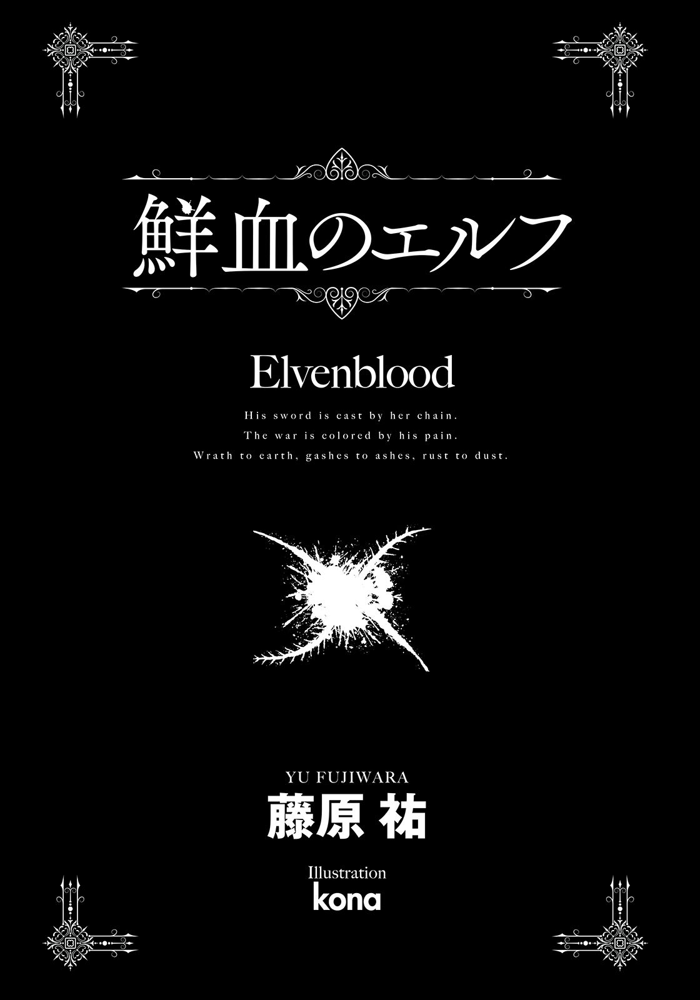

| 鮮血のエルフ (電撃文庫) | |
| 藤原 祐 | |
| (2015) | |
本書（電子版）に掲載されているコンテンツ（ソフトウェア／プログラム／データ／情報を含む）の著作権およびその他の権利は、すべて株式会社ＫＡＤＯＫＡＷＡおよび正当な権利を有する第三者に帰属しています。
法律の定めがある場合または権利者の明示的な承諾がある場合を除き、これらのコンテンツを複製・転載、改変・編集、翻案・翻訳、放送・出版、公衆送信（送信可能化を含む）・再配信、販売・頒布、貸与等に使用することはできません。

他者の評価を束ねることでなにかを語るというのは、あまり賢明な行為とはいえません。
誰それ曰く、あれはこういうものだ。何某曰く、いやああいうものだ。他の誰それ曰く、そうだそういうものだ。他の何某曰く、いやいややはりこういうものなのだ──どんなに多くの声を集めても対象の本質へ近付くとは限りませんし、評価の数が即ち真実の看破に繫がる訳でもありません。分析や批評と呼べるものにさえなっているかどうか。何故ならそれらは客観的とはとても言い難い、主観の寄せ集めに過ぎないのですから。
ですが世の中の物事は常に、誰かの主観によってしか観察できないのもまた事実です。
観察者たちの主観により紡がれた言葉が編纂者の主観によって選別整理され、選別整理されたものが閲覧者たちの主観により読み解かれる。あまり賢明とはいえない行為ではありますが、人が人であり神の目を持ち得ない以上、なにかを語る際には結局のところ、これしか方法はないのでしょう。真に客観的な視点とは神しか持ち得ないものですから。
ですから、今巷で話題になっている『彼』──イミナ＝ハイマティエに関しても、私はそういうふうに語ることにしようと思います。
もちろん、私は世間的に見れば彼にごく近い立場の人間ですから公平な視点からほど遠い編纂者となるのは明らかです。また一方で、彼のすべてを知っている訳でもありませんから、不足している情報も多々あります。ただそれでも、満足な見聞もなく噂だけで口さがないことを喚く人たちよりは、彼の姿をきちんと語れるのではないかと自負しております。
とはいえ私個人の感想をつらつらと述べるよりは、私がこれまで見聞きしてきた、彼に関する周囲の評価を挙げていく方がよいでしょう。この場合の『よい』とは、単に私の都合が『よい』ということではありますが。そっちの方が語りやすいのです。
さて。昨今、王都では、彼を英雄と呼ぶ声があると聞き及んでおります。
第二次妖精戦争において数々の武勲を打ち立てている『金狼騎士団』の前衛攻撃部隊長。単独でエルフの将軍と戦いこれを討ち取ることさえやってのけた、皇国きっての勇者、と。
一方で、それを過大評価だと揶揄する者もいるそうです。
敵将の首級をあげたとはいえそれが真に本人の実力によるものかどうかは定かでないし、そもそも戦の大局を左右できるほどの軍功でもない。所詮は平民出のいち兵士、ミリフィカ姫殿下に気に入られただけの成り上がりだ、と。
実際のところ、言葉としてはどちらも正しいのではないかと思います。
彼は数多の敵を打ち倒すことに成功しています。鬼や魔獣どもの討伐数は群を抜いていますし、先述の通りエルフと──あの、こちらの百人隊を単独で壊滅せしめる力を持った妖精族と──一対一で戦って勝利するという芸当もやってのけています。
ですが一方で、それは常に負け戦の最中でありました。
それが充分にわかっているのか、彼は自らの軍功を誇ったことなどただの一度もありません。いえ、功をたてたという認識すらないでしょう。
失礼と誤解とを承知で申し上げるなら、平民出であることも──我ら『金狼騎士団』の団長であられるミリフィカ＝ユサラ＝アストゼルレン閣下が、その平民出である彼のことをいたく気にかけていらっしゃるのも事実です。
ただ、英雄だとか大層なものでもないとかいった評価は、あくまで戦場から遠く離れた王都において、人伝の見聞でしか彼を知らない者たちが下すものです。彼を戦場で目にした者は、また別種の感情を抱くでしょう。
即ち、畏怖を。
実際、金狼騎士団においてすらも、彼のことを恐がる兵士たちの多いこと多いこと。彼と親しく口を利くことができるというだけで、私などですらおっかなびっくりされてしまうことがあるくらいです。実際の私は金狼騎士団の支援部隊長という大それた肩書きをもらっているのが悪い冗談だとしか思えないほどの、臆病な小娘だというのに。
彼の戦い方は鬼気迫っていて勇ましく、残酷で冷徹です。とてつもなく強いことは確かですが、それでいてどうしようもなく危うくて、戦っている最中はどこか楽しげでありながら悲壮感もあり──形容に矛盾を孕んではいますが、だからこそ──矛盾を孕んでいるからこそ、周りの人々に畏怖を与えるのでしょう。団員たちの一部には、彼を評して狂人などと揶揄する向きがあるのも事実です。戦いに駆られ心が壊れてしまった狂戦士だと。
ただそれらもやはりまた、一面的なものに過ぎないと私は思います。
兵士たちは、戦場の様子でしか彼を判断しません。もっと言うなら、彼がどんな気持ちで戦に臨んでいるのか、どんな気持ちで剣を振るっているのか、そして、どんな気持ちでエルフと戦っているのかを、よく知らないままでいるのです。
ですから、それらのことをある程度知っている──彼により近しい者たちは、彼に対してもっと別の感情を抱いています。
たとえば敬意。
たとえば渇仰。
たとえば感嘆。
たとえば報恩。
たとえば憐憫。
たとえば親愛。
そして彼ら彼女らたちは、そういった想いとともに彼を語るのです。
曰く「あいつの剣は疾く鋭い。いち剣士として負ける訳にはいかない」
曰く「あの人は本当に凄い。自分もいつかあの人と肩を並べて戦いたい」
曰く「実際よくやってくれてるよ。俺たちはあいつがいるからどうにか生き残れてるんだ」
曰く「私たちは彼に命を救われたよ。だから私たちの命はいつか彼のために使う」
曰く「あれはもっと幸せになっていい。見ていていたたまれなくなる時がある」
曰く「彼は我らが騎士団の中核です。それ以上、言葉で評する必要もありません」
私も、この人たちと同じ気持ちです。
英雄と呼ばれるのならば確かにそうなのでしょう。
心の壊れた狂戦士なのだと言われても正直なところ、否定はできません。
けれど私たちにとって彼は──尊敬に価する戦士であり、驚嘆すべき剣技の持ち主であり、掛け替えのない仲間であり、命を救われた相手であり、戦いに心を削る悲しい生き方をする人である彼は──数ある周囲の評価などとは無関係な、とても簡素な言葉で表現できます。
つまり、大事な友であると。
私たちはみな、イミナ＝ハイマティエのことが、好きなのです。

とはいえ──。
友人である私たちの評価で締め括っても、まるで煙に巻いたようでありましょう。
この手記を今読んでいる──それが明日のことになるのか後世のことになるのかはわかりませんが──どこかの誰かに、彼のことを理解してもらえるかは微妙なところです。
ですからここで、ある方の言葉を引用しておきたいと思います。
我ら金狼騎士団の輜重部隊長であり、イミナ＝ハイマティエの幼馴染みでもある少女──エリス＝イーヴィの、彼に対する評価です。
彼女は彼とともに幼年期を過ごし、彼とともに成長し、彼とともにあのサライド村の悲劇を乗り越え、彼とともに戦へ加わり、今現在、彼とともに戦場を駆け抜けている女性です。つまり彼の最も近くで最も長い時間を過ごしてきた、彼と分かち難い絆で結ばれた方です。
エリスさんの言は私たちの中でも群を抜いて主観的に見えます。
ですが実のところ──彼女の言葉こそが、真実に最も近いのではないかと思うのです。数多の主観を集めて束ねたものよりも、ひとりの主観の方が優れている。皮肉めいてはいますが、それが世の常なのかもしれません。
彼女、曰く。
イミナは、昔からずっと変わらないよ。
優しくて、純粋で、笑うと可愛い──私の愛しい人。
金狼騎士団支援部隊長 ライミィ＝セレア・シュティーメリル記述
『日記兼遺書』と題された辞書ほどに分厚い手記の、中ほどより抜粋
１
皇国暦一四九九年も半ばを過ぎた。
来年は一五〇〇年。百年に一度の紀元祭に向け、王都では国を挙げての準備が進められているらしい。まだ半年近く先のことだというのに、皆が気ぜわしく浮かれた気分でいるという。
でも、こんな辺境の村にはあまり関係のない話だった。
王都の喧噪が実際にどんな具合なのかは行商人からの噂話でしか入ってこないし、大人たちはそれを積極的に話題にすることもない。子供たちが王都に行きたい、お祭りを見たいだなどと騒ぎ始めても困るからだ──なにせここはエルフ領にほど近い国境近辺。王都までは馬車でもひと月近くかかる。気軽にふらりと赴くことなどできるはずもない。
もちろん、村でも紀元祭のお祝いはする。けれどそれは多少奮発したご馳走が食卓に並ぶとか、焚き火を囲んで楽器を演奏し夜通し踊るとかのささやかなものであって、半年も前から大掛かりに準備する必要などこれっぽっちもない。
村人たちは、いつも通りの暮らしを送っている。
だから、彼──イミナ＝ハイマティエもいつも通り、剣の稽古に励む日々だった。
一方の少年は小柄で、俊敏な獣を思わせた。
もう一方の少年は長身で、美しい彫像のようだった。
小柄な少年の携える木剣は幅広でやや短めな、決闘用のファルシオンを模したもの。
長身の少年が握るのは細くしなやかな、柄の長いサーベルを模した木刀。
木剣は荒々しく力の限りに打ち込まれ、振り抜かれ、切り上げられる。対する木刀は華麗な剣筋で攻撃をいなし、反撃を突き入れ、鋭く薙がれる。
その試合──もしくは勝負は、十数分ほど続けられていた。
数十米向こうで羊や牛がのどかに草を食む、小さな丘の牧草地である。
傍らに座り込んで見守るのは審判役の少女。戦いの行方を真摯な面差しで眺めつつ、それでいて左手ではどこか退屈そうに、膝元に生えた紫雲英の茎を指先で撫でている。こんなもののどこが面白いのかよくわからないわ、男の子って変......とでも考えているのだろう。
少女の心情に気付くことなく、ふたりの少年たちは上気し熱中していた。お互いの口元は緊張で引き締まっていながら、どこか楽しげに笑っているようだ。
けれど、勝負はやがて決する時を迎える。
小柄な方の少年が力の限りに上から叩き付けた木剣は、会心ともいえる一撃だった。それが見事なまでの流麗さで受け流された。体重をかけた打ち込みがほとんど空振りした反動で彼は平衡感覚を崩す。だが立て直そうと踏ん張り、顔を上げると相手はもう目の前にいない。気配を背後から感じ、慌てて振り向きざまに木剣を薙ぐも、雑な所作での攻撃は当たるはずもない。刀身は空を切り、捻りすぎた上半身は動きが硬直する。対する相手は落ち着いていた。最小限の動きで木刀がさりげなく突き出され、切っ先が喉元に当てられる。
打ち合いの趨勢は、それで決した。
「はい、そこまでー！」
高らかな調子で、少女の声が終わりの号令をかける。
「勝負あり、でいいわよね？」
その視線は楽しげでからかってくるように意地悪く、だから小柄な少年──イミナは、ほんのわずかだけしか一瞥を向けずにおく。
肩で息をしながら、宣言した。
「......僕の負けだ」
審判役の少女ではなく、自分を負かした敵に対して。
木刀の切っ先がそっと引かれる。
一歩下がりつつ優雅な動きで──つまり見惚れるような残心の中──得物を腰に差し、さっきまでイミナと戦っていた相手は薄く笑った。
「今のは悪くなかったよ」
「どこがだ！ いいように翻弄されたって感じだ」
彼とは対照的な無作法さで、木剣を草原に突き刺しつつしゃがみ込むイミナ。悔しさに任せて、自身の髪をくしゃくしゃとやる。黒みがかった赤毛が鳥の巣のように乱れた。
「剣に鋭さがあった。もっと速く打ち込めば私でも捌くのが難しくなるよ」
返ってきた言葉は謙虚であり、同時に涼やかだ。それは彼の容姿に相応しかった。
眉目秀麗な少年である。
切れ長の目、揃った睫、すらりとした鼻梁、薄い唇、細い顎、そして肩まで伸びた、まるで湖に反射する月光のような銀髪。人並み以上に高い背丈を除けば、女と見紛うほどに美しい。
面立ち自体は十三歳のイミナとほぼ同年代に見える。
あくまで人間に照らせば、だが。
人間のイミナとは違い、彼は妖精族。つまりエルフだった。
後れ毛の隙間から覗く耳は人間のものよりも大きく、先端が針葉のように尖っている。銀髪もエルフ族に多く見られる髪色だ。そしてエルフの外見年齢は、得てして実年齢よりも若い。
彼──シルジス＝エンドヴェールの歳は、イミナよりも三つ上、十六であった。
「あーちくしょう、また負けた！」
両脚を投げ出しつつ、晴れた青空に叫ぶ。
そうして、穏やかに立つエルフの少年を見上げた。
「どうにも負けが込んでるな、お前に」
「私だってまだまだ未熟な身だ、追い抜かれる訳にはいかないよ。......しかし正直なところ、きみの剣筋にはこの頃、目を見張ることが多い。油断はできないな」
シルジスは微笑みながら歩を進め、イミナの隣に腰を下ろす。
審判役をしていた少女が、彼に続くようにこちらへすり寄ってきた。
「ほんと？ ねえシルジス、こいつに気を遣わなくてもいいのよ」
イミナはたまらず顔をしかめる。
「うるさいな、姉さんは黙ってろよ」
少女の名はウルハ＝ハイマティエ。イミナの姉である。
今年十六歳、シルジスと同い年だ。清楚な雰囲気、明るい赤毛と形のいい唇、やや細めの目にすらりとした手足。村のみんなが褒めそやすほど大人びて綺麗な容姿をしているのに、意地の悪い性格がすべてを台無しにしている──少なくとも弟のイミナはそう評価していた。
「気を遣ってなんかいないさ。今日の勝負だって私が危ない局面は何度もあった」
「私としては、あなたに負けてほしくはないかなあ」
しなを作りつつ、シルジスの隣に座るウルハ。
そうして、彼を挟んで、弟へ──イミナへからかうような一瞥をくれる。
「だいたい、人間じゃあどう足搔いてもエルフには勝てないわよ。生体降霊術があるんだから。シルジスが霊術を使えば、今よりもーっと強くなるんでしょ？ たとえイミナが物体降霊術の使える魔剣を持っていたって、基本の動きが違えば敵うはずもないわ」
「そういう問題じゃない」
イミナは思わず声を荒げる。
「これは男と男の勝負なんだ、霊術は関係ない！ 女にわかってたまるかよ」
自分とシルジスとの勝負に水を差されたようで、気に入らなかった。
とはいえ、ウルハの言葉は正しい。
エルフだけが用いることのできる生体降霊術は、大地とこの森羅万象を通じる霊脈に流れる力──霊気を体内に取り入れ、自身の肉体を強化する業だ。霊的耐性がエルフよりも低い人間には不可能な芸当で、筋力、視力、反射神経などが現在の数倍から十数倍になるらしい。
基本的な身体能力を強化されれば、今ある差はもっともっと開いてしまうことになる。イミナとシルジスが稽古でそれなりにでも渡り合えているのは、エルフのシルジスが生体降霊術を使わずにいるからだった。
もちろん、彼は情けをかけている訳ではない。
霊術など使っては意味がないのだ。競い合っているのは、努力。鍛えた身体と技、そのもの。いんちきなどなしの純粋な力比べなのだから。
シルジスと稽古を始めてから何年になるだろう。木剣を振るのも覚束なかった小さな頃から、お互いがお互いの稽古相手だった。
勝率は通算で四対六といったところか。最近はどうにも連戦連敗で、それが響いている。
「確かに、霊術は関係ない、というのはその通りさ」
ふて腐れるイミナに、シルジスは笑って頷いてくれた。
「生体降霊術はあくまで身体能力を上昇させるだけだ。どんなに反射神経や運動速度が上がろうとも、基本の体術が生半であれば意味がない。そして剣術そのものに関して言うなら、妖精族と人間族......私とイミナとの間に生まれ持っての差などないよ」
「ふうん」
ウルハは釈然としない様子。
とはいえ、シルジスに食い下がることまではしなかった。
「だったらイミナがいつも負けるのは、純粋に剣の腕前が下だからってことね」
......代わりに、からかうような意地の悪い目でこっちを睨め付けてくる。
彼女の指摘は事実だった。そして、だからこそ苛立たしい。
「うるさいな、姉さんは」
イミナはこれ見よがしに溜息をひとつ吐き、そっぽを向く。さっきシルジスに木刀を突きつけられた喉元がひりつくような気がして、人知れず撫でた。
空を見る。晴れ渡って、抜けるように青い。牧草の匂いは日差しに溶けて心地よく、わずかな湿気が夏の始まりを思わせる。
秋までにもっと腕を磨いて、せめて勝率を戻したい。
陽の眩しさに目を細めていると、丘の下から声がした。
「イミナ！ ウルハ、兄さまー！」
振り向いた先に、三人の名を嬉しげに叫びながら駆け上がってくる姿がある。
エルフの少女だ。
尖った耳は小振りで可愛らしく、針葉というより水滴を連想させる。髪はやや青みがかった銀色で、陽射しを反射すると藍玉のような複雑な色合いを見せた。
つぶらな瞳、透き通った唇、目鼻立ちは可憐そのもの。が、同時にどこか素朴で、相手の心を無意識に安らがせるような力を持っている。
外見は人間の基準でいうなら十二ほど。実年齢はイミナとほぼ同じ、十四。
名はエリスという。エリス＝エンドヴェール──シルジスの妹であり、イミナとウルハにとってはシルジスと同様、幼い頃から一緒に遊んでいる馴染みだった。
エリスはとてとてと、胸に大きな籠を抱えて走ってくる。
その様子はイミナたちに、微笑ましさよりも危なっかしさを感じさせた。何故なら彼女はこうした時、昔からよく──、
「あ、転ぶわ」
「......転ぶな」
「そうだな」
三人が揃って予期した通りになった。
「あのね、私、おばさまと一緒にパンを......きゃあっ！」
見事なまでに、すてーん、と。
つんのめって、少女の矮軀は地面を転がった。
石ころか草に爪先を引っ掛けたのか、それともただ足をもつれさせただけなのか。たぶん後者だろう。彼女はなにもないところでも躓くことがある。昔からの悪癖だった。ただし、どうも昔から繰り返しすぎて転び慣れてしまったらしく、怪我をすることは少ない。
「いたた......」
今回もそうだった。無意識にだろうが受け身を取って身体を回転させ、前向きに倒れたはずなのに尻餅をつくような姿勢で座り込んでいた。
胸に抱えていた籠もまったく無事である。
いっそ感心してしまう。逆に器用といっていい。
「ったく......またか」
イミナは立ち上がって、エリスのところまで歩いていった。お尻をさすっている彼女に手を伸ばし、引っ張って立ち上がらせる。
「お前、すぐ転ぶんだからせめて走るなよ」
「だって、パンが......」
イミナの手を握っていない方の腕でぎゅっと抱えているのは、派手に転倒してもなお中身をぶちまけなかった木籠。中から胡桃と小麦の混じった、いい香りが漂ってくる。
きっと、上手く焼けたのだろう。
そして、焼きたてをできるだけ早く届けたかったのだろう。
「わかったよ。怪我、ないか？」
「うん。ごめんなさい、イミナ」
「別に謝らなくてもいい」
申し訳なさそうな顔のエリスに、イミナは苦笑した。
「そうそう、謝る必要なんてないのよ」
からかうような口調でウルハが混ぜっ返してきた。
「ほんとならエリスが転ぶ前にイミナがそれを察知して、すっ飛んでいって抱きかかえるべきなのよ。だから、それができなかったイミナの落ち度ね」
姉の言葉にイミナは眉をしかめる。
「滅茶苦茶なこと言うなって」
「あら、当然の義務よ。だってあんたは、エルフのお姫さまを守る騎士なんだから」
「やめろよ、そういうの......」
うんざりしつつ閉口した。
ウルハには昔からそういうところがある。
イミナとエリスのことを『お姫さまを守る騎士』だとか、果てはシルジスと自分のことを『王子さまに見初められた村娘』だとか、そういう夢見がちな比喩で語りたがるのだ。イミナは姉のこうした趣味が好きではない。だって、恥ずかしいじゃないか。
エリスから木籠を受け取って蓋を開けながら、それでもウルハは戯れ言を続ける。
「間違っちゃいないわ。だって実際、エリスはお姫さまなんだし」
ウルハに首を振ったのは、彼女の兄であるシルジスだった。
「姫なんて大層なものではないよ、私の妹は。それに私だって」
苦笑とともに、そう答える。
対するウルハはそれでも譲らなかった。
「同じようなものじゃない。人間の社会じゃあなたたちは王子さまとお姫さまなのよ」
実際、正しいのはウルハの方である。
シルジスとエリス──つまりこの兄妹の生まれたエンドヴェール家は、エルフの国において紛れもなく、王族のひとつであるのだから。
正確には『氏族長家』というそうだ。
エルフの国は、十六の氏族によって形成されている。個々の氏族はその本家とでもいうべき『氏族長家』によって統率されており、また国の首長であるところの王は代々、これら十六氏族長家の中から選出される習わしだという。そして現在の国王は、エンドヴェール氏族の当主。つまりシルジスとエリスの父親なのだった。
だが、
「エルフの王は世襲ではない。王が身罷ると、長老衆による合議と巫女の宣託によって次の王が十六氏族の中から選ばれるんだ。父が郷王だからといって、私が次の郷王になれる訳ではないんだよ。むしろ二代続けて郷王が同じ氏族から出ることは、ごく稀さ」
シルジスは半ば自嘲気味に笑う。
王族といっても、人間の社会にそのまま当てはめていいものではないのだ。
以前にも、今みたいに語ってくれたことがある。
郷王の子であっても、自分たちは決して特別扱いを受けてはいない。もちろん氏族長家の生まれであるからそれなりの責務はあるが、立場としては気楽なものさ、と。実際、こうして気軽に、人間の国へ遊びに来ることができるくらいには自由な身なのだろう。
それに対して、自分たち──人間の姉弟は、それぞれでまったく別の感想を抱いた。
姉であるウルハは羨望した。王族っていうだけでも素敵なのに、その上で気楽な立場でいられるなんて最高じゃないの、と。
対して弟であるイミナは同情した。人間の国へ遊びに行けるといったって国境付近のこんな田舎村が精一杯なんだろ？ それってやっぱり窮屈じゃないか、と。
とはいえ、彼らの気持ちなんて真の意味で理解できはしないのだ。エルフの国と人間の国とではなにもかもが違うし、イミナたちみたいな田舎の村の子供は、そもそも人間社会の王族が実際にどんな生活をしているかということすらも、よく知りはしない。
「それでも私は憧れちゃうけどなあ」
ウルハはじっとりとした視線でシルジスを見遣る。エルフの王子は困ったように、その視線に微苦笑を返した。彼の妹であるエリスは一方で、じっとイミナを見詰めている。
「ねえ、パン食べてみて。どうかな？ それ、私が作ったのよ」
正確にはイミナと、イミナの手の中にあるパンを、だ。
どうやらエルフのお姫さまは、自分の社会的立場に関する話などよりも自分が焼いたパンの出来の方が気になるらしい。
「お前が？ 母さんじゃなくて？」
「おばさまにも手伝ってもらったけど、粉を捏ねたのと形を整えたのと味付けをしたのは私、竃に入れたのだって私なのよ」
「へえ」
いつからだろう、エリスが料理に──人間の料理に興味を持ち始めたのは。
エルフが普段食している料理は人間のそれと比べるとやたら原始的らしい。素材をできるだけ加工せずに自然のままといえば聞こえはいいが、主食は炒った木の実や炙って塩を振った獣肉など。味はもちろん、かける手間隙、芸術性に関しても比べ物にならないそうで、エリスは幼い頃から人間の料理にのめり込んでいる。食べることに関しても、作ることに関しても。
パンをひと口、齧った。
表面は香ばしく、中はしっとりと柔らかく、練り込まれた胡桃の食感も心地いい。
なにより、いつもの味がした。それはつまり、
「母さんの焼いたパンとほとんど変わらないな、これ」
イミナたちの母親と比べても、遜色のない腕前ということだ。
「本当!?」
エリスは身を乗り出しながら気色ばんだ。
「あのね、粉を捏ねたのも形を整えたのも、味付けをしたのも私なのよ！」
「いや、それはついさっき聞いた」
「本当に同じ？ おばさまのパンと同じ味？」
「まあ、寸分違わずって訳じゃないけど......差はないよ」
「本当!?」
「何回『本当』って尋けば気が済むんだよ！ 本当だよ本当っ」
「やたっ！」
たじろぐイミナをまくしたてつつ、満面の笑顔を見せてはしゃぐ。
「ねえ、ふたりも味見してみて！ 早く！」
はしゃぐエリスは、シルジスとウルハにもパンの入った木籠を差し出す。
そんな彼女に、兄は苦笑した。
「やれやれ、やっと私たちにもおこぼれが回ってきたな」
シルジスの揶揄にウルハが追従する。
「そうねえ。あんたはいつだってイミナが一番だもんね」
「......、っ！」
エリスの頰はたちまち、足下に生える紫雲英の花ほどに染まった。
「べ、別にそういう訳じゃないもんっ」
「少しは落ち着きなさい。そんなふうだからお前はすぐどじを踏むんだ」
「あら、美味しいじゃないこれ。母さんのと遜色ないわよ、ほんとに。これならうちの愚弟の胃袋もがっちり押さえられるわ。あとはイミナの好物の、馬鈴薯のスープね」
「うう......兄さまもウルハも、意地悪だ」
「......姉さんはどうでもいいとして、シルジスの言ってることはその通りだぞ。お前、もっと落ち着けよ。転ぶ度に助けるのにも限界があるんだから」
「え、あ......うん、ごめんなさい」
エリスにとっては幸か不幸か、当のイミナは彼女の乙女らしい恥じらいにはまるで無頓着だった。異性を異性として捉えられるほどの成熟を心が迎えていないのか、或いは、自分に向けられる好意を正面から意識できるほどの度量がまだないだけなのか──それは本人にもわかっていない。ただ『エリスはいつだってイミナが一番』というウルハの言葉に、少しだけ心がざわりとした。腹が立つようなこそばゆいような、よくわからない心地だった。
「そ、そういえば」
この場の空気を誤魔化すように、エリスは話題を切り替えた。
「おばさまが、帰ってくるようにって。お昼ご飯にするからって」
「もうそんな時間か」
見上げれば太陽は天頂に達していた。
彼女の持ってきたパンはどれも二口三口で食べ終わってしまうほどに小さく、腹を満たすというよりも逆に空腹を思い出させる効果があった。きっとこの大きさはイミナたちの母親──リルの指示によるものなのだろう。子供たちの心理と腹具合をよく心得ている。
「あ......ついでに、薄荷を摘んできてって言付かってるの。サラダに使うから」
「ちゃっかりしてるわね、うちの母さんは」
ウルハは苦笑し、丘の奥、森との境目にある茂みへと目を向けた。
あの辺りには薄荷が自生しているのだ。繁殖力旺盛で畑に植えると手がつけられなくなるから、村人たちは皆、わざわざ育てたりせずに必要な時だけそこから摘んでいく。
「じゃあ、さっさと済ませましょうか。男ふたりはそこで待ってて」
エリスの手を引きつつ、ウルハは群生地へと足を向けた。
普段はひねて意地の悪い態度が鼻につく彼女だが、根っこの部分ではなんだかんだで面倒見がいいのだ──イミナとしてはあまり認めたくはないけれど。
「エリス、バスケット持ってあげようか？ さっきみたいに転んだら、今度こそお尻で圧し潰しちゃうかもしれないわよ。バスケットとあなた、どっちも酷いことになるかも」
「ううん、大丈夫。だってウルハが手を繫いでくれてるもの」
「言うわねえ」
姉妹のように仲睦まじく連れ立っていくふたり。
そんな彼女たちを遠目に、
「今日も呼ばれてしまっていいのかい？」
シルジスが遠慮がちにイミナへ問うた。
彼はイミナたちの中では一番大人で、こういう気遣いをいつもしてくるのだ。
社交辞令に対するじれったさと、社交辞令をさらりと言えることに対する羨望の入り交じった感情を覚えながら、イミナは顔をしかめた──これもいつものように。
「なに言ってんだよ。お前たちは僕らの家族と一緒だ。家族が遠慮なんかするなよ」
エルフの王子は、絵物語にでも出てきそうな眉目を美しくはにかませる。
「......そうか」
「それに、そもそもだ。うちの母さんだって、エリスを顎で使ってるじゃないか」
「はは、確かに」
風に吹かれて散る銀髪も、側頭部から覗く尖った耳も、美しい顔立ちも、白い肌も、すらりと伸びた手足も、おまけに高貴な生まれと育ちも──イミナとはなにもかも異なっている。改めて見なくても、充分承知している。
「お前たちのお陰で助かってるし、楽しいんだよ。僕らも、母さんも......村のみんなも」
それでもイミナは、シルジスとの間に差や壁を感じたことはなかった。
彼ら兄妹が初めて村にやってきた時のことを思い出す。
国境に面した村とはいえ、異種族は異種族。付き合いなどあってないようなものだった。それまで、森の中で出くわせば語りぐさになるほどに遠い隣人だったエルフの、しかも子供がふたり。大人たちですらなにごとかと遠巻きに見ることしかできなかったのに、物怖じもせずに話しかけたのは他ならない自分とウルハだった。
イミナは単純な好奇心から。ウルハはエルフへの憧れから。
聞けば、人間の社会に興味があって遊びに来てみたのだという。だったらと、案内役を買って出た。家々や、畑や、水車や、それから村の外れにある、姉弟がこっそり秘密基地にしていた小さな洞窟まで──村に同年代の子供がほとんどいなかったせいもあるだろう。それまでずっと五つ六つ歳上の集団に混ぜてもらってばかりだったから、イミナもウルハも、背丈の並んだ子と遊べるのが嬉しくてたまらなかった。村中をうろうろと無邪気に駆け回り、日が落ちる前にはすっかり打ち解けてしまっていた。
イミナたちがそんなふうだから、村人たちもやがてエルフの来訪者を歓迎し始める。今ではもう、皆がふたりの顔馴染みだ。
「私たちだって同じだよ」
シルジスは穏やかに一度目を伏せ、改めてイミナへと向き直った。
「エルフの国は退屈だ。退屈で、窮屈だ。私たちは氏族長家の子だから、なおさらさ。森の中じゃしがらみとしきたりに縛られてがんじがらめなんだ。......この村に来たのは逃避行みたいなものだった。でも今では、来てよかったと心から思う。森を抜けた先は明るくて、人間たちは向こうで言われてるような蛮族なんかじゃないことがわかった」
そこでいったん言葉を切り、再び目を伏せながら、
「いや、人間と仲良くなれたことが嬉しいんじゃない。きみたちだったからだ。きみたちと出会えたことこそが、私たちの最大の幸せであり、誇りなんだよ」
「......っ、よせよ」
臆面もなく恥ずかしいことを口にする。
ただ、眉目秀麗で立ち居振る舞いにも気品があるから絵になるし、浮ついた感じもしない。こういう時ばかりは種族の違いを卑怯だと思う。姉が夢中になるのも無理はないのかもしれない。イミナでさえどきりとしてしまうくらいなのだから。
こっちが照れているのを察して気遣ったのか、シルジスは眉を上げた。
「まあ、家族と言ってくれるのはありがたいが、少しは遠慮もさせてくれ。エリスじゃないけれど......人間の作る料理は美味しいからね。リルさんのは特に格別だ。食べすぎて、きみたちの分がなくなってしまうといけない」
「僕よりも食が細いくせによく言うよ」
冗談に、イミナは笑い返して脇を小突く。
「料理が足りなくなったら母さんは喜んで作るさ。材料がなきゃ村の人が分けてくれるし、なんなら僕らで狩りに行けばいい。それに、エリスだって最近は......」
「イミナ、兄さま！ 摘み終わったよー！」
と、言葉を遮るように、話題に挙げた当人が丘の上から声を張り上げてくる。
ぶんぶんと嬉しそうに手を振りながら、
「早く帰りましょう！ あのね、パンだけじゃなくってご飯全部、私が手伝ったのよ！」
「......だってさ」
奇しくも、イミナの言わんとしていたことは彼女と同じだった。
故に、続ける。
「それに、エリスだって最近は半分くらい手伝ってるみたいだからな。おあいこさ」
「じゃあ、遠慮はせずにおこう」
穏やかな顔でシルジスは肩を竦める。
「お待たせ」
談笑する少年ふたりの元へ、少女ふたりが小走りで戻ってきた。
ウルハはエリスの手を引いている。それは昔からの習慣だった。エリスが転ばないようにと気遣ってのことで──こういうところはきっちり『お姉さん』をしているのだ。
「ねえ、なんの話をしていたの？」
「私たちは家族だ、という話さ」
だがイミナが感心したのもそこまで。
シルジスの返答に、ウルハは色気付いた流し目を寄越し、
「家族、か。......ねえシルジス、あなたも料理のできる女の人の方が好き？」
またぞろ変なことを言い始める。その際、エリスをさりげなくこちらに押し付けつつシルジスに腕を絡めていく辺りがいろんな意味でちゃっかりしていた。
「人間の社会ではそういう女性が好かれるのかい？」
きょとんとするシルジス。よくわかっていないのだ。料理に手間や工夫を凝らすことのないエルフ族は、良妻賢母の概念が人間とは少し違うのだろう。
イミナは笑い、
「姉さんが母さんを手伝ってるのを見たことがないけどな」
姉に皮肉を言いつつ、シルジスへと目を留める。
足元にうっちゃっていた木剣を腰帯に差した。
「昼飯食ったら勝負再開だ。次は負けないからな」
「ああ、わかった。でもそれは私も同じだよ」
「もう、つれないなあ。あんたたちはそればっかり！」
頰を膨らませるウルハをさりげなくなだめながら、シルジスは──イミナの親友であるエルフは──楽しそうに、少年らしい顔で笑んだ。
２
イミナたちの住む村の名はサライドといい、ミドガルズ皇国の東端に位置していた。
皇国の東端──それはつまり、この大陸における人間の支配領域の東端ということでもある。
サライドの東には森が広がっていて、森の奥はもう人の住まう領域ではない。
妖精郷。エルフの国である。
人間の間では、エルフヘイム、とも称される。広さは不明。住人の数も不明。国家間で不可侵条約が結ばれてはいても、本格的な国交はあってないに等しい。
妖精郷は深い森の奥にあって、そこは人の地よりも遥かに濃い霊気で覆われているという。霊気は世界の森羅万象に宿る生命力の源であるが、霊的耐性の高いエルフと違い、人間の身には過ぎれば毒となってしまう。故に人があちら側へ行くことは不可能だった。物好きなエルフが時折こちらへ遊びに来ることがあるにせよ、結局はその程度の交流が持たれているだけ。
サライドは小さな村だ。
王都からも遥かに遠く、産業らしい産業もない。
暮らしは単調そのもの。畑で野菜と麦を育て、森で──もちろんこれは妖精郷へ分け入る手前、人間の森のことだ──獣を狩り木を切り、川で魚を捕る、ただそれを繰り返す日々。
人口は三百に満たず、世帯の数も五十を超えない。村人たちはみなが顔馴染み同士で、目立った争いごともなく、辺境だから旅行者も来ない。子供の数だって限られている。
そんな小さな村は、イミナのような血気盛んな少年にとって、いかにも狭かった。
──けれど、狭苦しくあることと、好き嫌いとはまったく別の話である。
サライドは、窮屈な箱庭であると同時に、愛すべき地でもあった。
牧草地から家に帰る途中で行き交う村人たちはイミナたちが生まれる前からずっと変わらぬ暮らしをしていて、それ故に気安く、優しい。
「やあ、リルさんところの。それにエルフのおふたりもか。今日も元気そうだね」
「こんにちは、ドルモアさん」
牧草地から家へ帰る道すがらに、村で唯一の宿屋がある。そこの主人であるドルモアは恰幅のよい中年男。奥さんであるナナの尻に敷かれており、今日も今日とてまるで主婦のように、庭先で洗濯物を干していた。
「また剣の稽古かい？ いや、男の子はそうでなくっちゃ」
腰に差した木剣を一瞥し、にこにこと笑う。
「やだおじさん、物干し竿に背を伸ばしながらじゃ、説得力ないわよ」
「はは、ウルハちゃんは手厳しいな。ま、その通りだ」
皮肉を混ぜっ返すウルハにも物腰は柔らかい。
「ナナおばさんはなにしてるの？」
「ご飯を作ってくれてるよ。シチューのいい匂いがするだろう？」
「あ。この匂い、鹿ですか？」
料理のこととなると目の色を変えるエリスが問う。
「そうだよ。昨日、立派なのが獲れたんだ」
ウルハはからかっているが、ドルモアは優秀な狩人だった。こんななりであっても、山に入れば弓矢ひとつで大きな猪や鹿を獲ってくる──宿屋とはいっても客など滅多に来ないから、普段は農作業や猟で生計をたてているのだ。
「妖精たちの恵みに感謝だね」
シルジスとエリスに片目を瞑ってみせるドルモア。
この村は妖精郷が近いせいか、山野で得たものを『妖精の恵み』と捉え、エルフたちに感謝する風習がある。もちろん人間の森は妖精郷ではないし、エルフたちの領土に踏み入っている訳でもない。が、国境を挟んだ隣人としての気遣いと、森の住人への敬意がそこにはある。
シルジスは首を振った。
「とんでもない。ドルモアさんの弓矢で勝ち取った獲物です」
「いやあ、エルフの森にいる魔獣に比べたら、勝ち取っただなんてとてもとても」
「変わりませんよ、獣も魔獣も」
と、家の中から、怒号じみた女性の声。
「昼ご飯もうすぐできるから、ちゃっちゃと干し終わっちゃいなさい！」
「ああ、もうすぐ終わるよ！ ......そういう訳だ、すまないね。きみたちも早く帰ってリルさんの料理に舌鼓を打つといい。ま、僕の家内には負けるけどね」
「はいはい、ご馳走さま」
ちゃっかりと自分の妻を褒めるドルモアにウルハが混ぜっ返し、一行は歩みを再開した。
とはいえ、人と行き会う度にこんな調子が繰り返される。
畑の畦道では、農作業をしている夫妻が「いつも仲がいいな」と鍬の手を止める。
雑貨屋で店番をしている看板娘は、二年前まではイミナたちと一緒になって野原を駆け回っていたくせに「子供は気楽でいいわねえ」と大人ぶった態度で茶化す。
でかい猪を軽々と肩に担いだ老爺はすれ違いざまに「夕方にいいところの肉を持っていってやる」と笑った。もはや七十に達しようかというのに元気なことだ。
畔畑の横でひとり遊びをしていた子供が、エリスを見付け「えるふのねーたん」と嬉しそうに声をあげて駆け寄ってくる。しゃがみ込んで頭を撫でるエリスだが、尖った耳を容赦なく引っ張られて困った顔になった。畑仕事をしていた母親が立ち上がって「こら！」と叫ぶ。
「なにしてるの！ もう......ごめんなさいねえ、とんだ迷惑を」
「あはは、いいですよ」
「こら、失礼なことしちゃダメじゃないの。このお姉ちゃんはね、エルフのお姫さまなのよ」
「むー......」
母親によって引き剝がされつつ、幼子はそれでもエリスの耳を触り足りなそうにしていた。きっと、自分のものとは明らかに形が違うのが不思議でたまらないのだろう。
どの村人との会話も、のどかで微笑ましく、安らげる遣り取りだった。ただやはり、イミナがそんな彼らに対していつも退屈さを感じているのは確かではある。
でも、ひとりだけ例外がいた。
家のほど近くで彼──ラクシュスと出会った時、イミナの鼓動は高鳴った。
「やあ、今日も元気にやってるみたいだな」
イミナたちを認めて気安く手を挙げる。
歳の頃は三十を越えたばかり。革鎧で覆われた四肢は精悍。優しげな細面に目立つのは、左の眦から額にかけて斜めに入った古い傷痕。それは戦傷であり、柔和な面立ちに秘めた戦士としての勇猛さを暗示しているかのようだった。
ラクシュスは王都から派遣されてきた、国境警備兵である。主な仕事は、妖精郷からこちら側にやってきた化け物の討伐だ。
妖精郷は立ち込める濃い霊気の影響で、人間の国とは違った生態系ができあがっている。魔獣や鬼──ケルベロスやサラマンダー、オーガやゴブリンといった人の身には危険な生物たちが、時折こちら側に迷い込んで悪さをすることがあるのだ。
もっとも、シルジスの父親であるエンドヴェール家当主がしっかりと管理しているから、この辺りでそういうことは滅多に起きない。故に彼は、こうして村を警備しつつも、他の家の畑仕事や狩りを手伝ったりする毎日を送っている。
「ラクシュスさん！ こんにちは」
それでもイミナの瞳は輝く。
ラクシュスの纏った革鎧、鍛え抜かれた身体、加えてなによりも──腰に提げられたひと振りの剣に、心が惹き付けられるのだ。
それは狩りに使われる弓矢や、薪割りの斧や、家に転がっている護身用の槍などとも違う。
霊術を使用するための武器。
つまりは魔剣、だった。
人間はエルフと違い、己の身に霊気を注ぎ込んで強化するということができない。霊的耐性が低いせいで濃い霊気が逆に毒となり、過剰な栄養に身体が害されてしまうからだ。
故に、自らの肉体の代わりに無機物を使って霊術を稼働させる術が編み出された。魔剣や魔杖などの受け皿を媒介に、濃縮された霊気を力場に変換、神秘を発動させるのだ。これを物体降霊術という。有機物に生命的な力をもたらすエルフの生体降霊術とは違い、無機物に炎や氷などの自然的な力を付与できるのが特徴である。
「はは、お前は相変わらず、俺に挨拶してるのかこいつに挨拶してるのかわからないな」
ラクシュスは苦笑し、腰のものをこつりと指先で叩いた。
鞘の形状だけを見ても明らかに戦闘用とわかる、湾曲した三日月刀。抜き身を何度か見せてもらったことがあるが、竜銀を芯にして刃部分に焰鉄を巻いた刀身はうっとりするほど美しかった。何よりも少年の心を沸き立たせるのは、柄周りを構成する機関部──霊気管を装塡するための管倉と、刻印の彫り込まれた稼動器、そして引き金。ラクシュスの帯から吊り下げられた革袋の中には霊気管が詰まっていることも知っている。
銘を『微笑するリミナリエ』。
彼がずっと愛用している魔剣である。
今はこうして鞘に納まっているが、いざ戦いに際してはするりと抜き放たれるだろう。同時にラクシュスが革袋から取り出すのは霊気管。高濃度の霊気を円筒形の硝子管に注入して封じ込めたものだ。これを機関部の管倉に装塡し、引き金を引く。すると管に圧力がかかり、管内部の霊気が稼働器の刻印へと流し込まれる。霊気の宿った刻印は霊術を稼働、刀身へと伝達させ、剣の表面に神秘を発動させる。即ち、炎や、氷や、酸や、振動や、時には破壊の力そのものを宿し、一閃とともに敵を滅するのだ──。
その様子を夢想するだけで、イミナの憧憬はざわついた。
「今日も剣の稽古をしてきたのか？」
「うん」
「感心だな。腕も上達してるみたいだ。目を見ればわかる」
ラクシュスは嬉しそうに顔を綻ばせる。
「まあ、焦るな。一歩ずつ進んでいけ。お前は立派な剣士になれるよ。俺が保証する」
イミナはたまらず尋ねた。
「──ラクシュスみたいに？」
「いいや」
返ってきたのは否定であり、同時に、イミナの期待していた言葉だった。
「俺なんかよりももっと上......お前の父さんみたいに、だ」
無意識に、背中が粟立つ。
ラクシュスの魔剣を目にする度に、夢想する光景がある。
頭の中で颯爽と雄々しく剣を振るう男だ。それはラクシュスであり、成長したイミナ自身であり、同時に──見たこともなければ会ったこともない、イミナの父の姿だった。
父は王立兵団に所属する兵士だった。
だが、もうこの世にいない。
イミナが物心つく前に南方で起きた蛮族との戦争で名誉の戦死を遂げたという。
ラクシュスは父の後輩で、部隊の百人長であった彼によく世話になっていたらしい。父が亡くなった後、その恩に報いるため、彼の生まれ故郷であるこの村への配属を希望したそうだ。
だから幼い頃から、イミナはラクシュスによく聞かされていた。
曰く、お前の親父は勇敢な人だった。勇敢で、家族と国を愛する立派な人だった。自分は何度命を助けられたか知れない。リルさんとお前たち姉弟のこともよく聞かされていたから他人とは思えない。だからあの人亡き今、代わりにこの村を守るのが俺の役目だ、と。
誇らしいと思う。父のことも、ラクシュスのことも。
だから自分もいずれ同じようになりたかった。
イミナの夢だ。剣の腕を磨き、立派な剣士となって都へ行き、王都の兵士となること。
そうして──、
「イ、イミナ」
熱っぽい目でラクシュスの視線を受け止めていると、不意にエリスが背後から、袖をぎゅっと摑んで引っ張ってきた。急かすように、不安そうに言う。
「おばさまが待ってるわ。ご飯に遅れる。だから、もう行こ？」
「ん？ ああ」
エリスの態度に怪訝な顔をしつつも、イミナは頷いた。
「そうだな。早く帰るといい」
ラクシュスは腕組みをして笑った。エリスの言葉を額面通りに受け取っているようだった。
「リルさんの料理を冷ましちゃいけない。もったいないぞ」
「うん。じゃあ、ラクシュスさん。また」
「ああ、またな」
頭を下げ、手を振り合う。ラクシュスはそのまま道の向こうへと歩いていった。きっと彼も、自分の家へ帰って昼食だろう。
もうすぐそこに家が見えている。家族三人で暮らすにはやや大きめの一軒家。さっきイミナたちが齧ったパンと同じ香りと、加えて魚の焼ける匂いが漂ってきた。
家へ帰り着く。玄関の扉をウルハが開ける。彼女に腕を引っ張られながら、シルジスが「お邪魔します」と入っていく。それに続こうとした時──最後尾にいたエリスが、
「......ねえ」
さっきと同じように、また袖を引き、イミナを立ち止まらせた。
「ん、どうした？」
振り返る。
と、彼女は数分前よりも不安げな表情で、つぶらな瞳をじっとこちらへ向けてきた。
そして小声で震えるように、問う。
「イミナはラクシュスさんみたいに、兵士さんになりたいの？ 兵士になるためには、教練学校とかいうところに行かなきゃいけないんでしょ？ ここから離れたところに」
「え」
「兵士さんには、十四歳からなれるって聞いた。イミナ、年の暮れには誕生日だよね」
「いや、そう......だけど」
「十四になったら、学校に行っちゃうの？ それで、もうずっと......」
不安に混じる悲しみの色。
それとは対照的に力の込められる、袖を握る指先。
違う、と言おうとした。
確かにイミナは、兵士になりたい。それは夢であり、目標だ。そのために連日ひねもす剣の稽古に勤しんでいる。兵士になるためには村を出て教練学校へ入学しなければならないのも事実だし、十四になったらすぐにでもそうしたいと考えてもいた。
だが、イミナの夢は兵士になることだけではない。
兵士になって、いずれ、国境警備兵としてここへ戻る。
ラクシュスと一緒に、父親の遺志を継いで、この手で守りたいのだ。村と、母と、ついでに姉と、更にはこの村へ遊びに来るエルフの兄妹も──。
それを口にするのは、照れくさくてできなかった。
だから首を振り、エリスの手を無理矢理に振り払ってそっぽを向く。
「わかんないよ、先のことは」
代わりに手を握って引っ張った。
「あ......」
引きずられるようにして、エルフの少女は玄関を潜らされる。少年は無闇に大きな声で「ただいま！」と叫ぶことで、気まずさを誤魔化した。
もちろん自分の将来のことなのだから、近いうちにはっきりさせなければならない。
けれど今はまだ、日常を送っていたいという思いが強かった。
３
そうして──季節は巡り、初夏から夏を終え、秋も半ばを過ぎる。
皇国暦一五〇〇年の紀元祭が始まるまでは、もう三カ月に迫った頃。
サライド村での毎日は穏やかに流れていた。
しかしイミナはここしばらく、どうにも落ち着かない日々を過ごしていた。
理由はふたつある。
ひとつは、自分の将来のこと。
イミナの十四歳の誕生日にはあと二カ月ほどで、決断の時期はすぐそこまで来ていた。つまり自分はあと二カ月以内に意志を固めなければならない。村に残りもう少し剣の稽古を積むか、もしくは村を出て教練都市へ赴き兵士に志願するかを。
そして理由のもうひとつは、シルジスとエリスのことだった。
あのエルフの兄妹が、ここしばらく村に来てくれていないのだ。
こんなことは珍しかった。いつもは一週間と開けずの頻度で来訪してくれているのに、もう二カ月も姿を見せていないなんて。しかもイミナの誕生日を控えたこんな大事な時期に、だ。
シルジスと剣の稽古をしたかった。エリスとも話をしたかった。村を出ていくならなおさら──いや、村を出ていくかどうかを決断するためにも、ちゃんとしなければならないのに。
シルジスとの勝負に勝ち、自分の腕が都会でも通用するかを改めて問う。エリスに自分の夢を、照れ隠しや曖昧な態度でではなくちゃんと真摯に語る。どちらも、けじめとして必要だ。
気ばかりが焦った。このままイミナの誕生日まで来ないなんてことはあり得ないと思いたいが、二カ月来ていないのだからこれがあともう二カ月延びても不思議ではない。
姉のウルハも不満げだった。もっともこちらはイミナのような深刻な理由ではなく、単に愛しのシルジスの顔を見たいというだけではある。
「ほーんと、どうしちゃったのかしら」
居間のテーブルに顔を突っ伏しながら、盛大な溜息を吐くウルハ。
昼下がり──いつもであれば村はずれの丘で剣の稽古や野草摘みに勤しんでいる頃合いである。もう何年も、四人でそんなふうに一日を過ごすのが当たり前だった。だからシルジスたちが来ない日はどうにも手持ち無沙汰になってしまう。
「二カ月経ったら乙女は髪型も変わるのよ。シルジスに見てもらえないなんて、最悪」
「どうでもいいよ、そんなこと」
窓際の縁に行儀悪く腰掛けつつ、イミナは姉を睥睨する。
視線を外して自分の掌を見た。シルジスの打ち付けてくる竹刀の感触を思い出す。転びかけたエリスを引っぱり起こす時の重みを思い出す。どちらも、もう随分とご無沙汰だ。
剣の稽古はシルジスがいなくても続けてきた。時折、ラクシュスに相手になってもらってもいる。けれど、やはり彼でなくては駄目なのだ。ひとりで素振りをしても張り合いがない。ラクシュスとでは実力差がありすぎて緊張感がない。あいつとじゃなければ──幼い頃からずっと拮抗した勝負を続けてきた幼馴染みとではなければ、鍛えているという実感がない。
「あなたたち、そう毎日毎日腐っててどうするの」
外で洗濯物を干し終えた母──リルが、居間へ戻ってきた。
「部屋にこもってるくらいなら外に出なさいな。莵か野草でも採ってきて、今日の夕飯を一品増やす努力でもしたらどうなの？」
「嫌よ。シルジスと一緒ならやる気も出るんだけどなあ」
「シルジスたちをだしに怠けてるんじゃないわよ、まったく」
母は呆れて肩を竦めた。
「だったら勝手にしなさい。ところで私は今からお砂糖をたっぷり使ったお茶を淹れるけど、お手伝いを断る子たちの分までは必要ないわよね？」
「ひっど！ そっちこそ、お茶をだしに手伝わせようとするなー！」
ウルハは唇を尖らせて大仰に呻いた。リルはそれを鼻で笑いつつ一瞥し、台所へと消えていく。底意地の悪いところは母と娘でそっくりだ、とイミナは思う。口には出さないが。
「ねえイミナ、あんたもエリスに会えないなんて残念よね？」
母がいなくなったことで、姉の矛先は弟へ向いた。
「......、僕はシルジスと剣の稽古をしたい」
「あら、じゃあエリスには会いたくないってこと？」
そうは言ってない、という反論が喉まで出かかったが、口にすると「じゃあやっぱり会いたいんじゃない」などと目の色を変えてくるだろう。
だから、話題をずらす。
「なんで来ないんだろうな」
もっとも、ずらしたのは枝葉から核心へ、ではあった。
さしものウルハも不安げに眉をひそめる。
「そうね」
愛しい人と会えない、顔を見たいのに見せてくれない──そんな乙女めいた身勝手な感情とは違う、純粋に相手のことを案じる気持ちがあった。
イミナもウルハも、自分の都合ばかりを気にしている訳ではないのだ。
シルジスたちがサライド村に来られないのはのっぴきならない理由があるからではないかと思う。それがなんなのか。
厄介ごとを抱え込んでやしないか。
病気でもしているのではないか。
ふたりの身に、なにかあったのではないか──。
エルフの国まで様子を窺いに行くことはできない。連絡手段もなかった。手紙を配達できる者などもちろんおらず、伝書鳩も人間と同じで濃い霊気に耐えられない。
だからイミナたちにできるのは、ただ待つことだけだ。
「まったく。事情があるならあるで、言ってくれればいいのよね」
ウルハはむくれ顔でぽつりと呟いた。この場にいないシルジスを恨むように。
「うん」
イミナは同調した。
「せめて一言あれば、気を揉まずに済むのにな」
「王子さまなんだから、言伝を頼めるひととかいないのかしら」
「ああ、そうだな」
テーブルに肘をつき、窓の外を眺めながら生返事をした。
眺める景色の中に、ひょっこりシルジスとエリスの姿が見えやしないかと期待する。けれど当然そんなことはなく、動くものは茶けた草木と、秋の風にそよぐ隣家の洗濯物ばかり。
「あらあら......これは重症かもねえ」
ふたり揃って黄昏れていると、お茶を持って戻ってきた母が溜息混じりに苦笑した。
けれどイミナもウルハも、混ぜっ返す気が起きない。砂糖とミントの甘い香りよりも、ここにはいない友人ふたりに心を支配されていた。
せめてこの想いが届けばいいのに。親友ふたりの身を案じていることが、大地に揺蕩う霊気に乗って国境を越えればいいのに──そんな詮無いことを考えながら、溜息を吐く。
ふたりの想いが妖精郷まで届いたのかどうかはわからない。
けれど、それから更に五週間ほどの後。
イミナの誕生日が半月後に迫った頃、シルジスはようやく村へと姿を現した。
冬の予兆を感じるほどに肌寒い夜だった。
時刻は夜半を越えていた。母も姉も既に寝入っているようで、家の中はしんと静か。外からは狼の遠吠えすらも聞こえず、自分の呼吸音が耳に響く。
ここ最近はずっと、自分の将来とかシルジスたちのこととか、あれこれと考え込むことが多い。寝る前は尚更で、だからイミナは眠りに就くのが家族の中で一番遅かった。
とはいえ、いつもより強めに包まった布団に体温が伝わり、その心地よさが微睡みを誘っている。身体が弛緩し、思考が闇に落ちていくのを感じ──ああこれで今日はもう余計なことを考えずに済むな、などと頭の片隅で安堵しかけたその時、
こつん、と。
なにか固いもので窓を叩く音が、イミナの意識を引き戻した。
「ん」
寝ぼけるほど微睡みは深くない。なんだろうと瞼を開く。
こつん、こつん。音は続いて二度、三度。
落ちてきた木の実がぶつかったとかではない。半身を起こした。目は暗闇に馴れている。窓に視線を向けると、闇の中に茫と浮かぶ白銀の髪、そして陶磁のような肌。
「......シルジス？」
夜にあっても見紛うはずもない。
かれこれ、三カ月半振りになる。
そこにいたのは、イミナがずっと会いたかった、親友だった。
驚きとともにベッドから立ち上がる。窓に駆け寄って桟を摑み力任せに開け、
「どうしたんだよ、お前！ こんな夜中に、いや、今まで......」
発しかけた大声は、相手の顔を見て急速に萎んだ。
シルジスは──久方ぶりに見るその顔は、どういう訳か酷くやつれ、疲れていて、
「すまない。少しいいか」
こちらの感情をぶつけることが憚られるほど、思い詰めた声音をしていた。
「......あ、ああ」
意識せず、身体の芯が冷える。心臓が軽く跳ねる。
頭の中に疑問が幾つも浮かんだ。今までいったいなにをしていたのか。三カ月半の間、どうして姿を見せてくれなかったのか。何故いきなりこんな夜中にやってきたのか。けれどそれらはすべて、喉の奥に飲み込まれる──シルジスのただならない様子によって。
こんなにも切羽詰まった表情で、こんなにも緊迫した気配を発しているなんて。
「わかった」
視線を合わせてから十秒ほど。
ようやくイミナは頷くことができた。頷くことしか、できなかった。
「少し待っててくれ」
踵を返し、壁に架けていた上着を羽織り、できるだけ物音を立てずに家を出た。
姉や母を起こさぬように。彼女たちに知られてはいけない。きっとシルジスがそれを望んでいない。彼は自分に──自分だけに会いに来たのだ。
イミナの姿を認めると、シルジスは無言で背を向け歩き出した。ついてこい、ということだ。だから後を追った。あれこれと問いたくなる気持ちをぐっと抑えながら。
月はほぼ真円。深夜であっても仄かに薄明るく、目を凝らせば足下に影すらも見える。先導する少年の歩は速かったが、暗さのせいで遅れるようなことはなかった。
家を離れ、道を進み、十数分ほど経って、やがて辿り着いたのは牧草地帯の小さな丘。
それは、ふたりが剣の稽古をしているいつもの場所だ。
シルジスは立ち止まって振り返り、ようやくイミナの顔を見た。無言のまま、こちらを促すような顔。尋きたいことを尋いてくれ、という意味だと思った。
わずかに逡巡し、イミナは目を細めた。
「なにかあったのか？」
深い嘆息──シルジスがそんな重苦しい溜息を吐くのを見るのは初めてだった──の後、彼はぽつりと、端的に、自らの境遇を答えた。
「父が死んだ」
「え......」
その言葉に、イミナは立ちすくむ。
父。
シルジスとエリスの父。それはエンドヴェール家の家長であり、エンドヴェール氏の族長であり、そしてエルフ十六氏族すべてを束ねる、つまりエルフの王。
──エルフの王さまが、死んだ？
向こうの社会がどんな仕組みで動いているのかはよく知らない。断片的にしか教えてもらったことがない。けれど、それが大変な事態であるということくらいはわかる。
なにより、シルジスとエリスにとっては王さまである前に父親なのだ。
どんな言葉をかければいいのかわからなかった。慰めればいいのか、励ませばいいのか、悲しめばいいのか。シルジスがなにを思っているのかも窺えない。悲嘆に暮れているというよりも、むしろなにかを思い詰めている顔だった。
「それ、は......その......大丈夫だったのか。いろいろと」
考えあぐねた末の、曖昧で中途半端な問いかけ。
シルジスは瞼を閉じた。閉じて、
「三カ月前のことだ」
ゆっくりと──絞り出すように語り始める。
「父は、我がエンドヴェール氏族の氏族長だった。そして妖精郷の郷王だった。偉大なエルフだった。今の私などでは、どんなに手を伸ばしても背中にすら触れられない」
きっと感情を整理しながらなのだろう。つっかえながらゆっくりとだった。
「でも私は、後を継がなければならない。偉大な父の代わりに氏族を支えなければならない。氏族の未来を背負う......それが、エンドヴェール氏族長家の長子として生まれた私の務めだ。たとえ私がどんなに未熟であっても、状況がどんなに過酷であっても、時は待ってくれない。もう、後戻りはできないんだ」
外套の端から覗く拳がぎゅっと握られていた。ぶるぶると震えている。
唇は青ざめていて、それでいて紅い。
イミナを見据える瞳の色は強ばっていた。
思わず固唾を飲む。
彼がなにを伝えようとしているのか。或いは、なにを吐き出そうとしているのか。
「郷王が崩御したことで里は変わろうとしている。いや、変わろうとしているのではない......もう変わってしまったのだ。私はその中で、新たな氏族長として務めを果たす必要がある」
「......お前、もしかして新しい王さまになるのか？」
シルジスは首を振った。
「いや。新しい郷王はリリスグレイブ氏族から選ばれた。私はあくまで氏族長に過ぎない。だが、その氏族長の地位と責務が......重い。あまりに重い」
「氏族長、か」
今までのようにはいかなくなるのだろうか。村へ遊びに来ることも、自分たちと会うことも、気軽にはできなくなってしまうのだろうか。
考え込むイミナを、シルジスは一瞬だけ寂寞の視線で見遣った。
そして直後、唇の端を引き攣らせたように微笑する。
「......イミナ」
外套の中に手を突っ込むと、脇に差していたらしいそれを取り出す。
イミナに向かって、放り投げた。
「え」
くるくると回転しながら放物線を描く、長い棒状の物体。
反射的に両手で受け取ってみると、木剣。刀身を幅広に削り、決闘用の片手剣を模した──イミナが毎日の稽古で使っているものだった。
確かいつものように裏庭に立てかけていたはずだ。窓を叩く前に回収していたのか。
シルジスはそれを横目に、逆の腰から得物をもう一本抜き放つ。
ゆるやかな曲線を描いて長い、片刃の木刀。彼の愛用品だ。
エルフの少年は木刀を構えながら外套を脱ぎ、足元に放り捨てた。
しなやかな四肢が露になる。
袖の上からでもわかる、細身ながらも鍛え込まれた、美しい彫像のような筋肉。
「......シルジス？」
「きみは、兵士になりたいのだったな」
そうして、親友に──人間の少年に向かって、静かに語りかける。
「人間の国に仕え、守る立場か。私と同じだ。それでいて、逆だ。皮肉なものだな......きみの誕生日と、私の父の死。ふたり揃って、決断の猶予がなくなってしまった」
木刀を青眼に構えながら、
「おい、どういう......」
悲壮さの中に切迫した覚悟を感じさせる気配を発しながら、
「私は選ばなければならない。だから、これで決めさせてくれ」
それでいてどこか助けを求めているような声音で、けれど、
「真剣勝負だ、イミナ」
有無を言わさぬ──口調で。
「シル......ジス？」
「私はこの勝負に自分の未来を仮託する。故に、全身全霊でいく。きみにもそうしろとは言わない。どこまで付き合うかはきみの自由だ。けれど、覚えておいてくれ。私程度に勝てないようでは......きみはこの村を、この国を、守れない」
「......っ！」
言葉に、心臓がどくんと脈打つ。
それは挑発の形を借りた懇願だった。つまり、本気で仕合ってほしい、という。
背に緊張が走る。
ただごとではないのが充分以上に伝わってきた。これを断ることなどできない。
おまけに、
「わかっている、これは私の身勝手に付き合わせているだけだ。すまないと思う。でも......きみしかいないんだ、イミナ。これは、きみじゃなきゃ駄目なんだ」
そんな嬉しいことを言われてしまっては、奮い立ってしまうではないか。
「謝るなよ、シルジス」
イミナは木剣を片手に構え、身を低くした。
詳しい事情はわからない。彼がこの勝負になにを──自分の未来、と言ってはいたが、具体的になにを──仮託しているのかも窺い知れない。けれど本気で応えなければ、きっとイミナ＝ハイマティエはもう、シルジス＝エンドヴェールの『親友』ではいられなくなる。
その資格を、失ってしまう。
「わかった、僕は本気でやる。なにがなんでも、お前に勝つ」
「......ああ、私もだ」
ふたりの間に剣気が満ちた。
張り裂ける寸前にまで張り詰めた、これまで何百回も重ねた稽古とは一線を画す、まるで命を賭けているような緊張。いや──心の裡では命を賭けていた。もし刀身が鉄であっても、ふたりは剣を寸止めにはしないだろう。
「......行くぞ！」
先に飛び出したのは、イミナだった。
身を低くしながら、斜め下から跳ねるような斬り上げ。当たれば太腿を砕きそうなほどの力が込められた一撃だったが、シルジスは半歩下がって最小限の動きでそれを躱す。
もちろん、避けられるのは予想済みだ──そういう所作であることも含めて。
剣を振り抜いた勢いでそのまま独楽のように身体を翻し、後ろ回し蹴りを放つ。追撃を更に回避することはできず、腕を上げて蹴りを受け止めるシルジス。
片足で着地し、無理な体勢でもそのまま間髪入れず、今度は反対側から横に一閃。
相手は木刀を掲げて防御した。
木と木が激しくぶつかり合う衝撃で柄を持つ五指がわずかに痺れる。それはシルジスにしては珍しい対応であり、イミナにとっては手応えだった。来た攻撃は流麗に躱すか捌いて受け流すのが彼の剣術である。真正面から止めるのはそれができなかった証拠。
故に、更に攻める。
刀身をそのままに力を込め、鍔迫り合いを仕掛け──る振りをして、不意を突き力を抜く。相手が体勢を崩した。そこを見逃さず、左側から頰に向けて拳を放つ。
が、イミナが優位だったのはそこまで。
シルジスは、崩れた体勢を無理に立て直そうとしなかった。流れに身を任せてそのまま一度膝を屈め、力の緩んだ木剣を下に捌きながら横に跳躍。
拳は空を切り、彼は間合いの外へと着地する。
そこからは逆に、シルジスの番だった。
反撃の気配とともに、殺気が紙縒りのように細く鋭くなる。
大胆に踏み込んで神速の突きが放たれた。
初撃を仰け反って躱すも、続いて二度、三度。鳩尾、心臓、肩口と、正確に急所を狙ってくる。いかに木刀であってもまともに食らえば無事には済まない攻撃だった。
四度めは喉元。首筋を掠め、たまらずイミナは打ち払った。
それでも手は緩まない。
叩き落とした刀身が下から燕返しに戻ってくる。咄嗟に受け止めたイミナの視線がその場に追いつくより先に、今度は逆側からの袈裟懸け。頭で考える前に本能で一歩を退がるが、シルジスも合わせて前へ。イミナが間合いから逃れることを許さない。
上段から、中段から、袈裟から逆袈裟へ、突きも交えながら、鋭く速い連撃。
必死の思いでそれらを避け、躱し、受け止めては捌く。こんなにも激しい剣戟をシルジスが見せるのはいつ以来だろうか。まるで──刀身に感情を込めているような。
手数もさることながら、一撃が重い。
物理的な面でもいつも以上だが、それよりも気迫が、そして伝わってくるものが。
闘争本能に任せて打ち振るうのとはまた違う。剣筋そのものは冷徹であり冷静、緻密にして華麗、つまり紛れもなくシルジスの剣だ。
けれどその芯にあるものが、これまでの稽古とは明らかに違っていた。
真剣勝負だ、と始める前に彼は言った。その通りだった。一撃一撃に全身全霊を乗せて、大事な思いをぶつけてきている。きっと言葉にできない、剣でなければ伝えられないものを。
その相手は自分だ。ウルハでもエリスでもなく、イミナなのだ。
剣戟はまるで祈りに似ていた。
なにかの答えを探すための──なにがしかの結論を得るための。
だからイミナは目を細め、歯を食い縛る。
シルジスの剣の隙間を縫い、或いは受け止めながら、反撃を開始する。
打ち合いの音は攻撃と防御ではなく、攻撃と攻撃。
回避の動作はそのまま反撃の所作となり、剣筋を見定める視線は隙を窺う観察と同義になる。
「うおおおおおっ！」
シルジスが咆哮する。必死の形相で、冷たい汗で前髪を額に貼り付かせて。
「らあああああっ！」
だからイミナも叫んだ。決死の形相で、滴る汗を玉と散らして。
そして月明かりの下、ぶつかり合う剣と剣はいつ果てるとも知らない音を奏で始める。
脚を止めて幾度。距離を取りながら幾度。飛び退き追い合いながら幾度。疾駆しながら幾度。刀身は刃こそないものの、真剣と変わらぬ速度と威力で空を斬り、草花を刈り、土を抉り、衣服を裂き、肌を掠める。荒い息は裂帛となり、弾む肩から湯気が上り、薄く落ちる影はひとときも同じ形を留めず、緊迫する空気は刹那も撓まない。
やがて、イミナは自分の頰が緩んでいることに気付いた。
歯を食い縛っているにも拘らず、笑みがこぼれる。楽しかった。楽しくてたまらなかった。いつもの稽古とは明らかに異なる空気の中、瞬きする間に決しかねない本気の勝負をしていること自体が楽しかった。木剣といっても当たりどころが悪ければ骨も折れるだろう、内臓も傷むだろう、下手を打てば命を失うだろう。それでも構わない。いや、だからこそ楽しい。
それは、親友と本気で切り結んでいるが故の高揚か、或いは闘争そのものの愉楽か。わからない。わからないが──この衝動に身を任せていれば、精神と肉体がどこまでも研ぎ澄まされていく。今まで体験したことのない場所に行ける気がする。
反対に、シルジスの顔はどんどん険しくなっていた。
戦況は彼の不利にはない。一秒後にどちらへ転んでも不思議ではないほどに拮抗していた。なのに、いや──だからこそ、なのだろうか。彼の唇は引き結ばれる。
眼光は炎と見紛うほどにぎらつきながら、視線は氷と見紛うまでに鋭い。優位な一瞬であっても手負いの獣じみた敵意を発し、不利な刹那であっても獲物を追い詰める狩人めいた殺気を覗かせる。木刀の柄を握る両手は力が入って白く、牧草地を踏みしめる両足は尋常ならざる気迫に漲っている。決して楽しんではいない。むしろ苦しそうであった。まるで、祈りを重ねた果てにも届かなかった悟りへ手を伸ばしながら息絶える寸前の、修験者のように。
イミナはシルジスの苦悶の表情に気付かない。
シルジスもきっと、イミナが愉悦の表情を浮かべているのに気付いていない。
イミナは、この戦いが永遠に続けばいいのにと思っていた。
シルジスはたぶん、早く終わらせたいと思っていただろう。
それでもふたりとも、この勝負に、足の先から髪の先、魂の奥深くまで没頭していた。
どのくらい戦い続けたのか。半時か、一時か、それ以上か。
終わりはやがて訪れる。
ふたりの気持ちと表情の差とは裏腹に、勝負を決したのは純粋で公平な要素。
つまり、実力だった。
思いの強さや身体能力、それらすべてを十二分以上に出し切った先にあるほんのわずかな開きが──興奮と疲労と集中と限界の果て、ついに一撃となって顕れたのだった。
ふたりの姿は月明かりの下、ひどく対照的だった。
牧草地に座り込むイミナは、打ち据えられた右腕を押さえている。対するシルジスは眼前でそれを見下ろし、木刀の切っ先を喉元に突き付けていた。
イミナの木剣は二米以上離れた場所に転がっていて、もはや再び手に取ることは叶わない。
立つ勝者と、腰をつく敗者。剣を掲げる勝者と、剣を奪われた敗者。
呼吸だけがともに荒く、それだけが今のふたりに共通するものだった。
「私、の......勝ちだ」
嗄れた喉で絶え絶えに、シルジスは言った。
彼が自らの勝利を宣言したのは初めてのことだった。いつもなら勝つにせよ負けるにせよ、それを口にするのはイミナが常だった。なのに今日は、彼から。まるで、我を主張するように。ここにいない誰かに──なにかに、聞かせるように。
逆に、イミナは自らの敗北を宣言できなかった。
唇を咬み、俯き、腕がひどく痛むのも構わずに地面の草を摑む。
目に涙が溜まっていた。悔しかった。負けたのが──あんな楽しい戦いが終わったのが、自分の実力が足りなかったせいで終わってしまったのがどうしようもなく悔しかった。
戦いを始める前に投げかけられたシルジスの言葉が、今になって胸に刺さる。
──私程度に勝てないようでは、きみはこの村を、この国を、守れない。
兵士になるなど力不足だと言われた気がした。お前はまだまだ未熟で、子供で、そんな身にはそんな夢など不相応なのだ、と。
「ありがとう、イミナ」
シルジスは木刀の切っ先を引いた。イミナは顔を上げることができなかった。礼を言われるのが惨めだった。いっそこのまま突き殺してくれればよかったのになどと思うが、それが敗者の甘えであることはわかっていた。
それでもエルフの少年は、感謝の言葉を口にする。
「本気で戦ってくれて嬉しい」
「僕、は......」
「これで決心がついた。私は、私の道を進むよ」
木刀を腰に差す気配がある。地面に落ちていた外套を拾う音がする。イミナはそれでも俯いたまま動けなかった。いつの間にか泣きじゃくっていた。悔しさと、悲しさと、それから得体の知れない喪失感で、涙が止まらなかった。
「もう一度言う。本当にありがとう──イミナ」
名を呼ぶその声は、今まで聞いたことがないほど優しかった。
何故か、もう二度と会えない気がした。
シルジスに──唯一無二の、親友に。
だから顔を上げなければならない。顔を上げて、去っていく彼を見据えなければならない。尋きたいことも山ほどあるのだ。いったいどうしてこんな夜中に勝負を挑んできたのか、その結果によってお前はなにを決めたのか。それにエリスは今、どうしているのか。
けれど、泣きやむことも問いかけることも、彼の姿を見ることもできなかった。
足音が遠ざかっていく。
しゃくり上げる自分の声に混じっているのに、それだけは鮮明に耳に響いた。
１
紀元祭まであとひと月を切り、イミナの十四歳の誕生日もつい先日、過ぎた。
時節は既に年の暮れである。
紀元祭は新年──皇国暦一五〇〇年が明けると同時に始まる。王都では一年を通して盛大に様々な行事や催しが行われるらしいが、こんな辺境の村ではせいぜい、普段より豪華な新年のお祝い、程度の認識だ。とはいえそれでも祭りは祭り、空気は浮き足立っていた。
けれどそんな中で思い詰めた顔をしている者がひとりいる──イミナだ。
イミナは結局、まだ旅立ってはいなかった。
夢を諦めた訳ではないし、誰かに止められた訳でもない。母親の許可ももらっていて、その気になれば明日にでも支度を始めることが可能だった。
それでも、誕生日を過ぎて正式に兵士となれる年齢を迎えてもなお、あの夜のことが──シルジスとの真剣勝負とその結果が、イミナを躊躇させていた。
家の手伝いもそぞろに、紀元祭の準備も横目に、ただひたすら木剣を大樹に打ち付ける毎日。ラクシュスはもう充分だと言う。今すぐ教練学校に入ったとして、同い年の候補生にお前ほどの腕っこきはいないだろうさ、と。世辞ではないのかもしれない。それでも納得はできなかった。自分がこの村を、ひいては国を守るに足る人間になれるのかが不安だった。
──せめてシルジスと再戦できれば。
半月ほど前に彼から言われたことは、澱のように淀みイミナを苛んでいた。
再戦して今度こそ勝つことができたのなら、自分は一歩を踏み出せるのに。
あれ以来、シルジスは姿を見せない。
彼の事情がわからない以上、どうしたって釈然としないものは残る。シルジスだけではなく、エリスさえも村に来ないのだから尚更だ。
姉のウルハも、彼らのことを口にしなくなった。
しばらくは日に五度ほどもシルジスの名を呼び日の内半分近くの時間は黄昏れていたのにも拘らず、最近は滅多に話題に出そうとしない。なにか事情があるのだと彼女なりに悟り、その事情が解決するまで待つ覚悟を決めたのだろうか。
彼女はそれでもどこか楽観的に見えた。たぶんそのうちひょっこり来訪してくれる、くらいに考えているのだと思う。シルジスが半月前にイミナへ会いに来たのを──あの時の切羽詰まった表情とイミナとの遣り取り、そして勝負の結末──彼が、まるで今生の別れのように去っていってしまったのを──知らないからだ。
──「ねえ、あんたさ」
数日前、ウルハに声をかけられた。紀元祭の準備で皆が盛り上がっている中、ひとり木剣を持って東の森へ行こうとしていた時だった。
──「シルジスを待たなくたっていいのよ」
いつもの意地悪い表情とは違い、少し優しげに笑って、姉は言った。
あんたのことだから、村を出る前に最後のひと勝負、とか思ってるんだろうけど。でももう長いこと顔を見せていないし、待っていたって無駄な時間が過ぎるだけよ。それに彼は、自分の事情であんたを引き止めてしまってることを知ったらきっと悲しむと思うわ。
大丈夫よ、あんたの代わりに私がちゃんと、ふたりを待っていてあげる。シルジスとエリスのことは私に任せておけばいいのよ。だからさっさと都に行って、強くなって帰ってきなさい。そしたらお似合いの夫婦になったシルジスと私と、今よりもっともっと綺麗になったエリスとで、あんたを出迎えてあげるから──。
最後はいつものようなませた台詞だったが、不思議と厭な感じはしなかった。むしろやけに大人びていて、どこか眩しくさえあった。この人はなんだかんだで自分の姉で、自分は弟として気遣ってもらっているんだななどと、殊勝なことを思いもした。
だが、姉が背中を押してくれても、イミナはどうしても踏み出すことができずにいる。
最近は、せめて年が明けるのを待とう、と考え始めていた。消極的な思考ではあるにせよ、暦にでも区切りを付けてもらわなければ決心ができなかった。
だから紀元祭まではと、森の端に生えた巨木の幹へ木剣を打ち込む日々を送っていた。ただひたすらに、がむしゃらに、息があがり立っていられなくなるまで──身体を動かしてさえいればなにも考えずに済むからだ。身体を鍛えていれば、不安が紛れるから。
そして今日も、家の手伝いを昼過ぎで切り上げて森の端へ。一心不乱に剣を振るい、いつの間にか日が傾きかけていた。
もう夕刻であることに気付き、息を荒げながら剣を止める。
しとど汗で濡れた上着が重く、冷たい。時節はもう冬、身体の芯はまだ熱を帯びているとはいえ、油断すればすぐに凍えてしまうだろう。
今日はもうこの辺にしておこう──そう思った背後で、声があった。
「やあイミナ、今日も捗るねえ」
森の奥、茂みをかき分けて出てきたのは恰幅のいい中年男。
宿屋のドルモアだ。
「こんばんは」
イミナは頭を下げつつ彼を見た。
右手には狩猟用の弓を携えている。腰には矢筒。どうやら狩りをしていたらしい。が、獲物は獲れなかったようで、背中も左手も空いていた。
そんな視線に気付いたのか、ドルモアは苦笑する。
「いやあ、今日は駄目だ。けっこう歩き回ったんだけど、莵一匹いやしない」
「珍しいこともあるもんですね」
彼はこう見えて優秀な猟師なのに。
「うん、珍しい。なんだか変な感じだったな」
ドルモアも頷いた。
とはいえそれは自分の腕についてではなく、森そのものについての疑問だった。
「森がとても静かだった。今は冬ごもりの時期なのに、仕掛けておいた罠も餌がつつかれた形跡すらないし、巣穴も空っぽなんだ。鳥の鳴き声もしなかった」
「へえ」
イミナは気付かなかった。もっとも、一心不乱に剣を打ち付けていたから当然ではあるが。そもそもここは森の切れ目で、すぐそこには人の村。獣が姿を見せることはほぼない。
「ま、そういう日もある」
ドルモアは残念そうに、それでも半笑いで肩を竦めた。
「ここ最近は獲物を狩りまくってたし、奴らも警戒したんだろうさ。もしくは、みんな北の方に行っちゃってるのかな？ ......まあ、それはそれで珍しいんだけどね」
北側の森は、東側よりもエルフ領に近い。
草木も深く、少し進めばすぐに生態系も妖精郷のものに変わる。霊気はこちら側の獣たちにとって息苦しいほどに濃く、植物さえも歪に異常成長し、種によっては枝を触手のように伸ばして動物を襲いもするという。当然ながらサラマンダーやケルベロス、ゴブリンやオーガどもの縄張りでもあるから、猪や鹿はもちろん熊や狼でさえも決して近寄らない。
イミナがここ──エルフ領から離れた東側の森で剣を振るっているのもそれが理由だった。シルジスとエリスに会いたいと思う反面、彼らが茂みの奥から出てくるところに遭遇するのは気まずい。我ながら情けない思考ではあるが。
「しかし、収穫なしじゃ家内に怒られちゃうなあ。イミナ、一緒に帰ろうか。きみと一緒ならあの人も遠慮して大声は出さないかもしれない」
悪戯っぽく片目を瞑るドルモア。子供を遅くまで遊ばせないための方便であることは明白だった。自ら道化を演じる辺りがこの人らしくはある。
だからイミナは苦笑して、額の汗を袖で拭いつつ彼の横に並ぶ。
「わかりました。でも、おばさんは僕に遠慮なんかしないと思いますよ」
「そうかな？ ......そうかもなあ。昨日は雉を獲ったんだから許してほしいもんだが」
軽口を叩きながら、ふたりで村への帰路を歩き始めた。
山道を進み、牧草地を抜け、やがて視界に家々が並び始める。煙突から煙が上っている家もちらほら見えた。紀元祭の準備をしているところもあるだろうが、もう夕食時なのだ。
「お腹が減ったなあ」
とても『減った』とはいえない出っ張った腹部を押さえるドルモア。
「いい匂いがここまでしてくる」
「そうですね」
相槌を打ったイミナだったが、鼻から空気を吸い込んでみて眉をひそめる。
「ん？ 焦がしてませんか、これ」
肉の焼ける──というよりも、焼けすぎている匂いだ。
「ほんとだ」
ドルモアが苦笑した。
「どこの家だろう？」
一番近くにあるのはカシューズ家。老夫婦に若い娘がひとりの三人家族だ。ひとり娘のシストはそろそろ婚期なのだが、歳を取ってからの子供だから両親がなかなか許してくれない。本人は隣村を拠点に行商を営んでいるウィッカさんのところに嫁ぎたいようだが。
カシューズ家に近付くほどに焦げ臭いのは濃くなる。どうもあそこで間違いない。
「シストちゃんがとちっちゃったのかな。それともスララさんか」
のんびりした口調ながら、顔は心配げだった。
シストがいるならいいが、もし彼女が留守にしているなら家には年寄りだけしかいない。そんな状態で火を失敗すると、万が一ということもある。
「......ちょっと様子を見に寄ってみよう。イミナは先に帰ってていいよ」
「僕も行きますよ」
もしもの時は人手が要る。火を消すにしろ、誰かを呼ぶにしろ。
「そうかい？ ありがとう」
ふたりは家の前、扉の前に立った。
ドルモアがこんこんと叩いて呼びかける。
「カシューズさんー。料理焦げてるみたいだけど大丈夫？」
体格に見合ったよく通る声。
が、返事はない。
「......、カシューズさん？ いますか？ カシューズさーん！」
再び、今度はもっと大きく叫ぶもやはり無言──。
ドルモアが眉をひそめる。表情が険しくなった。夫婦ともに歳を取っているとはいえ、耳が遠いほどではないし、鼻が利かずに焦げているのがわからないほどでもない。
「開けますよ！」
扉に手をかけ、開いた。鍵はかかっていなかった。イミナはドルモアの横に立ち、もし鍋から黒煙が出ているならすぐに人を呼びに走ろうと身構えていた。
だから、家の中で起きていることを、まともに見てしまった。
料理は確かに焦げている。火に載った肉と野菜の炒め物が真っ黒になっていた。
だが、そんなものよりも。
テーブル、椅子、暖炉、木の壁。
自分の家とさほど変わらない、この村にありふれた家具がありふれた配置で置かれた居間に──死体がふたつと化け物が一匹、いた。
「え......」
イミナは呆然とするあまり、呼吸すらをも忘れる。
死体は年老いた男のもの。それから、若い女のもの。男の方は右腕がなく、腹が裂かれて臓物が散らかっている。身体は仰向けなのに禿げ上がった頭は床にうつ伏せていた。
女の方は顔がよく見えた。というよりも、顔だけがテーブルの上に転がっていた。シストだ。イミナより五つ歳上で、子供の頃はよく遊んでもらった。恋人ができてからぐんと綺麗になったわなどとウルハが知ったような口で言っていた。でももう、綺麗でもなんでもない。血で汚れた頰は絶望と苦悶の中間の表情で歪み、乱れきった髪が顔に貼り付いていた。
シストの身体はどこにあるのだろうなどとまともに働かない頭の隅で思うが、すぐに見つかった。化け物が食っていた。
背中を向けているのに、ひと目で人間ではないとわかる。丸まって膨らんだ肩、濃い枯木色の体毛でびっしりと覆われた全身、シストの胴体を鷲摑みにする太い両腕。なにより、彼女の乳房に嚙み付きぐちゃぐちゃと咀嚼する、大きな口と牙。
こちら側の生態系に、こんな化け物はいない。
つまりは妖精郷の──エルフの森に棲まう生物だった。
霊長類に近い特徴を持ち二足歩行をする『鬼』。その鬼の中でも──全身毛むくじゃらで人と同じくらいの大きさをしたものは──、
「醜鬼......トロール、だ」
ドルモアが呟いた。驚愕で惚けたように。
だがそれも一瞬だった。彼はイミナとは違って普段から森に入っている猟師であり、なにより大人の男。すぐに我に返って冷静さを取り戻し、
「逃げろ、イミナくん」
小さく短く、有無を言わさぬ口調で告げる。
担いでいた弓を構え、素早く矢を番えながら、
「男の人を呼んで。それからラクシュスくんのところへ行くんだ。伝達役を頼みたい」
いやだ、僕も一緒に、と──喉まで出かかった言葉を飲み込んだ。
ドルモアは、イミナが戦いたがるのを予想した上で即座に別の役目を与えたのだ。敵わない相手に挑むのを止めるため、そして、逃がすために。
見知った人たちを鬼が食っているなんていう異常な状況下での、配慮と判断力──自分には絶対にできないことを、彼は平然とやってのけた。自分がここで戦ったとしてもこの人の足手まといにしかならないと思い知り、そのことがイミナを素直に従わせる。
トロールは食事に夢中なようでこっちにまるで気を払っていない。だから、今のうちに。
「わかった」
短く答えて踵を返した。自分がやるべきことをやらねばならない。ドルモアがこいつを食い止めている間に応援を呼ぶ、それがひいては村を守ることに繫がるのだから。
震える足を奮い立たせ、必死で走る。
妖精郷が近い以上、こういうこともあり得るというのはわかっていたつもりだった。それでもやはり現実に目にすると、混乱も狼狽も大きく深い。鬼や魔獣など今まで数えるほどしか、それも既に退治された死体しか見たことがないから尚更だった。
と──頭の隅に、ある思考がよぎった。
辺境の村なのにこれまで鬼や魔獣の襲来がほとんどなかったのは、エルフの統治が行き届いていたお陰だ。化け物どもが人間の森に逃げないよう、きっちりと警備してくれていたからだ。それが今になって突然、村の中まで鬼が入ってきたのは何故か。
王様が変わったとシルジスが言っていた。それまで王だった彼の父が死に、別のエルフが新しく戴冠した、と──もしかしてそのごたごたの影響で？
いや、考えても仕方ない。だったとして、なにがどうなるというのだ。シルジスが助けに来てくれるかどうかは定かではないし、待っている猶予もない。
首を振って気を取り直し、走ることに集中する。
まずは隣の家に村内への連絡を頼みつつ、自分はラクシュスのところまで行く。
急がねばならなかった。ドルモアの弓矢の腕は優秀だが、鬼を相手にして勝てるかどうかは不安だった。そもそもあの毛むくじゃらの身体に矢は通るのか。
息を荒げながら辿り着き、玄関の扉をぞんざいに叩く。
「アマリィさん！」
ここ──アマリィ家は夫婦に幼い子供の三人。夕食時だし全員が家にいるはずだ。
「大変だ！ 隣のカシューズさんのところが、トロールに......」
返事を待たず、叫びながら扉を開けたイミナの鼻孔に、異臭が広がった。
「......っ!?」
それは、圧倒的な腥さ。
反射的に喉が嘔吐き、口許を押さえる。
既視感を覚えた。つい数分前に嗅いだものだった。カシューズ家で、肉が焦げるのに混じって──さっきは目前の光景があまりに衝撃的で脳が処理できていなかったが、今度ははっきりとわかった。つまりこれは、臓物と血と糞便の臭い。
旦那さんと、奥さんと、子供が──一家が、異形の魔獣に喰い散らかされていた。
犬だ。ただし首が三つある。三つの首がそれぞれ別の身体にかぶりついている。ひとつは旦那さんの首、ひとつは奥さんの腕、ひとつは子供の胴。大きさは中型犬ほどだが、全身の毛並みは針金のように強ばっていて、発達した筋肉は岩くれのよう。
妖精郷に棲まう魔獣、ケルベロス。エルフはこれを番犬として飼い馴らすというが、人にとっては獰猛な化け物でしかない。
そいつはイミナの気配に気付き、三つの頭のうちひとつで振り返った。
──冗談、だろ。
歯の根が合わない。今にも吐きそうな臭気の中、悪寒で身体が震える。
ケルベロスはイミナを新しい獲物と認識したようだった。
すぐに食事をやめ、残った首のふたつも含めて全身で向き直り、ぐるるると喉を鳴らすと、四肢を曲げ身を沈め──血にまみれた床を蹴って、牙を剝きこちらへと跳躍する。
「あ、ああ......あ」
恐怖によって悲鳴が洩れた。けれど、
「ああああ......っ！」
それはほとんど無意識のうちに、雄叫びへと変わる。
いつの間にかイミナは腰の木剣を抜き放っていた。本来は片手で扱うそれの柄を両手で握り込み、足を踏ん張って腰を入れ、飛びかかってきたケルベロスの首と首の間を、
「......っ、らあ！」
力の限り、打ち据える。
空中で迎撃されたケルベロスは、きゃいん、と犬ころらしい悲鳴をあげて地面に落ちる。もちろんその程度、魔獣にとっては致命傷どころかかすり傷ですらない。瞬きの後にはもう起き上がり、再びイミナへ向けて攻撃を開始する。
身体は自然に動いた。日々の訓練の賜物だった。
低く疾駆してきた魔獣をぎりぎりまで引きつけ、横に飛んで躱す。と同時にすれ違いざま、泥を浚うような軌道で脇腹へ突きを叩き込む。相手が怯み、隙ができた。だから上段から振りかぶり、真ん中の頭部に一撃、更に腹部を全力で蹴り飛ばす。
ケルベロスは家の外へと転がっていった。
木剣で止めが刺せるとは思っていない。すかさず家の中へ入り、扉に閂をかけて周囲を見渡す。よく知った人が喰い散らかされている様は否応にも身を竦ませ、涙と嘔吐感が同時にこみ上げる。それらすべてを無理矢理に吞み込んで、武器になるようなものを探した。
ない。なにも見つからない。死体の傍にもなにも落ちていない。アマリィ家の三人はほとんど無抵抗で殺されたようだった。
外に行くべきだったか。隣の納屋に鋤や鎌があっただろうに。
どおん、と、扉に衝撃。魔獣が体当たりしている。破られるのも時間の問題だろう。どこかの窓から逃げつつ納屋に駆け込むしかない。
決意して、奥の部屋へ向かおうとしたその時。
屋外で、指笛のような──甲高くてよく通る音が響いた。
指笛らしき音はおよそ五秒ほどの長さで鳴り、ひと呼吸置いてからもう二度、また五秒間ずつ。つまり連続で三度。空耳ではなかった。明らかに人為的なものだった。
イミナは眉をひそめる。
今の指笛を境に、扉を揺さぶる魔獣の体当たりがなくなったのだ。辺りは静寂に包まれる。耳を澄まして気配を窺ってみると、ケルベロスの息遣いが感じられなくなっていた。
──どういうことだ？
村人の誰かが発した警告の合図で、それを耳聡く聞きつけた魔獣が標的を変更したのだろうか。いや、異形とはいえ本質は獣。一度獲物と定めた相手をあっさりと諦めるとも考えにくい。考えられるとするなら──ひょっとして。
牧羊犬は主人の指笛を聞きつければすぐに駆けつける。
そして、エルフは魔獣をまるで犬猫のように飼い馴らす。
「シルジス......？」
来てくれたのか。来て、魔獣や鬼たちを鎮めるべく動いてくれているのか。
イミナは目を輝かせた。俄に希望が湧いてくる。ならばこんなところに立てこもってはいられない。彼と協力してことに当たらなければならない。
扉へ駆け寄り、急く気に手間取りながら閂を外した。
だが──イミナの胸に灯った希望の光は、
「え......」
それ以上の業火によって、暗く塗り替えられる。
アマリィ家を飛び出して見渡した、村の全景が。
なだらかに波打つ開けた丘陵に点在する、見慣れた家々が。
その半数以上が、火に包まれていた。
「うそ、だろ」
夕焼けと炎に照らされて遠くに見えるのは、逃げ惑う村人たちと、それを追い回しては捕まえ、喰らい付き引き裂き犯す魔獣、そして鬼ども。
呆然と動かした視線の端に、カシューズ家が映る。
ふと焦点を定めると、黒ずんだ肉塊のようなものが玄関先に転がっているのが見えた。
あらぬ方向に首の曲がったドルモアの死体だった。
イミナはついに耐えきれず、その場で嘔吐する。
地獄はとうに始まっていたのだった。
２
村のあちこちに、炎と血と泥と悲鳴と破壊と死体が乱雑に散らかっている。
それは、凄惨、という単語だけでは語り足りない有様だった。
中心部へ向かって進むに従い、道端に転がる死体の数は増えていく。当然のことながらそれら肉塊のすべてはかつて知人だったもので、見る度にイミナの呼吸は乱れた。徘徊する鬼や魔獣たちの目を盗んでかいくぐりながら進んでも、死体たちは否応なしに目に入る。
宿屋──割れた窓、そこからだらりと垂れ下がった両腕は、ドルモアの妻であるナナのものだろう。けれど両腕の間には首がなかった。
衣服が引き裂かれほとんど裸の状態で死んでいる女性がいた。露になった乳房の片方が抉られ、だらりと開かれた足の間がしとど血で濡れている。殺される前になにが行われたのかは明白で、もはや空っぽになった胃が再び逆流しかけた。
雑貨屋の娘が魔獣に喰い散らかされていた。店先に陳列していた売り物は派手に崩され、それらと混じり合う形でばらばらになった彼女の五体が見える。イミナが幼い頃、転んだ時に引いて起こしてくれた手が、一緒に野原を駆け回った足が、ここ数年はずっと大人ぶったことばかり言っていた口が、それでも気さくで優しかった目が──日用品や食器や木工具や臓物なんかと一緒に、がらくたの山となっていた。
勇敢に戦ったであろう男性の死体もあった。道端で、周囲に幾つか転がる魔獣どもの骸は彼に退治されたものだろう。けれど、護身用の山刀程度では鬼には敵わなかったらしい。死体は上半身と下半身が強引に引きちぎられてしまっていた。
もちろん、イミナが目にしたのは死体ばかりではない。
今まさに死につつある者も、村にはいた。
とある家の庭で、女性が生きながらに腹を喰われていた。喰っていたのは小鬼──ゴブリンだ。子供ほどの体軀で、薄気味悪い青色の肌をした化け物。そいつは、ぐったりと庭の隅に座り込んだ彼女の胸へ顔を埋めるようにして、内臓を貪っていた。
当然ながら、知人である。
エリスによく懐いていた子供の母親──名を、サマジといった。
彼女と目が合い、イミナは声にならない咆哮をあげた。怒りだか悲しみだか絶望だかわからない衝動で反射的に木剣を振りかぶり、ゴブリンを殴りつけるため飛び出そうとする。だが、サマジは薄く笑って首を振り、震える右手を掲げてイミナを制止した。
来てはいけないわ──と。
穏やかで優しい目だった。
彼女の息子がエリスへ楽しそうにじゃれつく度に見せていた、母親の目。
サマジはイミナを止めると、自分の腹を喰い続けるゴブリンを両の腕で抱き締めるように押さえつける。そうして唇が動いた。にげなさい。あなたは、にげなさい。
咬んだ唇に血が溢れる。握り締めすぎて真っ白になった拳にはもう感覚がない。頭がぐらぐらして自分の動悸が耳に煩い。それでもサマジは笑って、今度は頷いた。
そうだ。イミナは、もはや助からない彼女よりも、もっと大事な人のことを優先しなければならない。この人はその背中を押してくれている。痛みと恐怖に耐えながら、それでも。
「ごめんなさい」
我慢できず、声を出した。ゴブリンに聞き咎められるかもしれない、近くに鬼や魔獣がいたら気付かれるかもしれない。それでも言わずにはおれなかった。
「ごめんなさい......サマジさん。ごめんなさい」
贖罪にもならない言葉を繰り返しながら、イミナは背を向ける。
自宅はもう目と鼻の先──視線の先にある我が家は、まだ焼けてもいなければ派手に壊されてもいない。母と姉の顔が脳裏に浮かび、彼女たちと今まで見てきた死体たちが重なり、更にサマジの死にゆく笑顔が重なり、頭がどうにかなってしまいそうだ。
だからもつれる足を必死に動かし、走った。
走って、必死に走って、もはや懐かしささえ感じる見慣れた家の扉に手をかける。
動かない。閂がかけられていた。一瞬だけ焦るがすぐに気付く。開かないということは──内側から閉じられているということはつまり、
「母さん！ ウルハ!! 僕だ！」
「イミナ!?」
中に、生きた人間が立てこもっているということだ。
家の中からくぐもった返事。がたがたと閂の外れる音。
出迎えた顔は姉で、顔を見るや力の限りに抱き寄せられる。
「早く入りなさいっ」
横から聞こえたのは紛れもなく母親の声。姉の手で屋内に引き込まれると同時、即座に扉が閉められる。そうして今度は背後からリルによって抱擁された。
「よく、あんた、よく無事で......！」
「ばかっ、このばか！ 生きてた......イミナ......よかったよぉ......」
母は滂沱していた。姉も涙声だった。イミナもまた安堵の中で涙を溢れさせた。
「ごめん。でも、母さんもウルハもよく無事で」
「一度、襲われかけたの」
落ち着きを取り戻した母が身体を離し、涙を拭きながら応えた。
「外に薪を取りに行って......大きな蜥蜴だったわ。でも、ラクシュスくんが助けてくれたの」
「ラクシュスが......」
「そうよ。あの人、騒ぎを知って真っ先にうちに来てくれたのね」
「じゃあ、戦ってくれてるんだな」
その名を聞いて心強さを覚える。
彼は王都から派遣された辺境警備兵であり、この村で唯一、魔剣を持っている人。つまり、魔獣はもちろん鬼とも対等以上に渡り合えるのだ。
魔剣は物体降霊術により炎を捲き、氷を奔らせ、酸を放ち、振動を纏う。それら神秘の力は彼の剣術と相まって、化け物どもの強ばった体毛や固い筋肉を容易く破壊するはず。だから今もきっと、村のどこかで奴らを屠ってくれているだろう。化け物どもの数は多いから幾らか手間取るかもしれないが、すぐにこの惨劇も。
折れかけていた心を奮い立たせようとしたイミナの横で、ウルハが小さく呟いた。
「......それにしたって、どうしてこんなことに」
「村の歴史で、こんなこと今まで一度もなかったわ」
唇を咬んで疑問に追従する母。
「鬼や魔獣がこっちに来ないよう、エルフたちがしっかり見張って防いでくれていたのに。森の中でも、鬼や魔獣の足跡を見掛けることさえ稀だったっていうわ」
だからこそサライド村は、異界とすらいえる妖精郷との国境付近にあってなお、平和に暮らせる場所であり続けていたのだ。森へ分け入り狩りをしても濃い霊気に冒されることはなく、魔獣や鬼の襲撃も受けずに済んでいた。
なのに、何故。
半月前にシルジスから聞かされたあの話が再び脳裏に浮かぶ。
彼の父親の死と、エルフの王の代替わり。ここまでの事態となれば、もはやそれが関係しているとしか考えられない。混乱の中で統治が緩み国境の防衛がおろそかになったのだろう。
「ウルハ、母さん、大丈夫だ」
だからイミナは確信を持って、ふたりへ笑いかける。
どんなに妖精郷がごたついていたとしても、イミナたちが襲撃されているのにシルジスが黙っている訳がない。だからいずれ駆けつけてくれるはずなのだ。
いや。きっと既に、駆けつけてくれている。
だってさっきアマリィさんの家で、イミナは命を救われたではないか。
ケルベロスがどこかへ消えたのはエルフの指笛を聞きつけたからだ。彼らは魔獣と鬼を服従させる術を持っている。とすると、事態はもう収まりつつあるのかもしれない。その証拠に、外はやけに静かだ。この家に化け物どもが来る気配もない──。
突然。
大音声とともに、家の扉が勢いよく破壊された。
反射的な悲鳴すらあげられないほどの驚愕が三人を包む。心臓が止まったのではないかとすら錯覚した。イミナも、ウルハも、リルも、まるで石のように固まる。
閂ごとぶち破られた扉からのっそりと入ってきたのは、巨軀。
身長は二米半以上もあるだろうか。背が高いだけではなく横にも広い。
肥大した全身の筋肉。どす黒い岩のような肌。鋭く吊り上がった両目と耳まで裂けた口、そこから覗く牙。体毛は少ないが、逆立った鬣が頭から背中までを覆っている。
凶鬼──オーガと呼ばれる、鬼の中で最も獰猛とされる種。
それは力のない人間にとっては、まさしく絶望の形をしていた。
「ひ」
ウルハが声にもならない声で喉を鳴らす。
「......っ」
母としての本能なのか、リルは庇うようにして子供ふたりに腕を回す。
だが、ウルハが隣で竦みあがり、リルが前から抱き締めてくる中──イミナの視線は化け物の威圧的な異形ではなく、別のところに釘付けされていた。
オーガの右腕。
丸太ほども屈強なその先、節くれ立った五指が握っているものがある。
黒ずんだ体軀に不似合いな、青白く輝く三日月刀。
柄周りに取り付けられているのは大仰な装置。それは霊気管を装塡するための管倉、霊術刻印が彫り込まれた稼働器、霊術を作動させるための引き金からなる魔剣の機関部。
よく知っている。
焰鉄を刃に使い、芯に竜銀を使ったそれは『微笑するリミナリエ』という。以前、聞かせてくれたことがある。銘は幼い頃に亡くなったという妹の名をもらっていて、
「ラク、シュ......スの」
イミナがずっと憧れていた亡き父親の後輩が、いつも腰に佩いていた──、
「うそ、だ」
どうしてだ。
どうしてこのオーガがラクシュスの剣を持っている？
ラクシュスは負けたのか？ こいつに？ 負けて、殺されて、剣を奪われたのか？
──と。
「......あ」
オーガの顔を見上げたところで、イミナははっとした。
凶悪な形状に歪んだ耳、耳朶近くまで裂けた口から覗く牙、吊り上がった目。
左目。
眦から額にかけて斜めに走った、古い刀傷がある。
それはラクシュスの顔にあったのとよく似た──いや、ラクシュスとまったく同じ傷。
やけに冷えていく頭の片隅で、唐突にここ数十分で見た凄惨な景色たちが走馬灯のように次々と思い返された。そしてまるでその副産物とばかりに。
線が繫がる。
いや──繫がってしまった。
まず、最初に見たのはカシューズ一家。あそこは三人家族で、なのにトロールに喰われていた死体はふたつだった。娘のシストと、父親。ならば母親はどこへ行った？
アマリィ一家は全滅だった。ただ、彼らを喰っていたケルベロスは妙なことに、扉が閉まっていたにも拘らず家の中にいた。まるで最初から家の中にいたように。ああ、そうだ。あの家は犬を飼っていた。ジョルジュという名の牧羊犬を。
雑貨屋。娘がひとりで死んでいたが、留守番をするには時間が下がりすぎている。本来の店主である父親は家に帰っていたはずだ。娘が殺されるのを黙って見ている訳はない。でも、いなかった。死体すらなかった。
サマジさんはゴブリンに喰われるがまま、穏やかで優しい目でイミナに首を振っていた。ゴブリン──人間の子供ほどに小さな体軀をした小鬼を、腹を貪り食われていてもなお、まるで我が子のように抱き締めながら。
エルフは人間と違い、物体にではなく生体に霊力を注ぎ、強化する。これを生体降霊術という。彼らはそうして自らの筋力や視力、反射神経などを何倍にも高めるのだ。
だが、もしその生体降霊術を、自分の身体以外のものに使ったとしたら。
以前、学習用の教科書で読んだ覚えがある。妖精郷の生態系が人間世界のものと異なるのは、濃い霊力の影響で草木や動物たちが変質し、異形のものとなっているからだ、と。
ならば、逆に。
もし妖精郷の動植物が、濃い霊気の影響を受けずに生長したら──そもそも妖精郷の動植物と人間の国の動植物が、元来はまったく同一の種であるとするなら。
こちら側の動植物へ、後天的に霊気の影響を与えることだって可能なのではないか。
つまり、魔獣。それは、生体降霊術によって変質させられた獣だとすれば。
つまり、鬼。それは、生体降霊術によって変質させられた──。
「にん、げん？」
オーガは、ラクシュスを殺して魔剣を奪った訳ではなかった。
最初から魔剣を持っていたのだ。
「うそ、だ。噓だ......噓だ」
イミナが呟くと同時、オーガが動いた。
無遠慮にこちらへ向かって一歩を踏み出し、のっそりと手を伸ばす。イミナとウルハを背中に隠すようにして守る、母親──リルへ。
「あ......」
「母さん?!」
家族の抱擁は化け物の剛力によってあっさりと引き離された。
そしてそれは唐突で理不尽な、永遠の離別となる。
ぞんざいに摑まれたのは、頭部。あっさりと片手でリルは宙吊りにされる。ばたばたもがく母の両脚を前に、イミナもウルハも言葉が出なかった。
「......、......く......！ ......む......！」
オーガの手の中から聞こえてくるリルのくぐもった悲鳴にまるで現実感がない。けれどそれはイミナたちが耳にした、母親の最後の声となった。
ぐしゃ──と。
鈍い音とともに、なにかが砕ける音がした。
「え......？」
暴れていた両脚が、苦しげにオーガの手を搔き毟ろうとしていた両手が、力を失いだらりと下げられる。鼻腔を血の匂いがくすぐった。母の──頭蓋骨から溢れる血の匂いが。
その身体がぞんざいに、家の隅へと放り捨てられた。
「かあ、さ......ん？」
呼びかけに返事はない。母はぴくりとも動かない。血の匂いが濃くなっていく。
そんなばかな、と思った。
あっけなさすぎる。こんなのは噓だ。
だって、ただちょっと化け物に頭を摑まれて、持ち上げられて、ほんの少し力を込められただけじゃないか。なのに、それだけで、たったそれだけで。
イミナたち姉弟を女手ひとつで健やかに育ててくれた母が。
ちょっと口煩いけど根はとても優しく温かい母が。
兵士になりたいと言ったイミナに「やっぱりあんたは父さんの子ね」とどこか寂しそうに、それ以上に嬉しそうに言ってくれた母が。
母さんが──こんな簡単に、死んでしまう訳がない。
オーガは母のことをもはや一瞥だにしなかった。
イミナとウルハを見遣る。視線がふたりの間を行き来する。もはやふたりを守るようにはだかってくれる人はいなかった。
視線はウルハで止まった。
「あ......ひ」
再び伸びてくる巨大な手。リルの血に塗れた赤い五指。
姉が摑まれた。今度は右腕だった。圧倒的な握力がその腕を小枝のように折るのにも構わず、苦悶に悲鳴があがるのにも構わず、顔の前まで持ち上げる。
もう片方の手に握っていた魔剣が──この村を守るための刃が──放り捨てられた。
そうしてウルハの胸元、服の襟を摘み、紙でも破るように引き裂く。
「......ひ」
三日月のような口から伸びる長い舌が、姉の頰をべろりと舐めずる。
半裸になった彼女の身体は地面に降ろされたのも束の間、すぐにうつ伏せに組み敷かれ、
「う、そ......」
オーガが上に、覆い被さってくる。
こいつがなにをしようとしているのかを、ウルハも、そしてイミナも理解した。
「い......や、いや。いやああああああああああああああああっ！」
火のついたような絶叫がウルハの喉から絞りあげられる。
「やだ、やだやだやだやだやだやだ、そんなの、いや、やだ、やだあああ！」
背の上で、オーガがぐおおお、と呻く。
「やだ、やだ、いや、やめて、離して......離して離して離してえええ！」
その光景を前に、イミナの顔と唇が蒼白になった。
母があっさりと殺され、姉が無残なことをされようとしている。
その惨劇を引き起こしているこの化け物は──よりにもよって、強く誇り高い戦士であり自分の目標だった人の成れの果て。
どうしてこんなことをする？ どうしてこんなことになっている？
ラクシュス。国に仕える兵士だった、亡き父のかつての部下。父の世話になった恩返しにと、この村の警備兵になってくれた人。そんな彼が、恩返しをすべき相手の妻を手にかけ、あまつさえ娘を犯そうとしているのだ。そんなことが──そんな酷いことが、あっていいのか。
いい訳がない。
イミナは立ち上がった。
足ががくがくと震えている。それでも動く。動くのなら、やれ。
早く。せめて姉が取り返しのつかないことになる前に、速く──。
走った。さっきオーガが化け物が放り捨てた魔剣へと。
拾い上げ、柄を握る。毎日振るっていた木剣よりも遥かにずっしりと重く感じるのは、片手剣と三日月刀の違いか、木剣と真剣との差か、或いは目の前の現実のせいか。
管倉に霊気管が装塡されているかどうか、ぱっと見ではわからなかった。魔剣を扱った経験などイミナにはない。けれど関係ない。どのみち、やるしかないのだ。
四肢に力を込め、三日月刀を構え、ついでに柄ごと引き金を握り込みながら、
「うおおおおおっ！」
屈んだオーガの頭上から、力の限り振り下ろす。
魔剣が青い炎を吹き上げた。刀身に巻き付き絡むようにして、焰系霊術が稼働する。
火炎を纏った三日月刀を、渾身の一撃として肩口に叩き込んだ。
オーガは動じなかった。刃もほとんど通らなかった。ただ熱がわずかに黒い皮膚を灼いただけだった。そして蝿を払うように振るわれた腕が、イミナの脇腹を薙ぐ。
平衡感覚も重力も視界もなにもかもを消失させるような衝撃。
身体が吹っ飛ぶ。激突した家の壁板をもぶち破って、外へと転がる。
「か......、は。あ！」
呼吸ができない。なのに喉の奥から熱いものが勝手に溢れてくる。粘ついた液体──血だった。頭がぐらぐらする。一瞬でも気を緩めれば意識がどこかに行ってしまいそうだ。殴られた腹は痛みを通り越して感覚がない。代わりに頰を撫でる土の感触がやけに鮮明だった。
イミナは歯を食い縛り、立った。奇跡的に手放さずにいた魔剣を杖代わりに、震えて役に立たない両足にありったけの力を込めて。
壁の穴からオーガの巨体がのっそりと出てくる。さっきまでよりもいっそう吊り上がった目と、虎よりも太い牙を剝く口。凄まじい形相だ。どうやら邪魔されてお怒りらしい。
だが、イミナへ憤怒を向けていてもなお、ウルハを解放してくれていなかった──彼女の身体を小脇に抱えたままにこっちへ歩いてくる。もちろんそれでも、取り返しがつかなくなる前に行為を止められたことだけは絶望の中の一縷の安堵ではあった。
暴れてもがきながら、ウルハは顔を上げていた。視線の先にいるのは、イミナ。
「イミナ......イミナっ！」
弟の身を案じる気持ちと、助けてほしいという気持ち。矛盾するふたつがせめぎ合っているのが見ているだけでわかった。イミナまで死ぬなんて我慢できない。一方で自分が犯されている間に逃げろと叫ぶことも怖くてできない。そんな顔。
痛ましさに胸が張り裂けそうになる。自身の身体に走る激痛など忘れてしまうほどに。
「くそ......っ」
激高と焦燥が目の前を赤く染める。
こいつを止めなければならない。僕の身体がどうなろうと負けることは許されない。負けてしまえば──姉さんが死んでしまう。ラクシュスに殺されてしまう。
「く、ぐ......あ、おおおおおお！」
雄叫びをあげ自らを鼓舞し、再び剣を掲げて一歩を踏み出した。
その時──だった。
かかか、か、と。
オーガの頭部へ、矢が四本。立て続けに突き立つ。
「え」
あまりに唐突だった。イミナの目には、矢が刺さるというよりも生えたようにすら見えた。それはオーガ自身にも同じだったようで──数秒の後、化け物の巨軀は殺されたことをようやく思い知ったかのように、俯せにどうと崩れ落ちる。
オーガが抱えていた姉の身体も投げ出され地面へ転がった。
「っ......！」
打った頭を押さえつつ半身を起こすウルハ。
イミナは一方で、呆然と立ち竦んでしまっていた。
姉に駆け寄ることもできないまま、見ているのは矢の飛来した方向。反射的に顔を向けた瞬間、意識が釘付けにされてしまっていたのだ。
彼らに。
そこには──人影が七つ、あった。
村の人間ではない。いや、人間ではない。
夕日に照らされて輝く、やけに白い肌。
個々の差こそあれ人に比せばどれも眉目秀麗な容貌。
そしてなによりも、針葉のように尖った両の耳──。
彼らは、エルフだった。
「ちぇ、なんだよー。どうして殺っちゃったのさ、いいところだったのに」
隣の民家、ぼろぼろに壊された壁板に寄りかかった少年が薄笑いで言った。幼さの残る顔立ちと低い背丈は、無邪気な悪戯っ子を連想させる。
「せめて待とうよ、この子がオーガに捻り潰されるのをさぁ」
もっとも──科白は「悪戯」などという生易しいものではなかったが。
「何故、助けた？ まさか人間ごときに情けをかけたのではないだろうな、エメアーネ」
皮肉げな口調たっぷりに吐き捨てたのは、隣に立つ瘦せぎすの青年。性格の悪そうな細面に似合う双眸は、傲慢さと神経質さを適度に混ぜ合わせた色をしている。
青年はその剣吞さを、言葉だけではなく行動で示していた。即ち、地面に転がる生首を片足で踏みつけてごろごろと弄んでいたのだ。
イミナは息を飲む。ああ──なんてことだ。あれは隣家のロッフェンさんの首じゃないか。
「邪魔をする理由はないはずだ。よもや逆心でも備えているのか？」
「......女として、見ていて気分のいいものではありません」
応えたのは彼らの頭上、屋根の上に膝をついた長身の女性。短めに切り揃えられた髪は涼やかで、凜とした表情をたたえた美貌は氷。切れ長の唇にぞっとするような色香がある。
小脇には弓を抱えていた。どうも、ウルハを助けたのは彼女らしい。もちろん、助けてくれたからといって味方であるとも思えないが。
「理由はそれだけです。それとも、私のしたことになにか異論が？」
「......ふん」
女性の言葉に、瘦せぎすの男が忌々しげな舌打ちを返した。
「くくく、そう？ 私は楽しかったよ？」
「私も私も。ああいうのは好き......下衆くて。くくく」
ふたりの間に張りつめた剣吞な空気に水を差すように──女性の背後、屋根の大棟にふたり並んで立つ少女たちが暗く笑った。面立ちは揃って瓜二つ、恐らくは双子なのだろう。容姿を見ればまるで草原に咲いた蓮華のように美しかったが、両目の下に濃い隈と双眸に宿る鬱蒼とした色、そして泥濘よりも粘ついた陰気さがその蓮華を腐敗させていた。
「家畜の交配って、なにか面白いじゃない？」
「ね、みっともなくて滑稽でさ......笑えるよねー」
発された言葉もまた不穏にして酷薄。先の女性とはすべてが対照的であった。
「構わん。動機はどうあれ、エメアーネの行動は正しい」
柱に背を預けていた壮年の男が静かに、しかしよく通る声で口にした。
連中の間では最も歳上に見えた。右目に着けた眼帯は戦傷によるものか。精悍な面立ちに屈強そうな四肢、どっしりと構えた態度も相まっていかにも武人然としていた。
「集合の号令に従わず好き勝手している鬼など、使役するには不適格だ。処分して然るべきだろう。......しかし、やはり尸始種は扱いづらいな。従順さに欠ける」
「は！ 鬼なんぞに任せるから面倒くせえことになるんだよ。最初から全部俺たちでやりゃあよかったんだ。なんなら俺ひとりでだっていい」
大音声で吐き捨てたのは地面に腰を下ろした大男。屈強な体軀はエルフというよりオーガと見紛わんばかりで、眼帯の男とはまた違った荒々しさを全身から放っていた。脇に突き立てた戦斧も巨大で、刃が虎の頭ほどもある。
「張り合いがねえや。人間なんてどいつもこいつも弱っちいしな。その点、あの戦士はなかなかよさげだったが......オーガにしろっていうんだもんな、ったくよ」
無遠慮で不遜な口調、威圧的な目付きと物腰、自分以外のすべてを小馬鹿にして見下したような態度。品のなさと凶暴さを混ぜて絵に描いたような男だ。
「なんだかんだで弱いものいじめが好きだよねー、ヴォルグノは」
そいつへ、小柄な少年のエルフがからかうように揶揄を投げかける。
「あ？ なんだ、喧嘩売ってんのか、チッシャ。それともいじめてほしいのか？ 確かに好きかもな、弱いものいじめ。俺からすりゃあてめえも弱いものだからなぁ」
「へえ、試してみる？」
チッシャと呼ばれた少年は不敵に笑い、稚気めいた態度で剣吞な殺気を放つ。
「おお、やるか？ さっきも言ったが、俺ぁ全っ然、暴れ足りねえんだよ」
ヴォルグノと呼ばれた男が片膝を立て身を乗り出し、猛獣じみた笑みを浮かべる。
ふたりを制したのは、眼帯の男だった。
「やるならやるで構わん。が......安い喧嘩をやる時は心しておけ。武とは器なり。安い武を振るう者の器は、同様にまた安い。そして安い武も安い器も、我らエンドヴェール氏族には必要ない。幾ら貴様らが若いからといって、俺は大目に見たりはせんぞ」
「チッシャ、ヴォルグノ、まずは私が相手になりましょうか」
屋根の上、長身の女性──エメアーネが弓を置き、腰に差した短刀へ手を掛けた。
「私たち『六花』は、全員が氏族長さまの剣であり盾のはず。ジ・ディグ殿の言葉を借りれば、私たちの武は氏族長さまの武、私たちの器は氏族長さまの器。それを安売りするつもりであるなら、私は許しません」
「ふん、まったくきみは、氏族長さまのことになると夢中だな」
真剣な面持ちのエメアーネを横目に、瘦せぎすの神経質そうな男が冷笑する。
「だが、だったらさっきの真似はなんだ？ 人間の女を助けるために矢を射かけるなど、それこそ武の安売りというものだろう」
「くくく......ひはは！ クザンがまた嫉妬してる」
「ほんとだほんとだ。エメアーネにはどうせ相手にされないのにね」
双子が揃って、男をからかうように嗤った。
「黙りたまえ、ノクト、ミクト。きみたちの声は耳に障る」
瘦せぎすの男──クザンは細い双眸をいっそう細めて吐き捨てた。
「その舌を喰いちぎってやろうか？ それとも声が出なくなるまで犯してやろうか？」
「あらあら、あんたの『唯技』......私たちに見せてくれるの？」
「くくく......それは面白そう」
唯技、という耳慣れない単語の意味はわからなかった。
ただ、クザンは眉をひそめ、唇の端を残酷そうに歪める。
「ふん。私の『武』──唯技を見せてやるのには吝かでないが、きみたちごときに私の食指は動かないな。つまり、その辺のケルベロスやオークにやらせれば充分だ」
「あらあらそれは素敵なこと。犬の涎はどんな味がするのかな。ねえ、ミクト？」
「そうね、ノクト。鬼の雫はどんな感じで広がるのかな？ うふ......くくく」
陰鬱な気配を纏ったまま、双子は淫猥な挑発をやり返す。
「ふん、頭のおかしい双子め」
苛立たしげに吐き捨てながら、クザンの足が動いた。転がしていた首を──ロッフェンさんの首を、彼女たちに向かって蹴りつける。
双子の片割れが一直線に飛来してきたそれをあっさりと受け止め、
「いいオークになりそうな顔をしてるけど、残念。首だけになったら種は植えられないね」
興味なさげに後方へと投げ捨てた。
彼らのそんな遣り取りを前に、イミナはまるで動けずにいた。
目の前の光景と耳に入ってくる会話に、唇が震え、指先が強ばる。
七名のエルフたち。
質の差こそあれ、発される気配はすべて剣吞。交わされる言葉の内容はすべて不穏。
彼らのとった所作の中に見過ごしてはならないものがあった。彼らの口にした単語の端々に聞き流してはいけないものがあった。それらをひとつひとつ反芻し、整理しようとすればするほど、駄目だと頭の中で声がする。考えるのをやめろと制止する自分がいる。
もし考えを整理してまとめれば、結論には自ずと帰結する。単純明快な、たったひとつの結論に。でも──いや、だからこそ、駄目だ。
辿り着いては駄目だ。
何故なら、それは──。
「若造ども、いい加減に口を閉じろ」
ジ・ディグが、居住まいを正しつつイミナの背後へと隻眼を向けた。
「氏族長さまの御前だ」
氏族長さま。
イミナは振り返る。振り返らずにはおれなかった。さっきまでは強ばって動かなかった身体が、まるで繰り糸で引っ張られるように。
エルフたちが一斉に気配を厳粛なものへと変えた。
視線の先にあるのは、倒壊した家屋。さっき首を放り捨てられたロッフェン家のもの。その横に延びた、村の中央広場へと続く道からゆっくりと人影が歩いてくる。
半裸の胸を腕で隠したまま座り込んでいるウルハの背後で、人影は立ち止まった。
そこから先の数秒──イミナの時間は酷くゆっくりと間延びした。
ウルハに、振り返ってほしくない、と思った。
振り返れば、見てしまう。そいつの顔を、姿を、見てしまう。見てしまうことは彼女にとって最上の希望であり、だからこそ最悪の絶望だった。
けれど一方で、振り返ってくれ、とも思った。
振り返らなければ、対応できない。待ち受けているその絶望を、回避できなくなる。
だったら自分が動かなければいけない、と思った。
動き、走り、彼女が振り返らずとも絶望を回避できるように──自分が救えばいいのだ。イミナにとってたったひとりの、愛しい姉を。
ウルハはいつだって面倒くさい存在だった。意地悪で、イミナの嫌いな色恋話が大好きで、なんでもそれに結びつけては自分に酔って他人を茶化す。鬱陶しくてたまらなかった。だけど一方で──さりげないところで自分やエリスを気遣ってくれることを知っていた。あんなに口さがない性格なのに村人たちみんなに好かれていたのは、きっとそういうことなのだ。
そんな彼女を、母が死んだ今、たったひとり残った家族を、救えるのは自分しかいない。
でも。
意識は時間の流れよりも遥かに高速で回っているのに、身体が付いてこない。走りたいのに走り出そうとしない足。振り上げたいのに振り上げられない腕。剣の柄を強く握りたいのに力が入ってくれない指。せめて声でも。ただ一言でいい。やめろ、と、可能な限りの大音声で叫べばいい。なのに、ああ、なのに──喉すらも震えてくれない。
視線だけが、そいつを捉えた。
ウルハの背後に立った、そいつ。
剣を持っている。ゆったりと穏やかに反った片刃、細く長い刀身。いつも稽古で使っていた木刀とほぼ同じ形状をした、一方で木刀と違って白銀に輝く長刀。
刃によく似合う銀髪は美しく滑らかで、流れる川のよう。
女と見紛うほどに整った目鼻立ちは、蠱惑的でありながら精悍さを備えている。
細い手足はそれでいてしなやかで力強く、軽やかに野山を駆ける鹿を思い起こさせる。
よく知っている。
子供の頃からずっと、毎日のように一緒にいたのだから、よく知っている。
そいつが。
イミナやウルハにとって家族も同然であるそいつが──ああ、なんてことだ。
背後に並ぶエルフたちの緊張と敬意を一身に集めている。
このエルフどもは軒並み、人間のことを完全に下等生物としてしか見ていない。不遜で不穏な態度だった。けれど奴らの口から洩れ聞こえてくる単語──『氏族長さま』『エンドヴェール氏族』。その響きには紛れもなく尊敬と尊重があった。
姿を現した『氏族長さま』はまるで、イミナやウルハの知らない者のようだった。
長刀を抜き身に携えて。
感情の窺い知れないやけに冷徹な顔で、イミナを一瞥し、ウルハを見下ろして。
唇がようやく動いた。だから声をあげようとした。声帯が遅れて反応し始める。けれど。
けれど。
イミナのただならない様子を察したのか、或いは背後の気配に反応したのか、ウルハがきょとんとして顔を上げた。さっきまで絶望の淵に泣き濡れていたせいで真っ赤になった目。腫れた瞼。紅潮して涙に濡れた頰。真っ青な唇。いつも外見に気を遣っていた彼女には似つかわしくない、みっともない顔。
それが、末期。
シルジス＝エンドヴェールの長刀が背後から、ウルハの心臓をひと突きに貫いた。
３
イミナの身体が意識に追いついたのは、シルジスが剣を引き抜き、姉の身体が力を失ってからようやくだった。
そしてそれはどうしようもなく手遅れで、だから最初にイミナがしたことは、絶叫だった。
「う、あ。あ、ああああああああああっ！」
もつれかかった足を懸命に動かし、走る。ほとんど転びながら姉の許へと辿り着く。
剣を捨て、両腕でかき抱くように上半身を重ねる。暖かかった。まだ、暖かかった。けれどその暖かさは体温ではなく残滓だった。これから先、急速に失われていくものでしかなかった。鼓動はもうない。脈拍もない。息遣いもない。命の証が、どこにもない。目は半ば閉じられている。瞳にはなにも映っていない。
魂はどこへ行った？ まだその辺りに漂っているのではないか。大地の霊脈へ溶けて拡散してしまう前に捕まえて口の中に押し込めば、また目を開けるのではないか。エルフの霊術ならそのくらい可能なのではないか。だったら、シルジスは何故そうしない？ 何故、黙ってこっちを見下ろしている？ 何故？ 何故──、
「なん、......で」
姉の遺体を抱き締めながら、嚙み締めた唇から血を滲ませながら、その血よりも赤く染まった視界の中で、イミナは親友を見上げた。
つい昨日まで、親友だと思っていた男を──見上げた。
「シルジス、なんでだ。なんで......！」
「氏族長さま」
背後から男の呼びかけ。
「村の処置はほとんど終わりました。残るはそこな少年だけでございます」
「ご苦労だった、ジ・ディグ。それに『六花』」
シルジスはイミナの問いかけを無視して、そちらへと頷きを返す。
「感謝する。我らエンドヴェール氏族は最良の初手を打てた」
一斉に七名のエルフたちが居住まいを正した。肘を地面と水平に左掌を胸へ当てる。それはエルフの敬礼だった。つまり彼らは、紛れもなくシルジスの部下だった。
そして──この村の惨劇を引き起こした、実行犯どもなのだ。
ジ・ディグが厳つく重苦しい声で言う。
「氏族長さま......いや、シルジス、礼を言うのはこちらの方だ。お前のお陰で我らは救われる。つらい決断であったろうにな」
「ディグ叔父、それは言いっこなしだよ」
シルジスの笑みは人懐こく柔らかな、馴染みのあるもの。だがそれを向けているのは人間のイミナにではなくエルフの武人に対して。
「エメアーネ。ヴォルグノ。ノクト、ミクト。チッシャ。クザン。きみたちもだ。心配をかけた。そして苦労をかけた。だが......この先の苦労と心配は、私たちみなが託生だ」
慰労の言葉もまた、エルフたちに対して。
反応はそれぞれだった。気配を和らがせる者、勝ち鬨のような雄叫びをあげる者、陰鬱にくつくつと笑う者、無邪気な顔で頷く者、唇の端を皮肉げに歪める者。
イミナは──彼らの反応を横目に、姉の遺体を胸に、母の遺体を後方の屋内に、微笑むシルジスを頭上に──茫漠と考える。
いつからなのだろう、と。
これはいつから始まったことなのだろう。いつからこうなることが決まっていたのだろう。
あの満月の夜、イミナとの真剣勝負をしてからなのか。
それともエルフの郷王とやらが代替わりした時からなのか。
或いはもっと前、イミナたちが出会った頃からなのか──。
わからない。わからないけれど、
「シル......ジス」
はっきりしていることがひとつだけある。
それは、
「僕を見ろ。姉さんを見ろ。母さんを見ろ。村を、この村のみんなを見ろ！」
イミナが──イミナ＝ハイマティエが、
「お前なのか？ 全部......お前が、やったことなのかよ！」
家族を、故郷を、親友を、すべてを喪ってしまったということだった。
いや、喪ったのではない。
奪われたのだ、こいつに──シルジス＝エンドヴェールに。
「そうだ」
シルジスがようやくこっちを向いた。
イミナを見下ろし、頷く。あらゆる感情を殺した、冷たい、まるで他人のような顔で。
「私がやった。私の命令でやらせた」
もはや、何故だとは問う気がしなかった。
理由を聞いたところで彼が答えてくれるのか。答えてくれたところで知ってどうなるというのだ。それでイミナのこの感情はどこかへ流れ去ってくれるのか？ 村のみんなは生き返ってくれるのか？ 村は元通りになるのか？ 母と姉が再び笑ってくれるのか？
ならない。もう、どうにもならない。
「......は」
イミナは立ち上がった。オーガに──エルフどもの霊術によってオーガへ変えられたラクシュスに殴られた脇腹は鈍く痛く、呼吸すらもつらい。けれど知ったことではない。
剣を拾う。イミナが扱うには重く、空っぽの霊気管しか装塡されていない、もはや金属としての力しか持たない魔剣。武器としては不足だろうがそれも知ったことではない。
ああ、そうだ。知ったことではない。
こいつの事情も。こっちの状況も。一緒に野山を駆け回っては遊び、木剣を打ち合って汗を流した、あの幸せな日々も──もはや、知ったことではない。
「シルジス......！」
叫ぶのはかつての親友の名。込めるのはあらゆる負の激情。
いつもの剣の稽古とは違う。あの夜の真剣勝負とも違う。剣を構えたのは相手に勝つためではなく敵を斬るため。睨みつけたのは勝負を挑むためではなく殺すため。
そうだ。殺す。殺してやる。殺さなければならない。
こいつは、裏切った。僕を、ウルハを、母さんを、村のみんなを裏切った──！
膝を沈め、力を溜め、重い剣を片手に振りかぶり、空いた左腕で反動を付けながら飛びかかる。上段からの一撃は先走る意識よりもなお疾かった。怒りと憎しみが肉体を凌駕し限界以上の力を引き出してくれたのかもしれない。魔獣や鬼どもですら反応できないほどの速度だという確信とともに、イミナは魔剣を振り下ろす。
だが、それでも、刃は届かなかった。
イミナの目には、ただなにかが光ったようにしか見えなかった。
後から動いたにも拘らず、魔剣が振り下ろされるその間隙を縫うように。
シルジスの剣閃が頭上を掠め、握った剣の感触──いや、それ以上の重みが消失する。
「......っ!?」
勢いのままに振り下ろした右腕は、肘から下の中途からがなかった。
シルジスによって、一撃の下に斬り落とされたのだ。
平衡を崩しもんどりうって倒れる。
転がりながらなにが起きたのかを理解した。絶対に決まると思っていた一撃が、放つ前に刈り取られたということ。しかも相手は構えてすらいなかった。まったく棒立ちの状態から後の先を取り、既に攻撃を始めていたイミナの腕を一閃した。
それをなし得たのは、剣技ではない。
大地に揺蕩う霊気を集めて己の肉体に注ぎ込むことで、反射神経、反応速度、視力や筋力といった身体能力を大幅に強化する、
──生体降霊術......か！
かつてのシルジスであれば決して用いなかった、エルフにしか使えない技術。
純粋な剣の業だけで正々堂々と勝負、それがふたりの間にある共通認識であり、一緒に強くなろうという決意と信頼の証だった。稽古の時はもちろんあの夜の真剣勝負においてさえも、破られなかった暗黙の了解だった。
それが今、あっさりと反故にされる。
「っのおおおお！」
イミナは地面を舐めながら起き上がる。腕を切り落とされた程度では止まらなかった。目の前にいるのはもう、互いに切磋琢磨し合った親友ではない。いや──かつて親友であったからこそ余計に忌々しくなおのこと憎悪すべき、仇であり敵だ。
残った左腕で身体を支え、軸にして水面蹴りを放つ。いかに身体能力を強化していようとも死角からの一撃であれば躱せるものか。
狙い通り、シルジスは蹴りを避けなかった。だがそれは見えていなかったからではない。見えていないところから人間程度がどんな攻撃を放ってこようとも無意味だからだった。
生体降霊術で強化された彼の足は、びくともしなかった。
まるで大木でも蹴ったような反動。逆にイミナの方が尻餅をつく。
ようやくシルジスがイミナの攻撃に対応した。長刀をひと振り。
今度は左脚の膝から下だった。さっきの右腕と同様、小気味よく切断されて転がる。
「あ、......お、おお、ああああああああああっ!!」
何度めか、イミナは咆哮した。痛みによる悲鳴ではない。身体の一部が欠損したことによる叫喚ではない。憎悪、憤怒、嫌悪、慨嘆、呪詛、怨嗟、この世に存在するそういった感情のすべてを混ぜ合わせて煮込んだような、殺意と呼ぶにもあまりある、激昂。
喉を震わせる中で、シルジスの名を叫んだような気がする。シルジスだけではない。ウルハの名も、母の名も、ラクシュスの名も、村の知己たちの名も。それらは怒りや憎しみからではなかった。懐かしさと悲しさだった。暖かくて切ない思いが胸によぎった。
その思いに混じって身体を突き抜けたのは、どこまでも冷たい金属の感触だった。
イミナはたぶん──片足で立ち上がり、残った左腕を伸ばし、シルジスの首を摑んで絞め殺そうとしたのだと思う。立ち上がり手を伸ばしたところまでは実行できたのだろうか。或いは、立ち上がることすら叶わなかったのか。それはわからなかった。
何故なら、絶叫する中で、
「イミナ＝ハイマティエ......さよならだ」
シルジスの長刀がイミナの肩口から腹にかけてを袈裟懸けに深く切り裂き、
「謝罪も贖罪もしない。私は前に進む」
返す一閃で心臓を深々と刺し貫いていたからだ。
赤く染まっていた視界が暗転する。口の中から溢れる血の味がわからなくなる。四肢の感覚が消失する。村を覆っていた臓物と炎の匂いが遠くなっていく。
残った聴覚が、ぼんやりと彼らの会話を聞いた。
「シルジス、こいつらも鬼にしていいのか？」
「駄目だ」
「なんで？ 男の子の方はいい感じになりそうなのに」
「やめてくれ。私の最後の我が儘だ。この三人だけは、このまま大地に帰したい」
「残念。でもま、仕方ないか」
けれど彼らの言葉は、ただ鼓膜に響いただけだった。
イミナの思考は闇に搔き消え、すべては虚空に溶ける。
意識を失う前の最後に知覚したのも音なら、意識が戻った最初に知覚したのも音だった。
「......ん......い。ご...............。...め...な......。ごめ......さい」
ぽつぽつと繰り返される響き。
ぼんやりと池の中に浮いているような心地の中、音が鼓膜を揺らし、脳が言葉を捉える。
「ご...ん......い。ごめ......さ...。...めんな...い。ごめんなさい」
それは、繰り返される謝罪だった。
同時にどこか贖罪のようでもあった。
意識の覚醒とともに、自分の皮膚が誰かに抱かれていることを理解する。暖かい体温、震える腕、それから頰にぱたぱたと止めどなく落ちてくる雫。
目を開けるのが億劫だった。瞼ひとつに多大な労力を必要とした。だが覚醒は止まらず、もう一度眠ってしまいたいという欲求もない。だから、開く。
ぼやけた視界に焦点を合わせると、そこには泣き顔があった。
「イミナ......イミナ」
名を呼ばれる。ぼろぼろと涙を零して嗚咽しながらも、鈴のように綺麗な声。
白磁のような肌は泣きすぎて紅潮している。可愛らしい目鼻立ちはくしゃくしゃだ。長い睫に涙が溜まって溢れている。青みがかった銀髪が垂れ、イミナの頰をくすぐっていた。
「えり、す」
イミナは、少女の──エリスの名を呼び返した。がらがらの喉で。
「イミナ......ごめんなさい──ごめんなさい、ごめんなさい」
いったいいつぶりの再会だろう。もう長いこと顔を見ていなかったような気がする。あまり変わっていない。泣きじゃくる顔は子供の頃、転んで怪我をした時と同じだ。
ぼんやりとそれに、懐かしさを覚えた。
時間とともに五感の調子が戻ってくる。イミナはエリスの膝に頭を乗せて横たわっていた。エリスはそんなイミナの頭を抱いて踞っているようだった。
四肢の指先に力を入れるとぴくりと動く。おかしいな、と思った。何故なら、さっきシルジスに切り落とされたはずの右腕と左脚の感覚がちゃんとあったからだ。
だとしたらあれは夢だったのだろうか。考えてみればあり得ない話だ。シルジスが村人たちを化け物に変えて、家族同然なはずのリルやウルハを手にかけるなど。
──いいや、夢などではない。
イミナはエリスを押しのけながら、弾かれたように飛び起きた。
口の中が腥い鉄錆の味で満ちていて気分が悪い。息を吸い込んでも変わらなかった。何故なら外気そのものが血の匂いに染まっていたからだ。
右腕と左脚を自分の目で確認する。ちゃんと繫がっていた。正確には、再び繫ぎ合わされていた。まるで接ぎ木だ。斬られた箇所を接着剤で──赤い接着剤で塗り固めたような。
左胸に触れてみる。上半身は裸だった。肩口から腹にかけて斜めに切り裂かれた時の傷も、貫かれた左胸も、やはり同じように傷痕を残して塞がっている。
「お前が......？」
振り返ってエリスに尋ねた。
エルフの使う生体降霊術。傷を癒すこともできたのか。
「ごめんなさい......ごめんなさい、イミナ」
彼女はなおも嗚咽混じりに謝るばかり。
周囲を見渡した。
そこは村の端、小丘の上。
イミナとシルジスとウルハとエリス、四人の遊び場にしていた牧草地だった。イミナが倒された場所──自宅の傍ではない。きっとエリスがここまで運んできたのだろう。
既に日はほぼ沈んでいる。
暗いのに景色はよく見えた。遠くのものまで、やけによく見えた。
炭の山になった家々が燻り、煙をあげている。
あちこちに死体が転がっていた。鬼や魔獣に喰い殺された死体、火に焼かれ焦げた死体、エルフに斬り殺されたらしき死体、それから、鬼や魔獣そのものの死体も。
死体たちの幾つかが蠢いていた。死体そのものが、ではない。死体の背や腹を破ってなにか細いものが、死体の中から生え伸びているのだ。連想するのは虫を苗床に育つ冬虫夏草や、蟷螂の腹から飛び出てくる針金虫。つまりそういったものなのだとすぐに気付いた。
死体を養分に、植物が生長している。人間の常識では考えられない速度で、人間の社会では馴染みのない形状をした、人間の世界には属さない植物が。
「あれ、は......」
よくよく観察すれば、村の景色はイミナが記憶しているものとは少なからず違う。村のあちこちが緑の茂みに覆われていた。
「......エルフの、森？」
なにが起きているのかは、瞭然だった。
奴らは村を破壊し村人を殺し尽くすだけでは飽き足らず、人間の死体に植物の種を植えていったのか。いや──種を植えるためにこそ人を殺したのだ。死体を養分にして妖花妖木どもは発芽していく。生長したそいつらは自らのために大地から濃い霊気を吸い上げ、大気に放出し始めるだろう。あとひと晩も経てば人間世界の植物たちは枯れ、獣は追いやられ、代わりに魔獣や鬼どもが侵入してきて、あっという間にエルフの領土の出来上がりだ。
つまりは、吞み込まれていく過程だった。
イミナの生まれ故郷が、妖精郷へと取り込まれ、変貌していく様だった。
我が家の辺りに視線を定める。一帯は半ば妖木の茂みに覆われていた。姉の死体も母の死体も見当たらず、どこにあるのかわからない。きっともう苗床になってしまったのだろう。
「う、ああ、あ......」
左手の五指で胸を、さっき貫かれた心臓の上を搔きむしった。右手の五指で地面を、かつて遊んだ牧草地の土に突き刺した。脳裏に浮かぶのは村人たちの、母の、姉の顔。それを侵食するようにへばりつくのは村を壊滅させたエルフどもの、シルジスの姿。
「ああ......あ、ああああああああっ!!」
イミナは絶叫した。
魂を引き裂くように。身体から るすべての憤怒を叩き付けるように。心の裡にあるすべての呪詛を込めるように。殺された人たちのすべての無念を喚び集めるように。
るすべての憤怒を叩き付けるように。心の裡にあるすべての呪詛を込めるように。殺された人たちのすべての無念を喚び集めるように。
胸の肉が爪で抉れても、土を抉る爪が剝がれて血が滲んでも、喉が破れて血が溢れても。
目の端に涙を浮かべながら──唇の端に笑みを浮かべながら、叫ぶ。
「......殺す！ 殺してやる！ あのエルフども......シルジス！ 僕が、この手で！ ひとりも逃さない！ 絶対に......殺してやる、殺してやる、殺してやる！」
「ごめんなさい......イミナ、ごめんなさい」
と──背中に縋って謝罪を繰り返すエリスの体温に、イミナはふと呪詛の声を止める。
エリス。
そう、
「エリス......？」
それは、背後にいる少女の──エルフの名。
エリス＝エンドヴェール。
シルジスの妹──。
ゆっくりと振り返った。泣きじゃくる彼女の顔をまじまじと見る。さほど似ていない兄妹ではあった。けれど、あいつの身内だ。ほとんど無意識に両手が伸びた。
その、白い喉へと。
両手で摑みながら、体重に任せて押し倒す。馬乗りになったイミナに彼女は逆らわなかった。
ただ、
「ごめんなさい......ごめんなさい」
泣きじゃくりながら謝罪を繰り返すのみ。
「なんで、だ」
絞める両手にゆっくりと力を込めながら、イミナは吐き捨てた。
「なんで......お前らは、あんな！」
さっきシルジスにぶつけられなかった思いを、代わりに妹へ。
エリスは小首を左右に振る。
その表情と仕草から、彼女はなにも知らなかったのだということをすぐに悟った。長い付き合いなのだ。言葉を交わさなくても言いたいことくらいはわかる。
シルジスが村を襲ったことはエリスには内緒で。
エリスはそれをどこかで知り、慌てて駆けつけてきて。
でも、村に辿り着いた時にはすべてが終わってしまっていて──。
ああ──きっとそうなんだろう。
ただ、この娘がなにも知らなかったとして、それで、僕は。
「お前、は......エリス。お前は」
彼女の喉にかかった己の指先が震えていることに、ふと気付いた。
殺意からではない。むしろ逆、戸惑いだった。胸の裡に滾る恨みや呪いや憎しみを──彼女に叩きつけることができずにいることへの。
だから、問う。
「お前は、僕の、なんなんだ？ 僕は......お前にとって、なんなんだ？」
昨日までの家族は、骸になってしまった。
昨日までの故郷は、異形の森になりつつあった。
昨日までの隣人は、憎むべき敵となった。
昨日までの親友は、家族と故郷の仇になってしまった。
だったら──今のこいつは、
「私は......」
エリスは、笑った。
泣きじゃくりながら、イミナに首を絞められながら、それでも笑って。
答えた。
「私は、エリスだよ。イミナのことが大好きな、エリスだよ」
悲嘆に暮れるイミナに対する同情などでもなく、さっきまで繰り返していた謝罪などでもなく、ただ純粋に、本当に愛しげに。
ゆっくりとエリスの片手が挙がる。
イミナの頰へと、添えられる。
「兄さまなんかより、故郷なんかよりも、エンドヴェール氏族なんかよりも、私はイミナの方がいい。イミナの方が、私にはもっと大事。だから......私のすべてを、あなたにあげます」
そしてこちらの憎悪をも、受け入れるように。
「殺したいならこのまま殺して。それで少しでも気が済むんだったら、そうして。できるだけ苦しめて、できるだけ......イミナの好きなように、殺してね」
「あ......」
ぽたり、と。
エリスの頰に水滴が落ちた。
自分の涙だということは、視界が滲んでいたからわかった。
エリスの涙と自分の涙が混じり合うのを眺めながら、胸の中にある思いを自覚する。
──僕は......。
「ふざ......けるな」
エリスの喉に絡みついた十指をゆっくりと解く。
「......殺さない。殺したり、するもんか」
そうだ。殺したりなどしてはいけない。絶対に、いけない。
だってこの娘は、仇の妹などではない。憎いエルフでもない。
彼女だけは、違う。違うのだ。
彼女だけはまだ変わっていない。変わらなかった。変わらずにいてくれている。
昨日までと同じように、いや、今や自分にただひとりだけ残された──、
「お前は、僕の......最後の家族だ」
柔らかな銀髪を撫でる。
彼女の胸に顔を埋め、深く息を吐きながらイミナは呟いた。
「助けてくれてありがとう。僕の大好きなエリス」
４
皇国暦一四九九年の暮れに舞い込んできた一報は、王都を騒然とさせた。
ミドガルズ東端、妖精郷との国境にあるサライド村とその周辺地域がエルフの手により壊滅、妖精郷へと吸収される。即ち──エルフによる人間への宣戦布告と、侵略行動の開始。
有史以前、神話の時代にあったとされる妖精戦争以来の事態であった。
それでも彼らは、最初のうちは鷹揚だった。何故なら皇国は大陸のほとんどを領有しており、妖精郷とは鳳とその羽の一枚ほどの差がある。数で見れば人口で推定一万倍、国土面積では概算百二十倍ほど。断続的に続く南方蛮族との小競り合いに加えて厄介ごとがひとつ増えたか、程度の感覚で、明けて一五〇〇年の紀元祭も華やかに行われた。
だが、彼らの認識はほどなく覆される。
エルフの使う生体降霊術は人間の数的優位など問題にしなかった。敵の従僕たる魔獣と鬼どもの群れ百体ぽっちが、こちらの千人隊を暴雨のように蹴散らしていく。エルフの戦士たった一名の手によって、こちらの百人隊ひとつが容易く蹂躙される。充分に備えをし旅団一隊を待機させていた村が一晩で壊滅することさえあった。
エルフどもは土地を占領するとそのことごとくを妖精郷──『エルフの森』へと変えてしまう。こうなると奪還は不可能だった。人は妖精郷の濃い霊気の中へ決して立ち入れない。
つまり押されれば押されるだけ国土は半永久的に失われ、取り戻すことはできなくなっていくのだ。やがて半年の後にミドガルズ皇国の国土一割が侵食されるにあたって、王都はようやくこの戦が南方蛮族との小競り合いなど比較にもならない大事であること、神話の時代にあった妖精戦争の再来であることを自覚する。紀元祭は即座に締められた。もはや百年に一度の繁栄を祝っている場合ではない。千年に一度の危機が迫っているのだから。
大規模な徴兵が行われ、傭兵たちは目の色を変え、鉱場や紡績や工房が活気を見せ、物体降霊術の研究がますます盛んになり、租税が引き上げられ平民たちは悲鳴をあげる。前線近くでは昼夜を問わない土木工事で突貫して要塞が作られ、村や町も戦争に備えて防壁を築く。国ひとつが、戦争という大きな流れに身を任せていく。
本気になった皇国は国土のおよそ二割を失った辺りでかろうじて戦況を膠着状態にまで持ち込むことに成功するも、優勢に転じることまではできなかった。エルフたちは前線を維持し、こちらの隙あらば一気に攻め込むべく虎視眈々としている。
そして、時は流れ。
ミドガルズ皇国暦一五〇四年。
エルフの初侵攻、サライド村の陥落から四年と少しの歳月が流れた、二月。
皇国の北部、王都からおよそ二千粁ほど離れた場所にある都市ユサラに、ある少年と少女のふたり組が来訪する。ユサラは若き兵士たちを育成するための教練都市。エルフの軍勢と睨み合う戦火の最前線、つまりはアストゼルレン大要塞を東に臨んだ町だった。
１
教練都市ユサラの大通りは今日も兵士候補生たちで溢れていた。
石畳の両脇に屋台の並ぶ繁華街である。
教練校の学舎は丘の上、宿舎は通りの向こう側。講義を終えて宿舎へ帰る途中や休みにぶらりと出てきてたむろするにはうってつけの場所で、商売人たちもそれを充分わかっているのか、いかにも若者向けの茶や菓子、果物などを棚に並べている。どの店も軒先には椅子と長卓が用意されていて、買ったその場で飲み食いできるようになっていた。
教練生は十四歳から二十歳までの男女だ。入学した年によって年齢問わずの四期年に分けられており、生徒数は全期年生合わせて二百ほど。七割ほどが貴族や豪族の生まれで、残りの三割が平民だった。課程を終えた後、成績の優れた者は王立騎士団への入隊が認められる。
もちろん、兵士になりたいだけならば王立騎士団でなくともよい。卒業生は士官の資格を持つから、市井の傭兵団や貴族の私設軍に行けば最低でも十人長相当の階級がもらえる。ただやはり、王立騎士団を希望する者が圧倒的多数ではあった。なにせそちらは王都勤務。つまりは前線から遠く離れた場所で、気楽な衛兵暮らしが送れるようになるのだから。
加えて、仮に成績が悪く王立騎士団への入隊資格が得られずとも貴族の長男坊や金持ちの家の子供には影響がない。彼らはいってみれば箔付けのためだけに教練学校に入った訳で、将来は私設軍のお飾り将校か、戦争とは縁のない別の道に進むだろう。
そういった事情もあって、若者たちの表情は総じて明るく、街は賑わっていた。
たとえ、この都市から東に二百粁しか離れていない場所が戦争の最前線であろうとも。
第二次妖精戦争──現在そう仮称されているエルフとの戦は、このユサラにあって近く、けれど同時に遠かった。山越えをするので馬車で五日、早馬を乗り継いでも一日かかる。物見遊山で気軽に行ける距離ではないし喧噪も聞こえてこないから、前線に近いという意識はあっても実感がないのだ。前線基地であるアストゼルレン大要塞ではここ半年ほど睨み合いが続いているというが、万が一突破されたとしても教練生は避難するのみ、戦う義務はない。
とはいえ、兵士の教練を受けていれば気分は勇ましくなるものらしい。
大通りの端にある軽食屋台。
そのテラス席でふたりの教練生が、魔剣談義に花を咲かせていた。
「実際、ジュエラミール方式はもう古いと思うんだよな」
生姜のエールを呷りながら、大柄な少年が熱っぽく語った。
「そもそもだ。『局面に合わせて使用する霊術を変える』なんて状況が実際の戦いで......今の戦場で果たしてあり得るのかって話だ。確かに人と人との争いでは有用だったかもしれん。が、今の敵はエルフ、ひいては魔獣や鬼どもだ。いちいち戦況や相手を見て霊気管を選び装塡するような暇はない。それよりも威力の高いひとつの霊術に絞った方がいいだろ？」
がっしりした体格に似合う野太い声には、どこか人の好さそうな雰囲気がある。
「だからって、エフタル方式が最善とは言い難いんじゃないか？」
対するのは癖のついた猫っ毛の目立つ、飄々とした気配を纏った少年だった。
干し肉を挟んだパンを片手に弄びながら、どこか面倒そうに──それでも議論に応じる。
「確かに使える霊術をひとつっきりに絞るのは、今の戦争じゃ意味があるとは思う。魔獣や鬼なんて極論すれば獣だしな。獣を仕留めるのに必要なのは奴らの毛と皮と肉と骨を突き破ることで、大仰な霊術をあれこれ駆使する必要はあるまいよ。それに、使用できる霊術を限定することで稼働器の構造や刀身の製造過程も簡略化できるし、刀身に耐久性を持たせられもする。霊術の連続稼働による負荷で融解なんて事態も少ない。整備点検はもちろん大量生産も容易、エフタル方式はそりゃあ一見すればいいこと尽くめさ」
「ほら見ろ、利点だらけだろうが」
「いいから最後まで聞きなよ。俺はさ、その利点も結局のところ、魔剣の持つ根本的な欠陥から逃れられていないって言いたいんだよ。降霊術の講義でもあっただろ？」
「おいおい、講義でいつも舟を漕いでるお前が講釈するってのか？」
大柄な少年が皮肉げに混ぜっ返すが、猫っ毛の少年は肩を竦めて笑った。
「大事なところはちゃんと聞き逃してないんだよ。......ま、とにかく。ジュエラミール方式もエフタル方式も、内蔵した霊気が尽きれば霊術の発動が不可能になることには変わりない。俺たち人間は、エルフみたいに大地や大気から生身で直接霊気を吸い上げられないからな。つまり、どっちにしたって霊気管の装塡は必要なんだ。だったら、ひとつきりしか霊術の使えないのと複数の霊術が使えるのとではどっちがいい？ 実際、使い手の技量さえありゃあ、ジュエラミール方式の方が殲滅効率は上なんだから」
「そういうことじゃねえんだよなあ」
不満げに眉をしかめる金髪。
「わかるよ。でも、そういうことじゃないったって、結局はそういうことになっちまう」
大柄な少年が黙り込む。
猫っ毛は肩を竦め、好機とばかりに残ったパンをひと息に頰張った。
それからぞんざいに嚙んで葡萄酒と一緒に流し込み、
「この欠点を解決するには、霊気を吸い上げて圧縮、加工する技術......今は工場でやってることを魔剣にやらせる以外にない。でも、お前だって一年の時に工場見学に行ったろ？ あのばかでかい装置を小型化して魔剣の機関部に搭載するなんてこと不可能さ。なにより霊気集積装置の核には生体部品が組み込まれてるんだ。一定期間で腐って死んで要交換になるような代物、戦場で運用するのは無理がありすぎる」
「......それでも、ジュエラミール方式の魔剣は時代遅れだと思うんだよ、俺は」
厳つい身体に似合わない、まるで不貞腐れたような返答だった。
猫っ毛の少年は指先についたパンの欠片を舐めとりつつ、やれやれとばかりに言う。
「なあ、フリーム。模擬戦でヴィントに負けたのが悔しいのはわかるが、それを武器のせいにするってのはちょっとお門違いなんじゃないか？」
「......っ」
フリーム──大柄な少年が痛いところを突かれた顔をした。
それから眉をしかめ、がりがりと頭を搔いて、
「ああ、そうだ。まったくお前さんの言う通りだ、サシュタル」
猫っ毛の少年──サシュタルへ降参しつつ、
「自分でもわかってんだよなあ、こんな話をしたって惨めなだけだってことは」
エールの入った木樽ジョッキを卓の上にがしんと置いた。
そうして自分の座った椅子に立て掛けてある、自分の得物をちらりと一瞥する。
布で包まれた、長槍である。
それを軽く指差しつつ、フリームは溜息を吐いた。
「でもなあ、はっきり言って癪じゃねえか。こいつは俺が教練学校に入るってんで、一家が総出で働いて大枚叩いてくれた魔槍だぞ？ 安いエフタル方式じゃ不便もあるだろうってんで、わざわざジュエラミール方式を奮発してくれたんだぞ？」
魔剣は値が張る。ジュエラミール方式となればおよそ家一軒分、平民が買うにはとてつもなく高い買い物だ。実際──フリームよりも更に田舎、先祖代々狩りを生業にしているサシュタルなどは、借金をしてようやくエフタル方式の大量生産品、それも短剣しか買えずにいた。
「なのに、ヴィントは......由緒正しきキュリアス侯爵家のご子息は、金なんて腐るほど持ってるくせに、どうしてまた安物のエフタル方式なんか使ってるんだって話だ。おまけにその安物で、ジュエラミール方式の魔槍を相手に華麗な勝利ときたもんだ！」
悔しさも露なフリームに、サシュタルは苦笑した。
「あいつは貴族の割に実利主義なんだよ。嫌味とか見栄がない」
「ああん？ お前さんはあいつを庇うのか？ やっぱり執行部同士、気が合うのか？」
「庇ってるんならお前の愚痴を聞いたりはしないさ」
サシュタルは飄々とした態度を崩さず、ひらひらと手を振ってフリームをいなす。
ただ、わずかに目を細くして声音に真面目な色を混じらせ、
「まあ、負けて悔しいから武器のせいにしたいってのはわからんでもない。でも、家族が大枚叩いてくれた得物を腐すことはないだろ。腐すなら自分の腕にしとけ」
フリームは少しの間、無言でいた。
だがやがて神妙な顔でサシュタルに視線を合わせると、
「そうだな、悪かった。俺のこいつにも、こいつを買ってくれた家族にも失礼だった」
彼らのような平民出身の教練生にとって、己の魔剣とは家族や親類による汗水の結晶、そして自身に対して寄せてくれた期待そのものなのだ。
「うん。素直なのはお前の美点だよ」
サシュタルは笑って身を乗り出し、フリームの肩を叩く。
「ま、仕方ないさ。ヴィントなんて家柄も成績も抜群でおまけに美形、優等生の見本みたいなもんだ。俺だって執行部として一緒に行動しなきゃならない時は、内心じゃ腐りっぱなしだぜ。あいつを鹿とするなら、俺は猿でお前は猪って感じだからな」
「猟師の家に生まれたお前さんらしい喩えはけっこうだが、俺まで巻き込むなよ」
と──顔をしかめて再びエールを呷ったフリームが、
「......ん？ なあ、あれ」
眉をひそめて、ふたつ隣の屋台へ視線を遣った。
サシュタルにとっては背後だったので、振り返る。
そこには少女がひとり、立っていた。
外套のフードを目深に被った娘だった。まるで顔を見られたくないみたいだ。しかしその一方で首から下にはあまり注意がいっていないらしく、外套の前ははだけてしまっている。衣服の胸元や短いスカートから覗く素肌が露になっていて、やけに艶かしい。
惹き付けられるのは身体だけではない。フードの下からちらりと見える顔──結局、そっちも完全には隠しきれていなかった──も、目を見張るようだった。
一言でいえば可憐。
つぶらな瞳と透き通った目鼻立ち、形のいい眉、柔らかそうな唇、そのすべてが小さな顔に絶妙な配置で納まっていた。どこか困ったような弱ったような表情も男の庇護欲を本能的にそそる。薄く青みがかった銀髪はまるでエルフのようだ。
もちろんエルフがこんなところにいる訳もないし、そもそも銀髪は人間の間にも珍しくはない。が、目を見張るほど美しい容姿に銀髪という組み合わせはやはり『エルフのようだ』という形容が相応しく、エルフとの戦争が行われている今であってもなお、その修辞は容姿に対する最大級の賛辞のひとつとして頻用されていた。
ユサラ教練学校の制服ではない。外套の布地がくたびれているから旅人だろう。
少女は買い物をしようとしているようだ。箱に詰められた果物や木の実を前にしてあたふたしている。財布を探しているのだろうか、胸元のポケットや腰の小物入れを弄っている。その仕草が余計に素肌をちらちらさせてしまっていることに気付く様子はない。
そして彼女の容姿、表情、仕草のすべてが──隣の屋台でたむろしている教練生たちに、下品な口笛を吹かせていた。フリームが見咎めたのは少女そのものではなく、彼らである。
「あいつら......」
「カスケスと取り巻きどもか」
これはまた厄介だ、とサシュタルは思った。
ふたりがさっきまで話題にしていたヴィントと同じ貴族出の坊々たちだが、中身はヴィントと真逆、まるで対照的な連中だった。特権意識ばかりが先立って素行が悪く態度もでかく、なまじ身分が高いから注意できる者も少ないという最悪の輩である。街中でも度々粗暴な振る舞いをしては被害者を家の権威で黙らせるという行為を繰り返しているとの噂だった。
彼らは旅人の少女に目をつけたようだった。
カスケス＝キリシアハイム──連中のリーダー格でキリシアハイム侯爵家の三男坊──が、集団の期待を一身に集めながらにやけ顔で立ち上がった。
「お嬢さん、なにかお困りかい？」
背後から忍び寄り声をかける。まったく貴族らしからぬ下卑た顔。
「ひゃっ!?」
少女は驚いてびくりと身体を震わせ、振り向いた。フードの奥の顔はおどおどとしていて、たぶんカスケスたちはそれに庇護欲ではなく嗜虐心をかき立てているのだろう。
「果物が欲しいのかな？ それとも木の実？ 俺が買ってあげようか」
「い、いえその、どうぞお構いなく」
少女は困惑しているようだった。
「いいっていいって。ところできみ、教練生じゃないよね？ この街にはなにをしに来たの？ ひょっとして働き口探してるのかな。案内してあげようか。俺、ここの通りにある店にはあらかた顔が利くからさ。俺と仲良しになれば伝手には困らないよ。どうかな」
付け込むようにして、カスケスは強引な態度を取る。自分の立場を過信し相手を侮っているのだ。たかが旅人の女ひとり、自分の我が儘を通せばどうとでもなる、と。
実際、キリシアハイム家の斡旋とあらば断れる店は殆どない。彼の誘いに乗れば働き口は選び放題だろう。もし乗らなければ──逆もまた然り、だ。
「まずは親睦を深めるために、そこの店で少し話そうか？ 美味しいお菓子もあるよ」
「くそ、いい加減にしておけよあいつら」
「やめとけ」
怒りに任せて立ち上がろうとしたフリームを制するサシュタル。
「お前の立場が悪くなる。ただでさえ一年先輩なんだ、目を付けられたら面倒だろ」
「黙って見てろっていうのか？」
「ああ、そうだ。お前は、な。だから俺ひとりで行く」
心中でやれやれと思いつつ、サシュタルは立ち上がった。
正直なところ、億劫だという思いはある。元々、正義感というものとは無縁の性格をしているのだ。教練生でもないただの旅人をいちいち助けるなど面倒すぎる。
ただ、厄介で困ったことに、
「執行部としては、こういうところに出くわしたらさすがに黙ってちゃあいけんよなあ。そんなことしたら、総代に叱られちまう」
執行部──教練学校の自治を教練生自らが執り行う機関、自分はその一員なのだった。
もちろん推薦でも立候補でもない。教練生総代の指名、鶴の一声で決められてしまったのだ。だが、だからといって責任を放棄する訳にもいかない。
さっきまでまさに話題の種にしていたヴィント＝キュリアスがここにいればよかったのにと思う。彼はサシュタルとは逆で、こういうのを喜んでやるはずだ。
カスケスは立ち上がったサシュタルに気付かない。
にやにやと趨勢を見守っている仲間たちへ得意げな一瞥を遣り、
「さあ、行こう。俺がご馳走してあげるからさ」
少女の肩へ馴れ馴れしく手を回す。
だが、カスケスにとっては恐らく心外なことに──少女は目を細めて眉を不快そうに寄せ、彼の腕をぴしゃりと振り払った。
「触らないでください」
「......あ？」
カスケスの声が、どすの利いた低いものへと変わる。
「なんだお前、その態度は」
サシュタルは内心で焦った。
あのいけ好かない貴族が拒絶されたのはざまあ見ろと思うにせよ、断るにしてももう少し穏やかにやればいいものを。あれでは逆に挑発したようなものだ。
下手をすれば手が出ることもあり得る。
「触らないでください、と言ったんです」
少女は毅然としてカスケスを睨み付けている。
「へえ、それはそれは、強気なことで」
逆にカスケスは薄笑いを浮かべていた。怒っているのではない。この生意気な顔をどう泣き叫ばせてやろうかと考えているのだ。視線は彼女の胸元や太腿を遠慮なく舐め回していた。
さすがにこれ以上傍観していてはまずい。
とりあえずは声で彼を制止しようと息を吸い込んだその時。
「ん......？」
少女へと真っすぐ歩み寄っていく人影が、サシュタルの視界に映った。
それは、少年だった。
歳の頃は十七、八か、或いは歳若く見えるだけでもう少し上か。
もちろん教練生ではない。旅人の風貌だ。使い込まれた外套をぞんざいに羽織っていた。ぼろぼろに破れた裾から剣の鞘が見える。腰の背中側に差したそれは、幅広で刀身のやや短めな、両刃の片手剣──ファルシオンだろう。
ざんばらの髪は黒みがかった赤毛。背丈は男にしては小柄な方だった。しかし両眼はやけに鋭く、ただ歩いてくるだけなのに、発する気配はまるで凶暴な獣のよう。
少年は少女の目の前で立ち止まると、ぼそりと言った。
「エリス、勝手にふらふらするな」
少女──エリスというらしい──は、しゅんとして応える。
「ごめんなさい、イミナ。あのね、胡桃が売ってたから、それで......」
「お前、財布持ってないだろう」
「う、うん。お店の前に来て、そういえばイミナしかお金持ってなかったなって」
「だから離れるなって言ったんだ」
少年──イミナと呼ばれたそいつはつっけんどんな態度だった。けれどその口調とは裏腹、やけに優しい手つきで少女の頭をフード越しに撫でる。
「宿はあっちだそうだ。何日かはここに泊まって、疲れを取ってから行こう」
「あのね、イミナ。私、胡桃を使って、パンを......」
「わかってるよ。材料を持ち込めば厨房を使ってもいいそうだ」
「ほんと？」
エリスの顔がぱっと輝いた。サシュタルたちを始めとした見物人たちがみな、揃って息を吞む。完全に魅了されてしまっていた。さっきまでのおどおどした様子も可憐だったが、今の嬉しそうな表情ときたらどうだ。目の前で睡蓮が咲いたとしても、これには到底敵うまい。
少年は屋台の店主へと視線を向けた。
「胡桃、ひと袋もらえるか？」
「あ、あいよ。えっと......二百銭で」
おそらく店主の親父も少女に見蕩れていたのだろう。慌てた様子で紙袋を広げる。
だが、彼女の笑顔にやられていない者がひとりだけいた。
「おい、......ちょっと待てよ、お前」
エリスに絡んでいた、カスケスである。
彼の気配は不機嫌と不満に彩られた怒りに満ちていた。無理もない。生意気な美少女をどういたぶってやろうかと得意になっていたら、突然現れた連れの少年に、敵意を向けられるどころかまるでいないもののように無視されたのだ。ましてや普段の彼は身分を笠にした思うがままの振る舞いに慣れきっている。さぞ堪え難い侮辱だろう。
「なんだ、そのふざけた態度は？ たとえ田舎者の旅人であっても、この街でどう振る舞うべきかくらいは知っておいた方がいいんじゃないか」
少年の眼前に出、睨み付ける。
背丈はカスケスの方が高い。見下ろしながら凄み、
「いいか？ この街の中心は教練生......未来の王立騎士団を担う俺たちなんだ。お前たち平民は俺たちに護ってもらう身、でかい態度で偉そうにして許されるものじゃないぞ」
それでも彼の示威は、少年に──イミナには通じなかった。
「ここ、教練都市ユサラだったのか」
ぼそりとひとりごちる。
「......は、四年遅れの来訪を果たしてしまったって訳だ、僕は」
何故か自嘲気味に唇の端を歪めるのに、
「おい！ だから無視してんじゃあないって......！」
沸点を超えたカスケスが、とうとう腰のものに手を掛ける。
親の財力に任せて購入したエストック型の魔剣。切られた鯉口に観衆たちの緊張が走る。
白刃はしかし、抜かれなかった。
ぱん、──と。
予備動作など一切なく撓ったイミナの右手が、カスケスの横っ面を叩いた。少なくとも傍観していた者たちの目にはそう映った。戦闘訓練を受けていない店主や一般通行人に至っては、腕の動き自体が見えなかっただろう。そして、実際は顎だった。
直後、カスケスの膝が崩れ落ちる。
繰り糸が切れたように力なく地面へと横たわり、ぴくりともしない。
サシュタルの背後で、フリームが感嘆の声を漏らした。見事で的確な一撃──学校の実技講師でさえも、あんな真似はできないのではないか。
「っ......貴様!!」
やや離れた場所で見ていた取り巻きたちが一斉に、敵意とともに立ち上がった。
その数、八。どいつもこいつも貴族だが、カスケスよりも家柄が低い取り巻き連中だ。手下としては頭がやられたのを見過ごすのは体裁が悪いのだろう。
「なんだお前ら。こいつの友達か？」
八人の敵意を前に、イミナは怯むどころか気を入れすらしなかった。
まったく興味なさげにさらりと告げる。
「失神してるだけだから心配するな。僕は喧嘩する趣味はない」
「な......？ 貴様、俺たちを侮辱するかっ！」
取り巻きたちは激高した。『喧嘩する趣味はない』──お前たちとでは喧嘩にすらならない、と言われたに等しいのだから当然だ。
とはいえ身の程を理解できていないのか、引くに引けなくなっているのか、或いはその両方か。八人が一斉に得物を抜き放った。クレイモア、ワンド、メイス、ダガーなど──どれもこれもが親の金に任せて購入した、高価な魔剣だった。
「おいおい」
サシュタルの背後でフリームが椅子をがたりとやった。
「えらいことになるぞ、あれ」
当然であるが、緊急時を除いて街中で魔剣を使用することは校規に固く禁じられている。破れば成績に響くのはもちろんのこと、下手をすれば除籍すらあり得るというのに。
「おい、早く止めないと......」
フリームの催促に、サシュタルはしかし別種の焦りを感じていた。
まずいな、と眉をひそめる。
少年の身を案じてのことではない。
逆だ。
幼い頃から山で狩りをしていたせいか、こういうことには勘が利く。その勘が告げていた。
カスケスの取り巻き連中が暴れることよりも、霊術が暴発して街に大規模な被害が出ることよりも、もっと危ないものがある。
それは静かに佇んでいる、あの少年。少女にイミナと呼ばれていた、あいつ。
殺気を発している訳ではない。臨戦態勢になっている訳でもない。だが、だからこそ。戦う気がまるでないからこそ──戦う気がまるでないにも拘らず、まるで手負いの獣を前にしているような圧迫感があるのは、ちょっと普通ではない。
只者ではないことは瞭然だった。あの歳で既に歴戦の傭兵だという可能性もある。
カスケスの取り巻きどもは当然ながら、少年の恐ろしさには気付きもしない。
対する少年は少女を背後に、目をわずかに細める。
まずい──やる気か。
だからサシュタルは意を決し「ちょっと待った！」と叫ぼうとした。
その時。
「......あなたたち、なにをしているのです？」
緊迫した空気に滑らかな一刀を刺し込むような女性の声が、その場に響き渡った。
大きいものではない。むしろ静謐さすらある。なのに、よく通り耳に残る声。
見物人たちが、カスケスの取り巻きたちが、背後のフリームが息を吞み彼女を見た。
「そ......総、代」
誰かがぽつりと呟く。
ひとりの少女が、そこに立っていた。
腰まで伸びた輝くような金髪。漆黒の珊瑚に宝石をあしらった髪飾り。鼻筋は怜悧で、面立ちは清楚。やや細めの両目は涼やかで、全身に宿る凜とした美しさは見る者を惹き付けつつも心を引き締め、姿勢を自然と正させる。
纏っているのはユサラ教練学校の制服だが、一般生徒が黒地に青の縁取りなのに対しこちらは白地に桜色の縁取りで、与える印象はまったく違う。細部の意匠にも装飾が加えられており、彼女が学校内──ひいては都市内で特別な存在であることを意味していた。
腰に提げた騎士剣は銘を『雷火天蹟』。ミドガルズ皇国に並ぶ者なしと謳われた高名な刀匠シュリエリ＝サイモンドの手による魔剣だ。シュリエリの魔剣は質もさることながら数が少ない。平民どころか貴族ですら買い入れることは難しいだろう。
彼女の名は、ミリフィカ。ミリフィカ＝ユサラ＝アストゼルレン。
ユサラ教練学校の総代であり、ミドガルズ皇国アストゼルレン王家の第十二王位継承者にしてユサラ公爵家の次子。貴族など生温い、歴とした王族である。
そして同時に、執行部員たるサシュタルの、言わば直属の上司でもあった。
ミリフィカは再び厳かに声を発する。
「なにをしているのです、と問いました。都市内での抜刀を誰かが許可したのですか？」
「はっ......いえっ！」
カスケスの取り巻きたちは次々に剣を捨て、或いは納めて膝を突いた。
それでもミリフィカの表情は険しいまま。
「これは重大な校規違反です。彼らを捕縛してください」
その一言で、さっきまで我関せずを決め込んでいた生徒たちが弾かれたように立ち上がり、無抵抗になった彼らを拘束していく。見事なまでの小人ぶりであるが、無理もなかった。ここに至ってなお傍観していれば、後の審議で自分たちもまた疑いの目を向けられる可能性があるのだ。カスケスの仲間たちと思われてはたまらないだろう。
一方でサシュタルは安堵していた。
彼女が介入してくれたお陰か、イミナの気配から恐ろしさが消えていたのだ。
それどころか突っ立って、ぽかんとした顔でミリフィカのことを見ている。姫殿下のご威光で場の空気が一変したことが、どうやら功を奏したらしい。
そう思っていたのだが──、
「学舎で落ち着いて話を聞きましょうか。......さて」
意識のないカスケスを含めた全員が捕縛されたのを見届けてから、ミリフィカは生徒ではないふたり、少年と少女へと向き直った。
薄い外交用の笑みを浮かべて、
「おふたりにはご迷惑をおかけしたようです......しかし、なにぶん私もすべてを見てはおりませんから、事情というものがわかりません。もしよろしければ、あなた方にも詳しい話を」
お聞きしてもよろしいでしょうか、と。たぶんそう続けようとしたのだろう。
けれど彼女は途中で言葉を切り、怪訝な顔をする。
「どうかしたのですか？」
旅人の少年と少女──イミナとエリス。
ふたりが何故か、驚愕の視線をミリフィカへと向けていたのだ。
エリスが唇を震わせた。
「......う、そ」
「うそ、とは？ なにがです？」
ミリフィカが問おうとしたのと同時。
イミナの取った行動に、その場にいた全員が度肝を抜かれた。
彼はさっきのエリスと同じように気色を失った表情で一歩を詰める。そして両手を伸ばすと、ミリフィカの肩を摑み──あろうことか更には頰を両掌で無遠慮に包み、顔を覗き込んだ。
「ウル、ハ......？」
呟いたその単語が誰かの名であることに気付いた者はいなかった。
何故なら誰もが──そのあまりに無礼な振る舞いに対して呆然としていたからだ。
誰もが我に返るのを忘れていた刹那、イミナの両手を払いのけたミリフィカがその勢いで彼に平手打ちを見舞った。
「......っ、無礼者！」
ぱぁん、という小気味よい音が、大通りに響き渡った。
２
案内された先は、訓練所だった。
学舎の横に並んで建てられた、別棟の施設である。
積み重ねられた石壁は外観よりも堅牢さを重視した造りで、あちこちに細かな傷が入っている。床──というより地面は固く均された土に細かな砂が撒かれていて、飛んだり跳ねたりするのにうってつけという感じだった。屋根は木製、通気性をよくするためか大きく開いた鴨居には窓すらなく、寒々しい冬の外気が吹いてくる。
こちらをお使いください、と差し出された椅子は鉄棒を十時に交差させてなめし革を渡した折り畳み式。戦場で兵士が休憩する時に使うのと同じものだ。
歓迎されていないのか、はたまたこれが普通なのか。たぶん両方だろう。賓客として扱われているようには思えないものの、ここへ来る途中に通った本校舎の廊下も派手さはなかったから、質実剛健を旨とする校風であることは窺える。
もちろん──とはいっても、さすがは王族によって建てられた教練学校。建物の意匠や学内の空気には、武骨さの中に気品があった。この訓練所も、よく見れば天井に渡る梁は立派なものだし、大きく切り出された壁石も値が張りそうだ。
広さはざっと十五米四方。入り口の扉に『第七訓練所』と札があったから、似た規模のものが少なくともあと六つはあるはずだ。気前よく金を使っている。
イミナはそんなことを考えながら訓練所の隅に立ち、屋内を眺めていた。
「大丈夫かな」
隣では椅子に腰掛けたエリスが不安げに、こっちを仰ぎ見てくる。
だから肩を竦めて答えた。
「面倒くさいことになったのは確かだけど、別に取って食われりゃしない」
「でも、私......」
フードを被っていないのが不安なのだ。学舎へ入る前に、ふたりとも外套を脱がされてしまっていた。上着はお預かりします、などと有無を言わさぬ口調で言う守衛に逆らえなかったのだ。礼儀作法に煩い辺りもまた貴族的だった。
エリスはしきりに頭部へ手を遣っている──具体的には耳の上をぺたぺた押さえている。横髪を結って上手く隠してはいるが、それでも気になるのだろう。
「そんなに心配するな」
頭をぽん、と軽く叩いた。
「もしものことがあっても、僕が守る」
「......うん」
目を細め、嬉しそうに頷くエリス。
「そもそも、こんなことになったのは僕のせいだしな」
イミナは苦笑した。その中に小さな寂寞を込めながら。
「仕方ないよ」
エリスもまた、考えていることは同じ。
「似てた......ね」
「ああ、髪の色も雰囲気も違うのにな」
思わず我を忘れてしまった。それほどまでに瓜二つだった。
彼女はどうもこの教練都市のお偉いさんだったらしい。とんだ無礼を働いてしまった。お陰で自分たちは騒ぎに巻き込まれた被害者から一転、この扱いだ。
平穏無事に解放されればいいのだが。できればあまり長居はしたくない。
そもそも、ここが教練都市ユサラだと知っていたら宿を取ったりはしなかったのだ。できれば見たくなかった──もしあんなことさえなければ学んでいたはずの建物なんて。
地図をちゃんと確認しておくべきだったと思う。都市の名前に気を払っていなかった。
「お待たせしました」
よく通る声とともに、訓練所の扉が開いた。
入ってきたのは、三人。男が二、女が一。
先頭を歩くのは、さっきイミナに平手打ちをした金髪の少女である。
やはり目鼻立ちがそっくりだ。同じ顔と言ってすらいい。
四年前に死んだ──姉のウルハと。
ただ改めてまじまじと見てみれば、ウルハではないことは瞭然だった。髪の色も違えば纏った雰囲気、立ち居振る舞いもまるで異なっている。
「あっちはこんなにお上品じゃなかったな」
まして姉はもう、この世にいないのだ。彼女がウルハのはずがない。
「なにか言いましたか？」
「いや、なにも」
そっぽを向いてとぼけた。
ウルハによく似た少女は片足をわずかに引き、略式の礼とともに自己紹介をする。
「申し遅れました。私の名はミリフィカ＝ユサラ＝アストゼルレン。この都市の名代、並びにこの教練学校の総代を務めております」
名を聞いて、イミナは目を見開く。
「アストゼルレン？ ......お姫さまだったのか。そりゃ、怒られるのも当然だ」
辺境の田舎で生まれ育った身でも、さすがにミドガルズ王家の姓くらいは知っている。ユサラという分家が王族の中でどのくらいの地位なのかはともかくとして。
それにしても──お姫さまとそっくりだなんて、もし生きてたら大喜びだったろうな。
詮無いことを考えてしまい、思わず表情を硬くした。
それが姫さまの後ろにいたひとりに見咎められる。
「きみ、さっきから無礼ではないか？」
背の高い男だ。歳はイミナと同じくらいだろう。いかにも上品な顔立ちで、それなりの身分の貴族だろうと思われる。
ことを荒立てたくはないので肩をすくめた。
「ああ、すまない。悪気があった訳じゃないんだ」
「その口が無礼だと言っているんだ。姫さまに向かって......」
「よせ、ヴィント」
その隣にいた少年が、ヴィントと呼ばれた男を制した。
軽薄じみた鷹揚な態度で、立つ姿勢もざっくばらん。正直なところ気品があまり感じられなかった。貴族の出ではないのかもしれない。
「ここは学舎内だ。姫さまじゃなくてミリフィカ。敬意を表したいなら総代と呼ぶべきさ。でなければ無礼はお前の方、そうだろう？」
「サシュタル、話を逸らすな。私のことではなく、この男のことについて......」
「おやめなさい、ふたりとも」
姫さま──ミリフィカは、眉を寄せつつふたりに一瞥を遣った。
「私が彼の無礼を咎めたのは、王族としてでも総代としてでもありません。淑女としてです」
それからイミナへ向き直り、
「あなたに申し開きなどはありますか？」
斜に構えても仕方ない。正直に弁明することにする。
「死んだ姉があんたにそっくりで、動転してしまった。失礼なことをしたと思ってる。それに、口が悪いのもすまない。田舎者なもんで、王族だの貴族だのにはどうもぴんとこないんだ」
「なるほど、それは無理もないことです。......わかりました、許しましょう」
あっさりとしていて拍子抜けした。
王族というのはこうしたものなのだろうか、それとも彼女の人柄なのだろうか。
「どこの出身だい？」
問うてきたのは軽薄な方の少年だった。確か、サシュタルとかいったか。
「俺も田舎だぜ。西の方。レイクサンドって知ってる？」
「悪い、知らない。......僕の出身は、サライドだ」
「......サライド」
イミナたちと相対していた全員が、その単語に血相を変えた。
「とすると、あなたは......」
どうやらこの四年間で、イミナの故郷は随分と有名になってしまっていたらしかった。考えてみれば当然か。エルフの侵攻は、あの日から始まったのだから。
「ああ、生き残りだよ」
自嘲気味に薄く笑む。
彼らは村が滅ぼされたことを知ってはいても、あの惨劇を目にしてはいない。なのに知識だけで気の毒そうな顔をしている。それが苛立たしく、同時に可笑しかった。
「そういえば自己紹介がまだだった。僕はイミナ、こっちはエリス。ふたりともサライドの出身だよ。ここへは旅の途中で立ち寄っただけ。目的地は大要塞だ」
「大要塞？ お前、傭兵にでもなりにいくのか？」
「そうだ」
サシュタルの問いに頷く。
「そっちの娘は？ 戦士には見えないぞ」
「看護婦志望だ。こう見えても包帯を巻くのが上手い」
「ここに来る前はどこに？」
「北の方だ。山に籠って剣の修行をしてた」
「へえ、それはまた古風な。北ってどの辺り？ エルフの侵攻もだいぶ進んでるだろ」
「籠ってたのはミモラの更に奥」
「なるほどなー。様子はどうなんだ？ 住んでる人とか、空気とか」
「村人とはあまり交流がなかったけど、平穏に暮らしてはいたよ。エルフの勢力圏からはかなりずれてるし、進路の方向も違ったから。もちろん、この先はわからないけど」
「そっかそっか。じゃあさ......」
会話をしながら、イミナはふと違和感を覚えた。
こいつの口調はいかにも気軽だ。しかし、どうにも乗せられている気がする。つまり彼は世間話を装って誘導尋問をしているのではないか──イミナたちのことを調べるために。
「サシュタル、っていったか」
彼がなおも続けようとするのを遮り、問うた。
「僕らの素性を調べる意味はあるのか？」
「おっと」
頭を搔いて苦笑した。図星だったらしい。
「ばれちまった。いやあ、参ったな。どうします？ ミリフィカ」
「......あからさまに私に振ってこないでください」
ミリフィカは呆れた様子で溜息を吐く。
「まったくあなたは、搦め手が巧いくせに諦めは早いんだから」
やたら厳粛で堅苦しい印象があったが、こういう顔もするのかと少し驚いた。心を許した相手であれば存外に気安いのかもしれない。
「失礼しました。先ほど我が校の生徒が起こした騒ぎのことを精査しなければならないのですが、それに伴いあなた方のことも調べておく必要があると判断したのです」
「僕らはなにもしていない。あっちが勝手に絡んできただけだ」
「そう聞いてはいます。ですが、一応......」
「なあなあ、ばれちまったついでに尋くんだけど、その娘とはぶっちゃけどういう関係？」
「え、私......え？ あ、の、その」
いきなり視線を向けられて困惑するエリスと、
「サシュタル、下世話です！ まったくあなたという人は」
声を荒げるミリフィカ。
「姫さ......総代の仰る通りだ。ユサラ教練学校執行部の品位をあまり下げないでくれるか」
苦々しげな顔を向けるのはもうひとりの男、ヴィント。
一連の遣り取りに、イミナは思わず笑ってしまった。
──悪い奴らという訳ではないらしい。
困惑の表情で顔を赤くしているエリスの肩を叩き、
「......幼馴染みだよ。気が弱いんだ、あまりからかわないでやってくれ」
答えると、ミリフィカの目礼が返ってきた。
「度重なる失礼をお許しください」
「いや、構わないよ。失礼なのはこっちも同じだから。......とはいえ、僕らはただ旅の途中に寄っただけだ。早めに解放してくれるとありがたい」
「それなのですが......」
ミリフィカは不意に眉根を寄せた。
「実は、あなた方へ狼藉を働いた我が校の生徒たちにどんな罪状を与えるべきか、審議が割れておりまして。それで、あなたに少しだけお手数を頼みたいのです」
同時に、口の端で薄い笑みを浮かべる──困っている演技をしているのだった。
「お手数？」
面倒なことになる予感がした。
「彼らの取った行動の意味が問われているのです。つまり『勝てぬ敵の力量もわからずつっかかっていた』のか、もしくは『弱い者を集団でいたぶろうとした』のか......もちろん、どちらも唾棄すべき行いなのは確か。ですがこのどちらなのかで罪状と処罰が変わってくるのですよ。前者は騎士としての資質に欠けます。後者は紳士としての資質に欠けます」
「......つまり？」
果たして、その予感は的中する。
「あなたの実力を確かめさせてはもらえませんか」
ミリフィカが手を挙げると、背後に控えた男のひとり──ヴィントが静かに動いた。
つつと前に出てくる。いつの間に用意したのか手にしているのは、ふた振りの木刀。一本はミリフィカが受け取り、そしてもう一本がイミナの前へ。
「そういうことかよ」
思わず溜息を吐く。
もっともらしい理屈をつけてはいるが、要はこの姫さまの娯楽だ。
街に現れた自分たちと同年代の少年が教練学校の生徒をのしてしまった。総代である彼女はその少年に興味を持ち、どれほど強いのかを確かめたくなった──と。
「断る、と言ったら？」
ミリフィカはもはや笑顔を隠さなかった。
「あなたの実力を経歴で判断しなければいけなくなります。具体的には、もう少し時間を頂いて、詳しいお話を聞かせてもらう必要が」
「つまりさっきみたいな尋問が長々とかかる、か」
「尋問ってのは人聞きが悪いなあ」
サシュタルの白々しい科白には誰も反応しなかった。
イミナは頭を搔く。
「......似てるのは意地の悪さも、か」
「どう致しますか？ 早く決めてもらわないと、ヴィントが疲れてしまいます」
「疲れる？ 小一時間はこのままの姿勢で平気そうだけど......まあ、わかったよ」
仕方ない。諦めて木刀を受け取った。
「ここでやるのか？」
「修練所ですから」
最初からそのつもりだった、という訳だ。
「エリス、端に行ってろ」
傍らのエリスに軽く手を挙げつつ、自分は反対に中央へと歩みゆく。ミリフィカも薄い笑みを浮かべたまま後に続く。ふたりは間合いを取って向かい合った。
その様子を眺めながら、
「まったく、姫さまもお戯れだ」
心底で困ったような顔をするヴィントと、
「俺も止めたかったんだけど、仕方ないさ。せっかくだからどっちが勝つか賭けるか？」
対照的に軽薄な態度のサシュタル。
「っ、ふざけているのかきみは！ 賭博行為、それも姫さまに対してなどと......」
「おいおい、冗談だよ。そんなに怒るな」
「冗談でも言っていいことと悪いことがあるだろう！」
「ヴィント、いいから審判をなさい」
が、鶴の一声で喧噪は収められる。
「は、はい」
ヴィントは居住まいを正しつつふたりの間に立った。
イミナは木刀を軽く握り込んだ。軽いし、いつも自分が使っている得物よりも長い。
──まあ、どうだっていいか。
対峙するミリフィカへ視線を遣った。
思わず目を見開く。彼女は既に、戦いの準備を終えていた。
青眼の構え。乱れなく凜として、剣術のお手本のような姿勢。気は静謐で、尖りながらも緩やかに立ち上っている。かなりの使い手であることが打ち合わずともわかった。
「へえ」
イミナは不意に、心が沸き立つのを感じた。
それは久しく忘れていた感覚。つまり、試合に対する高揚。
試合──剣と剣、技量と技量を競い合う純粋な勝負。相手がいて、自分がいて、ふたりは敵同士ではなくて、殺し合いを目的としていないもの。
だが、その感慨をすぐに頭の外に追い出す。
何故なら自分はもう、そういう世界の住人ではないのだから。
故に、これも──この勝負も、くだらない。
半身になり、片手で木刀を持ち自然体で構えた。
ふたりの気配を見てヴィントが号令を打つ。
「──始め！」
同時、ミリフィカの剣気が満ちた。
一切の隙がない。見事と言っていい。いつどこに打ち込んでも即座に返されそうだ。幼い頃からよく修練してきたのだろう。
昔、ラクシュスに言われたことを思い出す。お前の腕はもう充分だ、今すぐ教練学校に入ったとして、同い年の生徒にお前ほどの腕っこきはいないだろうさ──とんだ世辞もあったものだ。もし四年前に自分が入学していたとして、果たして彼女に勝てただろうか。
間合いを保ったまま動かずにいると、ミリフィカがぽつりと問うてきた。
「来ないのですか」
答えず、木剣の切っ先をわずかに振る。
「では、こちらから参ります」
それを合図に──一閃。
踏み込み、間合いに入り、剣を小さく上げ、振り下ろす。すべての所作は最小で最短だった。予備動作に一切の無駄はなく、故に攻撃もまた神速。
彼女が狙ったのは木刀だった。上から叩き付け、勢いを殺さないままに刀身で刀身をくるりと巻き込み、跳ね上げる。すべては刹那、瞬きする暇があればこそ。
イミナの得物は手を離れ、宙を舞う。一方でミリフィカの切っ先は巻き上げた残心で喉元に突き付けられ、そのまま静止した。
一秒の後、明後日の方向に飛んでいった木刀が土に転がる音とともに。
「......勝負あり！」
審判が片手を挙げ、ミリフィカの勝利を宣言した。
「凄いな、降参だ」
イミナは肩を竦めつつ眉を上げる。
感嘆するほどに流麗な所作だった。木刀を持っていた腕には痺れのひとつもない。つまり強引に奪われたのではなく、すっぽ抜けさせられたのだ。力にまったく頼らない技量の一撃。
「まったくお見事。総代ってだけある」
賛辞を送るが、ミリフィカは動かない。眉根に皺を寄せたままイミナを睨む。
五秒ほどそうしていただろうか。
「あの、姫さま？」
ヴィントが訝しげに声をかけるとようやく、彼女は息を吐いた。
「......わかりました」
ようやく剣が引かれる。
「お手合わせ、感謝致します。これで審議も進められそうです」
一礼して顔を上げたミリフィカは、言葉とは裏腹にどこか不満げであった。
まあ、あっさり終わってしまったから当然か。
「それはなにより」
社交辞令で答える。本当に審議が割れていたのかは謎だが。
「この街にはいつまで滞在を？」
「三日くらいかな」
本来の予定よりも一日延ばすことにした。いざこざに巻き込まれて疲れたし、少し英気を養いつつしっかり仕度を整えようと思う。
「では、宿代はこちらで持たせて頂きます。迷惑料ということでお納めください」
「いや、さすがにそこまでは......」
「どうか遠慮なさらずに。それでお互い、手打ちと致しましょう」
「わかった、ありがとう」
イミナは頷いた。いつの間にか傍に来ていたエリスも深く頭を下げる。
ミリフィカはイミナと、それからエリスに労いの微笑みを見せた。
「あなた方がお発ちになる前に審議の結果が出たら、報告に参ります」
別にいらない、と言おうと思ったが、これ以上あれこれ遣り取りするのも面倒くさい。
「わかった。まあ、気が向いたらでいいよ」
だから片手を挙げ、笑みを返すのだった。
そうして、ふたりの旅人を学舎の外まで送っていった後。
ミリフィカ＝ユサラ＝アストゼルレンは、執行部執務室に戻ると椅子へ静かに腰を下ろし、デスクの前に立ったふたりの部下──ヴィントとサシュタルに、問うた。
「どう思いますか？」
「どう、とは？」
問い返したのはヴィント＝キュリアスだ。
ミドガルズ皇国に古くから続くキュリアス侯爵家の長男で、ミリフィカとは幼馴染みにあたる。礼儀正しく立ち居振る舞いは穏やか、剣の腕も立つ。王家に対する忠誠が篤いあまりミリフィカに対して過保護なのが玉に瑕だが、その分実直さのある少年である。
「先の一戦です。私にはどうにも解せない」
「私の目には、姫さまの完勝に見えましたが......」
意図がわからないと見えて、首を傾げるヴィント。
「サシュタル、あなたはどうです？」
「俺？」
もうひとりの部下、サシュタル＝デイは気の抜けた表情で笑んだ。
こちらはヴィントとは対照的に、西の田舎出身の平民。礼儀作法の覚えが悪く、性格も軽薄で鷹揚、適当な言葉で人を煙に巻くこともしばしばだった。だが一方で、猟師の家に生まれた故か本質を見通す力に長けており、人の噓や隠し事をよく見抜く。
「私が彼と仕合いたいと言った時、あなたは止めましたね。やめた方がいい、と」
きっと、とんでもなく強いのだろうと思った。だから逆に心が沸き立った。サシュタルの忠言は逆効果となり、是が非でも剣を交えてみたくなった。
「ですが、結果はあれです」
「うん」
「あなたの見立ては間違っていたのですか？」
「いや、そうは思わないな。ミリフィカがすっきりしていないのがいい証拠だ」
彼は、こちらのことを平気で呼び捨てにする数少ないひとりだった。ヴィントなどは気に入らないようだが、ミリフィカ当人にとっては特別扱いされないことが心地いい。自分は学内では王女である前に、いち教練生であるのだから。
「どういう意味です」
サシュタルの返事にわずかだけ身を乗り出す。
「俺の意見の前に、そっちの感想を聞かせてほしい」
「私の、ですか......」
さっきの一戦。イミナと名乗った少年との仕合。
勝負は刹那についた。こちらの勝ちだ。ミリフィカの技は鮮やかに決まった。
だが、
「妙な違和感がありました。でも、それがなんなのかわからない。手加減されたのか、わざと負けられたのかとも思ったのですが、どれも違う気がするのです。まるで......」
思考しながら言葉を探し、
「......勝った気がしない──それがたぶん最も近い」
だから釈然としなかった。
勝負ありの宣言が為された後も、剣を引けずにいた。
「あれは姫さまの圧勝でした！」
ヴィントが口を挟む。
「あいつは姫さまの剣技に反応もできないまま敗れた、それは疑いようのない事実です」
「だったら、私の違和感はなんなのです。こんな気分は初めてです。それにサシュタルも、私の圧勝だとは思っていない様子」
疑問の眼差しを受け取ったサシュタルは頷いた。
「あいつは別に手加減していた訳じゃない。ただ、勝つ気がなかっただけなんだ」
「では、わざと負けたと？」
「わざと負けたってのとは少し違う」
首を振り、肩を竦め、
「試合自体はミリフィカの完勝さ。打ち込みからの巻き上げ......『茨食み』は見事に決まった。たぶん、純粋な技量だけを見ればあなたの方が上かもしれない」
「だったら......」
「試合では、ってことだよ。つまり」
彼は、笑った。
いつもの軽薄なそれではなく、
「もし試合じゃなかったら、ミリフィカ。あんたは負けてる。いや......死んでる」
「な......っ」
畏怖にも似た──苦笑で。
「『茨食み』が打ち込まれて、木剣が落ちた。試合だったらそこで終わりだ。でも、殺し合いなら違う。あいつはそこから攻撃を開始するだろう。剣の間合いよりも内側に距離を詰めて、素手であんたの目を突くか、それとも喉を握り潰すか」
それはミリフィカの想像の、埒外にある言葉だった。
驚きのあまり二の句が継げない。
「俺の故郷に『黒背』ってのがいたんだ。手負いで頭がおかしくなって、冬ごもりもしなくなっちまった大熊だよ。魔獣なんかより厄介だった。なにせ、こっちの放つ最初の一矢が致命傷になるかそうじゃないかを見極めて、致命傷にならないとわかったら避けないんだ。でもって、そこから落ち着いてやり返してくる。あいつは......『黒背』にそっくりな気配をしてた。だからきっと、そういう戦い方をする」
「それは、さすがに......」
極端な暴論だ、と思った。
けれど一方で、頭の隅で違和感が消え、思考がすとんと落ちていく。
ミリフィカは、勝った気がしなかった。それはまさにその通り、勝ってなどいなかったからだ。彼は手加減した訳ではなく、試合をする気がなかったということか。
こちらの初撃の『茨食み』を、来るとわかった上で躱す気がなかったということか。
「あいつはたぶん、殺し合いを知ってる。実際に戦場で剣を振るったことがあるか、もしくはそれに近い経験をしたか。教練生の俺たちより先の世界に行ってる」
サシュタルは言った。
瞳に、声に宿るのはミリフィカに対する警告だった。
「だから、関わるのはもうよした方がいい。教練学校に誘いたかったんだろ？ 俺たちと同じくらいの歳で腕の立ちそうな奴、ってことでさ。でもあいつには必要ないよ。あいつがここで学ぶべきことなんて、なにひとつないだろうな」
３
カスケス＝キリシアハイムとその仲間たち、合計九名の処分は即日で放校と決まった。
罪状は読み上げるだけでも一分近くが費やされるほど多かった。無辜の女性への暴行未遂から始まり、教練生にあるまじき素行、街中での魔剣抜刀、集団でひとりに斬り掛かる卑劣──加えて、以前から揉み消してきた数々の犯罪行為が匿名の報告によって次々と明るみになり、もはや弁明すら許されなかった。
キリシアハイム侯爵家は皇国暦よりわずか二百年短いだけの歴史を持つ名門であり、南方蛮族との戦では領地の名産である薬草の供給と兵站で殊勲をあげた家柄だ。故に国内においても名は高く影響は強く、カスケスもまたその権力を笠に好き勝手をやってきた。
が、この教練学校を統べるのはユサラ公爵家。いかにキリシアハイムが名門であっても王に連なる家系とは比べるべくもない。そしてカスケスたちの行ってきた横暴はどんなに贔屓目に見ても誤魔化せるようなものではなかった。
下されたのは王家の裁断である。逆らうことなどできはしない。父は助けてくれないだろう。むしろ、家門に泥を塗った三男坊など恥辱でしかない。容赦なく切り捨てるはずだ。
カスケスは自領地から遠く離れた場所で気が緩み、持って生まれた権力の使い方を間違えた。自分に媚を売ってくる下級貴族たちに囲まれて、自分の身の程を勘違いした。
彼は、調子に乗りすぎたのだった。
放校に処された生徒たちはまず、親元に連絡が行く。その後、家からの迎えが来るか或いは勘当状が届くまで、学舎の隅にある懲罰室に幽閉される。
懲罰室は学舎と比べると無機質で侘しく、そして無慈悲だった。窓はなく、風呂は小さく、寝台は固くて布団は薄い。扉には外側から鍵がかけられる仕組みになっていて、こちらの意志で出ることは叶わない。つまりそこは、多少気が遣われているだけの牢獄だった。
「......くそっ」
寝台に腰掛け、カスケス＝キリシアハイムは誰にともない罵倒を吐いた。幽閉初日でありながらその回数は既に数十を超える。もちろん、数える者などないが。
どうしてこんなことになったのか──怒りと理不尽な感情しか湧いてこなかった。
彼に罪悪感はない。悪いことをしたという意識すら持たない。校規違反を犯した自覚はもちろんあるにせよ、自分は校規を守らなくても許されるはずだったのだ。
キリシアハイムの姓を出せば誰もがカスケスを恐れる。学内でも自分より身分の高い奴は数えるほどしかいなかったし、街の住人たちは尚更だった。ユサラは教練都市であると同時にアストゼルレン大要塞への物資中継地のひとつであり、キリシアハイム地方の薬草はまさにこの街を経由する。商会が彼の機嫌を取ろうとするのは当たり前のことだった。
「くそっ......」
何故、自分がこんな目に遭わなければならないのだろう。
そもそも、教練学校などに入ったのが間違いだったのかもしれない。商才に乏しい自分はキリシアハイム家で期待されておらず、ただ飯を食っていられるほど家風も甘くはなかった。だから幼い頃から憧れていた騎士になろうと思った。王立騎士団に入れば侯爵家としての面目も立つ。ああ、思い出した。入学した頃は希望に溢れていた。授業も真面目に受けて、訓練も必死にこなして──いつからだ、こうなってしまったのは。故郷にいた頃は重荷だったキリシアハイムの名が、外に出れば便利すぎるほど役に立つことに気付いたのは。周りの皆がいとも容易く傅き、あれこれと我が儘が通ることに慣れてしまったのはいつからだったか。
だがその思考に至ってなお、カスケスに反省の色はない。
そういう意味で、彼は愚鈍だった。なにもわかってはいなかった。表向きはいい顔を向けられていても実際は学内で嫌われていたことも、自分よりも気位の高い輩からは陰で笑われていたことも、へつらう人間は彼の持っている金だけが目当てだったことも。
「くそ、くそっ、くそっ......！」
寝台の布団を力任せに殴る。
一緒に捕縛された取り巻きたちは別室に幽閉されている。今頃なにをしているのだろう。あいつらは所詮、下級貴族の食いあぶれども。家名のことなど気にする必要はなく、どうせ放校処分を受けたとしても親からどやされるだけで済むのだろう。
自分は違う。家に帰ってももはや居場所などない──。
扉を叩く音がして、カスケスは顔を上げた。
壁に掛けられた時計を見る。午後九時。夕食が終わってからまだ二時間ほどしか経っていない。よもやこんな短時間で実家から勘当状が届けられたのではあるまいか。
恐怖に怯えながら、苛立って声を荒げた。
「こっちからは開けられないんだ、好きにすればいいだろうがっ！」
ややあって錠の開く音がして、ゆっくりと扉が開かれる。
のっそり顔を出したのは、シシリィ教官だった。
「穏やかではありませんね、カスケス＝キリシアハイム」
苦笑する彼は、どうやら今日の当直であるらしい。
本来は歴史学の担当だ。齢四十半ばの骨張った瘦軀に人の好さそうな顔立ちをした男。性格は穏やかそのものだが威厳に欠けており、生徒たちからは今ひとつ軽んじられている。普段から「ひょろ眼鏡の授業は眠くなるだけ」などと小馬鹿にされていた。
もちろん、カスケス自身も例外ではない。
「は、僕はもうここの生徒じゃないんだ、呼び捨てにされる謂れはない」
確かこいつは子爵。侯爵家の自分とは身分が違う。
が、シシリィはカスケスの雑言を無視した。
「きみに差し入れです。もちろん、私からではありません」
両手に持っていた盆を、テーブルの上に置く。
載っかっているのはグラスに入った飲み物と、それから小さなケーキだった。飲み物の方は葡萄酒かなにか。ケーキは質素で見窄らしく、いかにも庶民が食べる安物のよう。
こんなものもらっても嬉しくはないと思いつつ、問う。
「誰からだ」
「きみみたいな人にも、案じてくれるような人がいたということです」
「......あ？」
嫌みったらしい返答だった。思わず低い声が出る。
しかし、
「なんにせよ、食べておいた方がいいですよ」
シシリィが突然──どこか得意げに、同時にどこか意味ありげに破顔し、カスケスの威圧は困惑へと変わる。それは彼が今まで見せたことのないものだった。入学してから三年ほど彼の講義を受けているが、記憶にない。こいつはこんなふうに笑う男だっただろうか。
教官は瘦けた頰に奇妙な笑顔を貼り付かせ、言った。
「なかなか上等なケーキですよ。特に、中のクリームが絶品、です」
どうでもいいような部分をゆっくりと区切りつつ、
「明朝、食器を取りに来ます。いいですか、決して残さないように」
不自然に、強調しながら。
呆気に取られている間にくるりと踵が返される。
扉が閉まり、施錠され、再び静寂が懲罰室を支配した。
カスケスはしばし眉根を寄せていたが、不意にはっとしてテーブルへと歩み寄った。盆の上に置かれた『差し入れ』をしげしげと眺め、横にあるフォークを摑み、ぞんざいに割る。予想通り、質素極まりないバターケーキの中にはクリームなど入っていなかった。
代わりに入っていたのは、折り畳まれた紙片。
広げると短いメモだった。
文面は『明日のうちに助けるから待っていろ』。
「......へえ」
思わず唇の端が歪んだ。
助ける、とは具体的にどういうことなのか。ここから逃がしてくれるとかではないだろう。そもそも、教練学校から脱走したところで行き着く先は平民暮らし、家を勘当されるのと事態はさして変わらない。これを書いた奴もそれくらいはわかっているはず。
だとしたら、処分を覆してもらえるのか、或いはもっと別の方法があるのか──例えば、カスケスたちのことなど有耶無耶になってしまうほどの大きな混乱が起きるとか。
「く。くく、ははっ」
期待した訳ではない。希望を持った訳でもない。
ただ、面白いと思った。
どうやら、誰かがなにかを起こそうとしている。それも、教官までもを抱き込んで。だったらそいつらの企みが伸るにせよ反るにせよ、カスケスにとっては好機に違いない。
そうだ──今のままよりは、よほどいい。
紙片を小さく丸めて口に入れ、ワインを呷って吞み込んだ。異物が通った不快感の残る口内にケーキを詰め込み、咀嚼した。
ワインもケーキも甘さの中に変なえぐみがあって、はっきり言って不味い。貧乏な平民の好むような安物なのだろう。貴族の舌にはとても合わなかった。
だが、決して残すなというお達しだ。証拠はすべて消さなければならない。ケーキのスポンジにインクでも染み込んでいたら、紙が隠されていたのがばれてしまう。
決して旨くはない差し入れを綺麗に平らげ、カスケスは笑った。
今頃、取り巻きたちにも同じものが届けられているかもしれない。少し心配だ。あいつらは馬鹿だから『差し入れ』の意味に気付くかどうか。
そんなことを考えながら、寝台へ身を投げ出した。
喉の奥に残るいがらっぽさに咳き込みながら、目を閉じて深く呼吸する。
明日が来なければいいのにとはもう思わなかった。むしろ、夜が明けるのが──それが始まるのが、楽しみで仕方なかった。
１
一夜明け、イミナとエリスは街の話題の的となっていた。
朝食を摂るために大通りへ出ると、教練学校の生徒たちがじろじろとこっちを見てくる。すれ違う度に誰かと目が合っては逸らされ、遠巻きにはなにやらひそひそと耳打ち声。その度にイミナは辟易し、エリスは髪で隠した側頭部を居心地悪そうに押さえる羽目になった。
いっそ宿に引き返してしまいたかったが、この街の大通りでは学生用の屋台が朝早くから営業していて、宿泊客も食事はそっちでお願いしますということになっているらしい。仕方なしに適当なところで軽食を頼む。お茶とパン、それから茹でた野菜。店先に並んだテーブルに盆を置き木椅子に腰掛けると、視線はいっそう集まってきた。
「......面倒だな」
隣に腰掛けたエリスへ苦笑する。
「僕らはなにか変なことをしたのか？」
昨日、教練生の何人かとちょっとしたいざこざを起こしたのは確かだが、だからといってここまで耳目を集めてしまうものなのか。
「睨まれちゃってるんじゃない、よね......？」
「違うと思う」
不安げな問いかけに首を振る。
彼らの視線に刺々しさや敵意はない。
単に純粋な興味のようで──それから奇妙なことに、好意じみたものすら感じた。
「......まあ、どうだっていいさ」
あと数日で去る街だ。実のところあまり興味がない。
パンを齧る。焼きたてであるがどうにも味気ない。
「昨日、胡桃を買い損ねたな」
「うん......せっかく久しぶりにパンが焼けると思ったのに」
「後で材料を買いに行くか。昼は宿で食べよう」
「ほんと!?」
エリスの顔が華やいだ。
「あのね、私ね、スープも作りたい！ 牛の尻尾を煮込んだやつ」
「売ってるかな。この辺は屋台ばっかりだけど、市場はどこだろう」
「あと、付け合わせにハーブで包んで焼いたじゃがいもも！」
「わかったよ。全部お前に任せる」
うきうきと身を乗り出すエリスに、胸の内が温かくなるのを感じた。
山に籠っていた頃はたいした材料が手に入らなかった。もちろんそれはそれで工夫のしがいがあって楽しそうではあったが、時折悲しい顔もしていた。
いろいろあったらおばさんの料理をもっと作れるのに、と。
エリスはリルに教わった料理に拘っていた。この四年間、ずっとだ。特に、胡桃を練り込んで甘めに焼いたパン──母であるリルの得意だったあれを。
時々、彼女はひとりごとのように口にする。
──ずっとあのパンを、イミナに食べてもらうんだ。
──おばさんの代わりに、私が作るんだ──。
本当は、エリスがエリスなりに工夫した料理でいいのに。リルの味を無理に再現しなくても、エリスの味でいいのだ。でも、まだそれは面と向かって言えそうにない。
恥ずかしさと、今も鮮明に焦がれる家族との記憶のせいで。
代わりに手を伸ばし、エリスの頭をぐりぐりと撫でた。
「ど、どうしたの？ いきなり」
「いや、別に」
イミナに遺されたのはこの少女だけだ。
親友に裏切られ、家族を殺され、村が森に埋もれ──けれどエリスだけが、イミナの傍にいる。イミナについてきてくれた。生まれ故郷であるエルフの里を捨てて、家族であるエンドヴェール氏族をも捨てて、イミナに寄り添っている。
すべてを捨てるだけではなく、イミナにすべてを与えながら。
だからイミナは彼女のことが、痛ましく、そして愛おしい。仇であるはずのエルフであっても──いや、エルフであるにも拘らずこちら側にいてくれるからこそ。
「このお茶、薄いな」
訝しげな顔をされたので、手を離し、話題を逸らす。
「うん、漉す時間が短かったんだと思う。お客さんが多いからかな」
エリスはカップを覗き込みながら頷いた。
見たところ、学生連中は街の奥にある宿舎からこの大通りを横切って、小高い丘の上にある学舎へと通っているようだ。その最中で適当な屋台に寄って喫茶や軽食をする。客にも店にもゆっくりしている時間はあまりなく、だから急いでこういうことになるのだろう。
などと考えていると、
「朝のお茶ってのは、あんまり売れないのさ。特に貴族連中は宿舎で高級なのを飲むからな。だから注文するのは俺たちみたいな平民で、平民は薄くても安い方がありがたい」
学生がひとり、唐突に──イミナたちの話に割って入ってきた。
テーブルの前に立ち、ふたりに笑みを送る。
「やあ。昨日はどうも」
癖のある猫っ毛が目立つ、飄々とした態度の少年。
昨日、あの姫さまと一緒にいたふたりのお付き、その片割れだった。
確か名は、
「サシュタル、だっけか」
「そ。覚えててくれたんだな」
「お、おい、サシュタル！ お前さん、いきなり声を掛けたり......」
その背後から駆け寄ってきたのは、大柄な男だった。
年の頃は十八、九か。体軀のせいで見かけより老けて見えるだけで、本当はもっと下かもしれない。厳つい顔の割には凡常な性格らしく、見るからに慌てている。
「まあいいじゃないか。遠くからじろじろしてる方がかえって失礼ってもんだ」
小柄なサシュタルの方が肝が据わっているのが、少々ちぐはぐである。
「それはそうかもしれんが......いや、すまない、不躾で。俺はフリーム。こいつとは級友だ」
「イミナ。こっちはエリスだ」
儀礼的に自己紹介を返す。
「改めてよろしく」
だが、話しかけてくれて正直なところ助かった。尋きたいことが遠慮なく尋けるからだ。
「ところでこれは......昨日、きみらの仲間をのしてしまったせいなのか？」
衆人環視を軽く視線で指すと、
「あー、まあそうなるな」
サシュタルが含み笑いで頷き──頷いた後に、
「つっても、誤解しないでくれ、悪い意味でじゃあない」
掌を掲げて横に振った。
フリームが説明を引き継ぐ。
「お前さんたちが痛い目に遭わせた......というより、そのお嬢さんに絡んできたカスケスって奴は、学内でえらく嫌われてたんだ。キリシアハイム侯爵家の名前を笠に、いつもあんな調子で好き勝手やっていた。誰もが腹に据えかねていて、でも表立っては逆らえずにいたんだ」
「なるほど」
まあ要するに、権力のある金持ちが威張っていてみんな気に入らずにいたところにイミナが溜飲を下げてくれた、と、そういうことか。
ただ正直、そのカスケスという男に対して覚えていることは少ない。イミナにとってはどうでもいい存在だった。面倒だったから気絶させただけである。もちろん、万が一にでもエリスに危害を加えていればどうでもいいとはいかなかっただろうが。
「いや、申し訳ない。こちらの恥じ入るべきところだ。本来なら、同じユサラの教練生として、俺たちの誰かがあいつらを止めに入るべきだった」
フリームがそんな謝罪をするのに、
「別に構わないさ」
イミナは肩を竦めてみせた。
そもそもが、別に彼らのためにやった訳ではまったくないからだ。こちらとしては火の粉を払っただけで、つまりは、すべて自分の都合。
それに、エリスはあんな輩にどうこうされるほど弱くもない──。
「ところで、イミナ」
サシュタルが呼びかけてくる。
「なんだ？」
イミナは思わず心中でだけ警戒した。
彼の顔は昨日の──こちらを詮索しようとした時と同じものだったからだ。
「尋きたいんだけど、きみは傭兵なのか？」
質問の内容は案の定、である。
彼の視線はイミナの腰後ろに提げた、剣へと注がれていた。
「それ、魔剣だろ？ 従軍経験はあるのか？」
単刀直入さに、苦笑する。
──昨日は遠回しな誘導尋問だったくせに、今日は遠慮なしか。
その苦笑を困惑と受け取ったのか、フリームがサシュタルを叱りつけた。
「おい、失礼だろうが」
「まあいいじゃないか。うちの姫さんが、お前の強さに興味を持っててさ。......実際、カスケスを倒した昨日の一撃、あれは見事だった」
──こいつもあの場にいたのか。
まあ、どうだっていい。あまり興味はない。だから軽くあしらう。
「あんなのはたいしたことじゃない。ただの不意打ちだよ」
「おお、そういえば」
と、思い出したようにフリームが手を打った。
「総代っていえば、お前さん、あの時なんであんな......」
あの平手打ちのことを詮索したかったのだろう。
しかしその質問は、
「私がどうかしましたか？」
イミナの背後からあった別の声に、遮られる。
「そ、総代っ!?」
「おや、噂をすればってやつだ」
フリームが驚いて狼狽え、サシュタルが肩を竦めた。
首を傾けて後ろを仰ぐと、そこには薄い笑顔を浮かべた金髪の少女。姉──ウルハによく似た、けれど彼女にはなかった高貴さを漂わせた顔があった。
「やあ、姫さま」
片眉を上げつつ挨拶をすると、ミリフィカ＝ユサラ＝アストゼルレンは苦い顔をした。
「その姫さまというのはやめていただけますか？ ここでの私はいち教練生です」
「僕は別に生徒じゃない。国民としては姫さまに敬意を払うべきなんじゃないか」
「とても敬意を払っているようには見えませんが......」
呆れ顔。だが、何故か楽しそうでもあった。頰がわずかに緩んでいる。
「あの取り巻き......ヴィントっていったか、あっちはいないんだな。片方は僕に絡んでるけど」
「......いったいなにをしているのですか、サシュタル」
呆れた様子で溜息を吐いたミリフィカと、
「偶然出くわしたんで、挨拶がてら、ね」
飄々とした態度で笑うサシュタル。
顔をしかめつつも、視線をイミナに戻して言った。
「そもそも、彼らは執行部の役員であって、私の取り巻きなどではありません」
──じゃあ、後ろの子たちは取り巻きなのだろうか。
女子生徒たちがこぞって五、六人ほど。
彼女の背後にいて、興味深げにこちらをちらちら見ている。
イミナの視線に気付いたのだろう、ミリフィカは問われる前に説明した。
「彼女たちは同じ学級の友人たちです」
「そうか」
女の兵士はミドガルズにおいて珍しくない。衛生兵の中でも特に看護兵には女性が多いし、兵站に関わること──輜重関係においても飯炊きや配給などに一定の席がある。割合としては少ないが剣を携えて前線に立つ者もいるそうだし、女将校の方が軍の士気が上がるという説もあった。この姫さまなどはまさにそれだ。いずれ一軍を率いる将軍となるのだろう。
もっとも、さすがに王族がというのは勇ましい話ではあるが。
ミリフィカの視線は、次いでエリスへと移った。
「おはようございます。宿はいかがでしたか？」
「あ、その、おはようございます！ お陰さまでよく眠れました」
いきなり声をかけられたエリスは慌てたふうで、頰を赤らめつつ頭をぺこりと下げる。
「お食事は口に合いますか？」
「はい、美味しいです」
「隣に座っても？ あなたのこと、気になっていたんです」
「あ、え？ は、はい......」
どういう訳か、彼女はエリスに興味を持っているようだ。
「昨日はあまりお話をする機会がありませんでしたから。......いえ、朝の講義があるので今もあまりのんびりとはしていられませんけど」
「あ、えっと、その......」
エリスはどぎまぎとし始める。
ウルハにそっくりなのと、相手が王族だからか。
とはいえお姫さまという意味ではこちらも同じだから、気負う必要などないと言えばないのだが。もちろん、その素性を絶対に明かす訳にはいかないにせよ。
困惑顔でイミナを窺ってくるエリスに、頷き返した。
「姫さま直々のご指名だ、粗相のないようにな」
登校の寄り道だし、せいぜいが十分程度だろう。あまりにつっ込んだ質問が来るようなら自分が割って入ればいい。それにいい機会だとも思った。エリスはあまり人と話したがらない。自分がエルフであることがばれたら大変なことになるからだ。でも、イミナとしては──それを恐れておどおどしている彼女を見るのは少しつらくもあった。
本当のエリスは、華やいだ顔でよく笑う明るい娘なのだから。
「ずっと、おふたりで旅を？」
「はい」
「大変だったでしょうね」
「いえ、その......それほどでも。イミナが守ってくれるから」
ふたりの会話に耳を傾けていると、不意に背後から肩をとんとんと叩かれた。
視線を向けると、ミリフィカの級友──少女たちが、興味深げにイミナを見ている。
「なんだ？」
そのうちのひとりが目を輝かせながら、無遠慮に尋ねてきた。
「ねえねえ、きみ、この子の恋人なの？」
「......は？」
同時、他の少女たちが一斉に、嬌声をあげた。
「きゃー、それ、いきなり尋いちゃう!?」
「だってだって、みんなも知りたがってたじゃない？」
「確かにそうだけど......」
「ね、どうなのどうなの？」
「こら、あなたたち、大きな声をあげるものではないわ、はしたない」
「あらお澄ましね。あなただって興味があるのではないの？」
「わ、私はそんな......」
「図星みたいね、耳まで真っ赤よ」
「あははっ、かっわいいー！」
けらけらと笑う少女たちに、思わず顔をしかめた。
心中では呆気にとられている。なんだこれは。かしましいことこの上ない。
同年代の子供が少ない田舎で育ったイミナには初めて目にする光景で、正直なところ面食らった。ウルハも浮ついたことばかり言っていたし、エリスだってふたりきりの時は口数が多い方だが──それにしたって、数を束ねるとこうまで煩いとは。
おまけに育ちがいいせいなのか下世話な話題でありながら態度はやけに上品で、その落差にも背筋の辺りがぞわぞわとする。
「あなたたち、おやめなさい。困っているではありませんか」
見かねて助け舟を出してくれたのはミリフィカだった。一同はばつの悪そうな顔で、ごめんなさい、すいません、などと謝罪を口にするも、反省している気配は微塵もない。
「ねえねえ、あなた、エリスさんでしたっけ。お幾つ？」
標的がいきなり、イミナからエリスに変わった。
「え？ えと、その......十八、です」
「まあ、ミリフィカさまと同い年ですね」
「すごくお美しい方ね。お肌も白くて、髪も素敵な色。羨ましいわ」
「ね、綺麗だよねー。まるでエルフみたい」
エルフみたい、という単語にエリスが唇を強ばらせる。泳いだ視線がイミナを縋るように見た。しかしそれもほんの刹那。
「その賛辞は使わない方がよいでしょう」
ミリフィカが、ぴしゃりと級友を諫めた。
「古い慣用ではありますが、今はエルフ族との戦時下なのですから」
もちろん、エリスが人間ではないことを知った上で止めたのではない。昨日の話──サライドの出身であるというのを覚えていたのだ。エルフに滅ぼされた村の出ならエルフに喩えられるのは不愉快に違いないと、彼女なりに気を遣ってくれたのだろう。
「そうですね......軽忽でした。ごめんなさいね、エリスさん」
「い、いえ、そんな」
「でも、本当にお綺麗でいらっしゃいますね」
「ね！ 私、思わずうっとりしてしまったわ」
再び、場がきゃいきゃいと騒がしくなる。
「......やれやれ、すっかり華やいだ場になっちまったな」
輪から外されたイミナの横に、フリームが再び立った。
女たちの勢いに負けて追いやられてしまっていたのだ。
「ま、仕方ない。あれこれ知りたがってたのは男よりもむしろお嬢さん方だったからな」
続いて、サシュタルも。
彼はミリフィカを指して、笑う。
「うちの姫さん、なかなか人望があるんだよ」
「そうみたいだな」
確かに、信奉者が多そうだ。凜とした態度に整った容姿、剣の腕も一級、おまけに王家の娘ときている。彼女の許であれば命を投げ出して戦おうという者も男女問わずにいるだろう。いずれ戦場に立った暁には、さぞいい司令官になると思われた。
「そういえば、さっき尋きそびれちまったが......お前さん、本当に傭兵稼業なのか？」
「いや、稼業ってほどのものじゃない」
問いかけてきたフリームに首を振る。
「従軍志願者だよ。アストゼルレンに行く途中だ」
アストゼルレン大要塞。
ここから二百粁ほど先に聳えるミ・ノウ山脈の麓──ミ・レア大平原を眼下に臨む要害を利用して建てられた、街ひとつ分はあろうかという巨大な軍事拠点である。
王族の姓を戴くほどに重要視されている、言わば人類の第一防衛線。もしここが陥落すれば、前線は更に四百粁後方のフォビニオルムス断崖城まで後退してしまうだろう。
アストゼルレンではエルフの軍勢との攻防戦がもう半年近くも続いているという。兵士は常に人員不足で、志願すればどこかの部隊に配属させてもらえるはずだ。
「ふむ......戦場の経験は？」
「小さなものなら何度か。大きなものはまだだよ」
いつの間にかついつい気安くなってしまっていたらしい。
自分でも意識しないまま、イミナは正直に答えていた。
「エルフとの戦いか？」
「そうだな。エルフどもの中には、大きな戦に参加せず辺境の田舎を好き勝手にやろうとしている奴らもいる。そいつらを相手にしたりだ。山賊退治みたいなもんだ」
魔獣や鬼の討伐も含め、その手の助けを必要としている集落は方々にある。
「剣術はどこで？」
「半分は独学、もう半分は、山奥で隠居してる偏屈な女剣士に」
あの女から教わったのが剣術と呼べるものなのかはわからないが、ともあれ強くはなれた。
「なるほどなあ」
フリームはどこか感慨深げな目をして、自身の顎の下を撫でた。
「正直、お前さんみたいな叩き上げの兵士ってのは憧れの存在だよ。剣の腕ひとつで立派に身を立てて、誇り高く護国報国を尽くす。子供の頃に夢見てた戦士そのものだ」
イミナは軽く頷くことしかしなかった。
何故ならその夢は、かつての自分も持っていたものだったから。
だが、続くフリームの話は、イミナの心をざわつかせる。
「国を護る兵士を夢見て教練学校に入ったはいいが、正直、理想と現実ってやつを思い知らされるばかりだな。箔付けのためにきてる貴族連中も多くて、俺たち平民はそういう連中が威張り腐ってるのを横目にしこしこ剣の稽古さ。だったらせめて腕っ節くらいはと思うが、貴族ってけっこう強えのな。嗜みだかなんだかでガキの頃からやってるから、こっちがどんなに真面目に勤しんでも、年の功で敵わなかったりする」
「そうか」
自らの心の裡に生まれたざわつきを自覚しながら、相槌を打つ。
「俺はあと二年弱で卒業だ。サシュタルも、それから総代とその級友のお嬢さん方も......ここにいるのは全員同学年だ。でも、何人が戦場へ行くのかはわからん。成績上位者は王立騎士団の一員になれるから、栄えある王都勤務。貴族たちは自分の家か親類かの私設軍で名ばかりの将軍さまとして悠々自適。結局、真面目に戦おうとしてる奴らなんてごく少数なんだよ」
それは、そのざわつきは──この教練都市に着いてから、ずっと頭の隅にあったものだ。
何故こいつらは、こんなにも吞気なんだろう、という。
今は戦時下。目と鼻の先には最前線であるアストゼルレン大要塞が控え、エルフの軍隊と人間の軍隊との殺し合いが行われている。そしてこの街は未来の兵士たちを育成する教練都市であり、彼らは国の未来を担うべき士官候補生なのだ。
なのに街の空気は平和そのもので、教練生連中もこんな調子。緊迫感の欠片もない。剣の技量は確かに高そうだし全員が魔剣を持ってはいるが、果たして実戦ではどうなのか。
戦況を見れば、圧倒的に人間側の不利。サライド村の侵略から四年、ミドガルズ皇国は国土のおよそ二割を失っており、失地を回復する手だては今のところない。このままでは滅亡の一途を辿ってしまうはずだった。それなのに、である。
危機感が足りないのだ──圧倒的なまでに。
結局のところ、大半の国民にとってはまだ戦場が遠いのだろう。
国土の二割といっても、奪われたのは辺境、比較的人口の少ない地域ばかり。エルフは侵略した地の人々を鬼や森の養分として再利用するから、生き残りは少ない。故に焼け出された者たちの声を聞く機会もほとんどなく、難民が大都市に流入してもいない。
主要な産業を担う都市が無事でいるというのもある。むしろ戦争による特需で好景気なくらいで、安全な地域では人々の生活は潤ってすらいるのではないか。
だが、もしアストゼルレンが陥落すれば、国民は一気に困窮するだろう。
ミ・ノウ山脈を越えられれば、フォビニオルムス断崖城までの四百粁一帯は大半が平野である。防ぐ側に地の利はなく、かろうじて大陸を横切る大河──白鈴江がある程度。
平野には小麦の一大生産地であるナハタや、馬の育成で有名なビリジナ、学術都市エリナミエなどがある。仮に失われればどれひとつとっても国内の経済は大打撃を受ける。小麦の値段が高騰し、軍馬は不足し輸送費や通信費も跳ね上がり、学術研究は停滞し、その影響と余波はあらゆる産業にも波及するはずだ。
彼らにはきっと、それが明日にでも起こり得る未来だという実感がない。たぶんこの学校の教練生たちだけではなく、国民のほとんどがそうなのだ。
何故なら彼らは、実際に見たことがないから。
エルフどもがどういうふうに人を殺し、人を殺させるのかを。
どういうふうに人の村を壊滅させるのかを。
どういうふうに人の土地を妖精郷に変えてしまうのかを──。
「ところで、イミナ」
ひとしきり語り終わったフリームが、再びこちらに視線を戻してきた。
彼はイミナのことを、憧れの存在だという。
腕一本で叩き上げの兵士となるのは立派なことだと。
国のために戦うのは誇り高い行為だと。
子供の頃に夢見ていた戦士そのものだ、と。
まったくの皮肉だ。
確かにイミナも昔、夢見ていた。国に仕える兵士となり、国を、故郷を守る戦士となることを。でも、今の自分は──フリームから憧れの目で見られるような、そんなものではない。
フリームは尋いてきた。
それは奇しくも、イミナにとって根源的な問いだった。
「お前さんは、どうして傭兵になろうと思ったんだ？」
思わず唇の端が歪んだ。
フリームの表情が変わる。
さっきまで浮かべていた敬意と親しみから、困惑──次いで、畏れへと。
抑えきれない薄笑いを自覚しながら、イミナは答えた。
「復讐だよ」
結局のところ、それだけだ。
僕にあるのは、それだけなのだ。
「僕は、エルフどもの心臓に剣を突き立てたいんだ」
２
時刻はもう少しで昼時になろうとしている。
教練学校では午前の講義が行われていた。多数の人間が気配を発しているのに辺りはしんとしていて、実技教習での掛け声や剣戟の音が遠くで響いては、静寂に色を添えている。
カスケス＝キリシアハイムはひとり、その空気から切り離されたところにいた。
本校舎の隅にある懲罰室からでも生徒たちの息遣いを感じることはできる。その気になれば隣室に軟禁されている取り巻きと言葉を交わすことすら可能だ。
けれど、カスケスには外界に気を向ける余裕がない。
それどころではないのだ。
自分の身体に異変を感じたのはいつ頃からだっただろう。昨夜は健康そのものだった。朝起きて、運ばれてきた不味い朝食を喉に流し込んだ時もなんともなかった。気が付けば頭がぼんやりと重く、四肢が軽く痺れ、身体が熱っぽく、悪寒が止まらない。体調の変化を自覚した時にはもう、苦痛しか意識できないようになってしまっていた。
頭の重さは寸断なく襲ってくる酷い頭痛になっていた。四肢は痺れを通り越して、まるで針で刺されているようにぴりぴりとする。鼓動に合わせて腹部から広がっていく吐き気めいたむかつきが全身を覆っているのがわかる。こんな症状は今まで体験したことがない。
最初は叫んだ。体調が悪い、誰かいないのか、苦しい。言葉を尽くして助けを求めた。しかし訴えても訴えても扉を叩いてくれる者はなく、唯一返ってきた声は壁の向こうにいる取り巻きたちのものだった。医者を呼んでくれ、俺も気分が悪いんだ──と。そこで、体調が悪くなっているのがカスケスひとりではないことを知る。
集団食中毒を疑った。もしくは、自分たちのことを恨んでいる誰かが一服盛ったのかもしれない。その思考に行き当たったところでふと気付いた。そういえば昨夜差し入れられたケーキと葡萄酒。やけにえぐみの残る変な味ではなかったか。
安物だからだろうと思っていた。庶民の食べる低級品はこんなものか程度に考えていた。
でも、そうではないとしたら。
「っ......く、あああああっ！」
寝台の上で腹を押さえ、痛みを紛らわすために大声をあげる。両隣に閉じ込められているはずの悪友どもは今どうなっているのだろう。外界の音に耳をそばだてる余裕はとうにない。
どうして誰も来てくれないのか。自分はもはや教練学校から見捨てられた存在なのか。それとも、やはり毒を盛られてしまったのか。だとしたら盛ったのは誰だ。実行犯はシシリィ教官だろうが、裏でそれを指示した人間がいるはずだ。畜生め。どこのどいつだか知らないが、絶対に許すものか。苦悶を誤魔化すため、思考を怨嗟で必死に塗り潰す。
踞って呻いていたせいで、扉の鍵が開いた音には気付かなかった。
だがさすがに──誰かが中に入ってきたのはわかった。
「......いかがですかな、調子は」
声に視線を向ける。忌まわしい顔が、そこにはあった。
「シシリィ、きさ、ま......」
昨夜、差し入れを持ってきたのと同じ顔で、穏やかに笑みながら。
このひょろ眼鏡、俺になにをした。
問おうとするが声が出ない。代わりに喉から、ぐおお、と獣じみた音が漏れた。
シシリィ教官は骨張った顎に手を当て、瘦せた背筋を少しだけ反らし、歴史学の講義で地図を眺める時と同じような調子で言った。
「ふむ......悪くないようですね」
悪くない、だと？ どこを見てその科白を吐く。
「遅効性を持たせたことによる不安はありましたが、まあ合格点といったところでしょう」
「あ、を、っ、あがう......」
なにを言ってやがる。
「尸始種、というのですよ。あなたのようなものを」
「いいひゅ？」
しししゅ？ 意味のわからない単語を口にしやがって。
「まずは種を植える。それが体内で発芽すると、胚に溜め込んでいた霊気を撒き散らし、宿主となった有機体に生体降霊術を施すんです。本来なら植えて十数分もすれば効果が出るものなのですが、今回は実験も兼ねて発動猶予を半日ほどに調節してみました」
「あえ？ うえう？」
たね？ うえる？
「まだ意識は......自我は残っているのでしょうね。見た目からはもはやわかりませんが」
「い、い？ いあ？ あ、あ、あい、」
いしき？ じが？ だから、なにを......。
「シシリィ教官、いつからそんなに饒舌になったのですか？」
ひょろ眼鏡の背後にもうひとり、人影が現れた。
「おあ、え、あ」
おま、え、は──。
それはカスケスの知人だった。
あまり話したことはない。いけ好かない奴だったから。一学年下で、成績は抜群で、おまけに性格もよく、容姿も優れていて、カスケスにはない人望があって、なにより、この学校で数少ない、自分に面と向かって意見が言えるほどの身分を──。
意見が言えるほどの身分──みぶんって、なんだっけ。
なにかたいせつなことをわすれてしまったきがする。
じぶんのねっこにある、じぶんのほこりである、たいせつななにかを。
「これは申し訳ない。学術者の端くれとしてさすがに胸が沸き立ちまして」
「くく......シシリィ教官は歴史学が専門のはずですよ」
「おっと、そうでした。でも、霊術学にも明るいのですよ。そういうことにしておきましょう。まあくだらない積み重ねでしかない人間の歴史学などよりも......未知と神秘の結晶たるエルフの生体降霊術の方が、よほど面白いと思いますがね」
「そうですか。正直、人間の私としては恐ろしいだけですが」
「いや、確かに仰る通り、恐ろしくはある。彼は今、どんな気分なんでしょうなあ」
さっきからこいつらはなにをいっているのだろう？
きぶん？ おれがどんなきぶんかって？
いいにきまってる。からだはあつくて、ちからがみなぎって、あたまのしんはぼんやりとここちよくて、ああ──はらがへった。なにかくいたい。
にくが、くいたい。
「む、そろそろ危険です」
シシリィがもうひとりを制し、一歩を下がった。
「あまりのんびり見物しているとあなたが喰われかねませんから」
「他の懲罰室はどうなっています？」
「これと同じように、もう完成しているはずです」
「なるほど、では、解錠をして回らねば」
「お願いします。しかし......随分といきなりでしたね。予定より二カ月も早い」
「ははっ」
人影が笑う。おそらく今まで他人には決して見せたことのないような、酷薄に歪んだ顔で。
そいつは、続けた。
「渡りに船というやつです。どうしたものかと機会を窺っていた時に、たまたま都合よく彼らが捕まってくれた。それに、私としてもそういう気分でした」
「......気分？」
「壊してやりたいと思った、ということです」
「要するに気まぐれですか。......まあ、方法も時期もそちらに合わせるという約束でしたし、私から文句はありません。私としてはあの大要塞の膠着に風穴を開けられさえすればそれでいい。まあ、楽しかったですよ、人間の振りをするのも」
「そう言ってくださると助かります。とはいえ、そろそろ振りをやめてもいい頃合いですね」
「ああ、そうだな」
シシリィ教官──今までユサラ教練学校においてその名で認識されてきた男は、そこで不意に口調を変えた。丁寧で謙ったものから、尊大で威圧的なものへと。
次いで、大きく息を吐く。
すると奇妙なことが起きた。彼の容姿が見る間に変化していったのだ。
骨張った頰に張りが出て、肌に潤いが満ち、瘦せた四肢が瑞々しく漲り、外見年齢はざっと十五ほども若返る。髪がざんばらに伸び、白混じりの群青色から水色がかった銀へと。
そして、両耳が針葉のように尖っていく。
「まったく、何度見ても信じられない光景ですね」
人影は感嘆と畏怖の中間のような溜息を吐いた。
シシリィだったものは誇らしげに頷く。
「ふん、同族にも私ほど円転滑脱に自己変化ができる者はいないのだよ。故に私の霊術は、栄えある唯名を与えられている。......『分かちて吼えよ』と」
もはや声すらも、若々しい二十代半ばのものだ。
「恐れ入ります、シシリィ教官。いや、そろそろ本当の名でお呼びした方がよろしいか」
「どちらでも構わん」
そのエルフは、いかにも鷹揚に笑った。
「もっとも、シシリィだなどと呼んだところで、もはや誰もわからんだろうがな」
「そうですね。では......始めましょうか、クザン＝デミエンドヴェール殿」
人影が笑い返し、彼の名を改め、懲罰室から踵を返す。
「尸始種がまずは九、これからどんどん殖える。この街も、半日も保たないでしょうね」
冷笑とともに発せられる呟きと、
「は、私としてはこんな小さな街は物足りん。が......これも我らが氏族と氏族長さまのため。影働きも致し方なしというところだ」
どこか遠くを見据える視線。
人影とエルフは揃って歩き始める。
その背後で、カスケス＝キリシアハイムだったものが、のっそりと部屋の扉を潜った。
「お......あ。ア、オオア」
もはやかつての──侯爵家の生まれを誇っていた悪たれ少年の面影はどこにもない。
七尺以上もあろうかという背丈。
泥で汚れた岩にも似て黒くごわついた肌と、異常に発達した全身の筋肉。
鋭く吊り上がった両目、耳まで裂けた口、鋸状に並んだ長い牙。頭から背中までを覆う、逆立った針金のような鬣。
そこにいたのは、凶鬼だった。
オーガと呼ばれる獰猛で暴力的な種。
或いは、元になった人間の歪んだ性根がそいつをオーガにさせたのかもしれない。
オーガは、ぐおおおおおお、と吠えた。
かつての取り巻きたちもまた、揃って懲罰室から出てくる。
オークが三匹、トロールが五匹の合計八匹。カスケスだったオーガを加えれば九匹。
彼らは己の中にかろうじて残る人間だった頃の記憶を頼りに、抑えきれない食欲と肉欲で両目をぎらつかせながら、学生たちの──いや──餌のいる教室へと向かっていった。
ミリフィカ＝ユサラ＝アストゼルレンは、講義に身が入らない自分を情けなく思っていた。
あと十数分もすれば昼食休みの始まる時間帯である。
軍事学は好きなはずなのに、今日ばかりはどうにも講師の話が右から左に流れてしまう。教練書に目を落としても、文字列が目の裏を上滑りしていく。
いや、実際は『今日ばかり』ではない。昨夜はよく眠れなかったし、課題もなかなか手に付かなかった。学生寮に帰る時も落ち着かない気分で周囲の会話に生返事を打ち、ヴィントとサシュタルに心配されてしまった。
原因はわかっている。昨日偶然出会った、あのふたり組の旅人のせいだ。
特に少年の方──イミナ。
生徒が騒ぎを起こしているという話を聞きつけ大通りへ向かうと、渦中にいた彼にいきなり両頰を摑まれるなどという無礼を受けた。ともあれ詳しい話を聞く必要があると考えて学舎まで連れてきた訳だが、カスケスを一撃でのしてしまった実力を見たいと思い、悪戯心を起こした。口実を付けて仕合ってみればこちらの完勝。だが、どうにも釈然としない。去った後でサシュタル曰く、彼は最初から戦う気がなかったのではないかという。
興味が湧いた。と同時に、なにやら落ち着かない気分になっているのを自覚した。
朝、偶然見つけたので声をかけてみたものの、何故か少年の方ではなく少女──エリスの方とばかり話をしてしまった。イミナとは妙に話しづらかったからだった。
何故だろう、と考える。
勝負事を手加減された怒りなのか。もしくは、本気の彼を見てみたいという期待なのだろうか。確かに自分は好敵手に飢えている。ミリフィカに剣術で勝てる教練生はもはや学内にいない。今では講師にも膝を突かせることがあるほどだ。
謎めいた雰囲気に知識欲が湧いたせいかもしれない。彼の出身地はサライド。四年前、エルフの侵攻を初めて受けた村。亡くなった姉と自分が似ているというのも気になった。ミリフィカの顔を見てあんなに我を忘れた行動を取ったくらいだから、さぞ瓜二つだったのだろう。
そういえば──男に肌を触れられたことは、生まれて初めてだ。
ミリフィカは王族であるから、社交場で手の甲に口づけを受けたことはある。ダンス──踊ることは苦手ではあるが──の時に手を握り合ったりもする。剣の稽古をしている時などはしょっちゅう鍔迫り合いになる。だが、そういうのは肌を触れられたうちに入らない。
肌を触れられるというのは、ああいうことをいうのだ。
事情があったのはわかっていても、思い出すだけで苛立ちがある。と同時に、恥じらいで頰が熱くなり、どうにもそわそわとしてしまう。
今まで出会ったことのない手合いの男だった。
王族として生まれ育ったミリフィカは、他人から常に敬われ畏れられてきた。媚び諂い機嫌を窺ってくる者、遠慮して距離を取る者、こちらの一挙手一投足に過剰な恐悦を見せる者──そういう輩に傅かれるのが当たり前の生活だった。
王族としての生活は昔から窮屈で、だから教練学校に入った時、いち教練生として接してもらうことにした。結果として多少の改善はあったが、それでも本質的にはあまり変わっていない。なんだかんだで総代の地位に押し上げられ、叔父に代わって都市の名代も務めることになりと、やはり窮屈な生活を送る羽目になっている。
しかしイミナは違った。自分のことを畏れもせず、敬いもせず、憧れめいた視線で遠巻きにちらちら見てきたりもしない。こちらが話しかけても緊張する様子はまるでなく、逆に礼を失したぞんざいな態度で返してきたりする。
失礼というならサシュタルが近いが、あれはあくまでわざとだ。いち教練生でいたいというミリフィカの気持ちを汲んだ上で、敢えて鷹揚に接してくれているだけ。イミナの場合はそもそも最初からこちらに一切気を遣わない。ミリフィカが特別な存在だという意識すら薄いだろう。まるで、なにか別の──どこか遠くばかりを見ているような。
それが新鮮で、同時に悔しかった。
イミナの見ている先に、ミリフィカがずっと求めていたものがあるような気がした。
ミリフィカは飢えていた。幼い頃からずっと物足りなかった。具体的になにが、という訳ではない。ただ、足りない、という気持ちだけがあった。
なにかが足りない。なにかが欲しい。それがなんなのかはわからないけれど、王宮で人に傅かれていては決して手に入らないものなのだということはわかっていた。
だから王族の暮らしを窮屈に感じていた。女だてらに剣に救いを求めてみたが心の奥深いところまでは埋まらなかった。エルフとの戦争が始まり、前線に立って戦いたいと願い、実際に王都を飛び出して叔父の伝手で教練学校へ入り──それでもまだ、満たされていない。
ひょっとしたらイミナは、この渇望の正体を知っているのではないか？
ミリフィカが生まれた頃からずっと求めていたもの。それはきっと、王族である自分のことなどどうでもいいくらい大切なものなのだ。
と──。
夢想にも似た思考が、耳に届く異音で搔き消される。
教室の出入り口が開く音だった。
質素を旨とした校風に合わせた木製の扉は装飾こそ地味だが頑丈な造りになっていて、開閉時に重く鈍い独特の軋みをたてる。講義の始まる前などは、その音が講師の入ってきた合図となってざわめきが収まるのが常だった。
けれど、今は講義の真っ最中で、扉が開く理由がない。魔剣を装備した百人隊の陣形について説明していた講師が、怪訝な顔で動きを止める。
教室へ入ってきたのは、ミリフィカの親しい友人だった。
ヴィント＝キュリアス。
キュリアス侯爵家の長男であり、執行部役員の仲間でもある。キュリアス侯爵家はユサラ公爵家と昔からの縁で懇意にしており、ミリフィカと彼もまた幼馴染みのように育った。もっとも、キュリアス家は王族であるユサラ家に対して忠誠厚く、ヴィントもその例に洩れない。ミリフィカを追い掛けて教練学校へ入った彼であったが、自分は同期生ではなくあくまで臣下だと考えているようで、何度諫めても『姫さま』と呼ぶ癖が抜けない。
ヴィントは慌てた様子で息荒く、まるで駆け込んできたかのようだった。
教室中が沈黙して固唾を飲んでいる。
故に、ミリフィカは立ち上がった。
「いったいどうしたのです、ヴィント」
こういう時に率先して動いてしまう辺りが上に立つべく生まれ育った故の性であるのだが、もちろん本人にその自覚はない。
「そのように血相を変えては品位が問われますよ」
執行部の一員としても、侯爵家の長男としても、いかなる有事であろうと落ち着いてことに当たるべきである。取り乱していては人をまとめることができない。
窘めても、ヴィントの顔色は白いままだった。
一瞬だけ教室を見渡し、深く呼吸し、よく通る声で言う。
「すみません、姫さま。しかし......大事なのです」
「今、伝えるべきことですか？」
静かに問う。衆目を前に話す必要があるのか否か。もちろんミリフィカはヴィントを信頼していた。彼は聡明であり、こういう判断を決して間違ったりはしない。
「......はい。今すぐ、生徒全員に周知すべきことであると判断します」
「よろしい。ならば仰りなさい」
眉目秀麗な外見と誠実な態度も相まって、ヴィント自身、生徒たちからの人気は高い。他者を惹き付け導く力を持っている。だから生徒たちを混乱させてしまうことはないだろう。
「はい、申し上げます」
ヴィントは直立して姿勢を正した。
そして指を伸ばした左手の甲を前面にして顔の横へ付け、床と垂直に立てる──ユサラ教練学校方式の敬礼をしながら、厳かに告げる。
「先ほど、シシリィ教官が......死体で発見されました」
その内容に──教室内の空気が、硬直した。
言葉に現実味がなく、全員が意味を理解しかねているのだ。
ミリフィカすらも当惑した。
「それは......」
シシリィ＝フェアスレッドは歴史学を担当する中年の男性教官だ。
瘦軀のせいかひ弱な印象を受けることもあって威厳にはやや欠けるものの、柔和で穏やかな人となりから生徒たちに親しまれていた。
三日ほど前、廊下ですれ違い挨拶をした覚えがある。その時の会釈を返してきた笑顔を思い出した。特に変わったことはなかったと思う。だとしたら、まさか、
「発見したのは自分です。死後、一日ほど経過しておりました」
無言の疑問に答えるように、ヴィントが頷き、ミリフィカを仰ぎ見る。
「......他殺、です」
その単語に、教室の温度が下がったような感覚があった。
生徒たちの沈黙がついに破られる。
「どういうこと......？」
「シシリィ先生が？ 噓でしょ？」
「他殺、って、殺されたってこと？ なんで？」
あちこちから聞こえ始める囁き声。無理もないだろう。これは事件だ。
しかし、講義室中のざわめきが喧噪に変わりかけた時、
「待ちたまえ」
教壇に立っていたエラ＝モイイプ軍事教官が、ヴィントを制止した。
厳つい面立ちをした壮年の男である。
「ヴィント＝キュリアスくん。きみがつまらない悪戯をするような人間ではないというのは承知しているが......私は今朝方、シシリィ教官とお会いしたぞ。死後一日経った遺体が発見されるというのは、些かおかしくはないか？」
彼は、困惑と怒りの中間のように顔をしかめた。
報告に対する矛盾が指摘され、一同がきょとんとする。
「単に死後経過時間を見誤ったのかもしれんが......よもや、私のきみに対する『真面目で誠実な生徒』という評価を大幅に下げねばならないということはあるまいね？」
もし質の悪い悪戯であるならば許さない、そう言っているのだった。
しかし一方で、ミリフィカの胸には別の感情が湧いていた。
ヴィント自身に対する違和感、だ。
それは死後経過時間だとか、悪戯だとか、そういった事柄ではなく──幼馴染みとして多くの時を彼と一緒に過ごしてきた自分にしか気付けないもの。
そもそもシシリィ＝フェアスレッドは、キュリアス家の出資で歴史学の研究に携わっていた学術者なのだ。それがキュリアス家の取り計らいにより、ヴィントの入学に合わせて教官として赴任した。ヴィントは子供の頃から彼を慕っていたはずなのだ。
なのに。昔からの知己で、親しい間柄の人間が殺されたというのに──何故。
何故ヴィントは、涼しい顔をしているのだろう。
教室に駆け込んできた時は慌てた様子だった。息も切らしていた。でも今はまったく落ち着き払っている。エラ教官に厳めしい顔で睨まれているのもまるで意に介さずに。
思い返してみれば、あの取り乱した態度こそ演技じみてはいなかったか。
「なるほど、疑問ごもっともです」
ヴィントがエラ教官に微笑んだ。
次いで、固唾を吞む一同を見渡しながら、
「しかし、私はあなたの仰る通り、つまらない悪戯をする人間ではありません。また、死後経過時間を見誤ることもありません。シシリィ教官が殺されたのは紛れもない事実です。亡くなられたのは一日前、発見されたのは本棟南西隅にある空き倉庫でした。......もちろん、あなたの仰っていることも正しい。あなたは確かに今朝、シシリィ教官と会っている」
まるで勝ち誇ったような表情をする。
「きみはなにを......」
「知っていますか？ エルフの生体降霊術は、変装にも使えるのですよ。自分の肉体を変化させ、まるで別人の外見になる。もっとも、骨格や体格から全身を弄って、年齢までもを偽れるような使い手は......妖精族の中でも、私の友人くらいのものだそうですがね」
たまらず、ミリフィカは叫んだ。
「ヴィント！」
彼の発する言葉の意味を理解したのだ。
心胆が寒くなる。
部下であり、友人であり、幼馴染みであったヴィント＝キュリアスのことを──自分は、決定的に誤解していたのではないか。それこそ、子供の頃からずっと。
「あなたは、まさか......」
「エラ教官、そして皆さん」
ヴィントは高らかに告げた。
「シシリィ教官がどのように死んでいたか、教えてあげましょう。ほら、このようにです！」
そして流麗な動作で腰に差してあった愛剣の柄を握ると、止める暇などないひと呼吸のうちに抜き放ち、目の前に立っていたエラ教官の首を──鮮やかに、刎ね飛ばす。
ごとん。首が床に落下する音。ぶしゅう。上方へ噴き上がる血の音。どさり。身体がくずおれて転がる音。飛沫いた血が教室の壁とヴィントの頰へ赤い落書きを描き、数秒を置いて教室中に生徒たちの悲鳴が響き渡った。
「姫さま......ああ、麗しき愛しのミリフィカ姫殿下！」
ヴィントが大仰に両手を広げる。
まるで俳優が歓声を受け止めるように同級生たちの悲鳴を味わいながら、生徒席の中心──六米ほど離れた場所に呆然と立つミリフィカへ、妄執に燃える瞳を向けて告げた。
「私......ヴィント＝キュリアスは、これからあなたの絶望を味わいたいと存じます！」
教室の中だけではなく外からも、悲鳴が聞こえ始める──そう、外からも。
恐怖で泣き叫ぶものだけではない。絶望を喉から絞り出すような雄叫び、なにもかもを拒絶して自分の殻に逃げ込むための慟哭、理解できないものを目の前にした時の叫喚、痛みを音そのものとして放つ絶叫、生命が終わる際に声帯が奏でる断末魔。それに混じって、およそ人とは思えない、まるで魔獣や鬼のような唸り声までも。
なにが起きているのか、ミリフィカにはまだ理解できていなかった。
それでも、なにが始まってしまったのかは理解せざるを得なかった。
３
サシュタル＝デイは、臓物桶に頭から突っ込んでしまった時のことを思い出していた。
子供の頃の厭な記憶である。
父親が大きな猪を狩ってきた。家では当たり前の日常で、幼かったサシュタルもよく捌くのを手伝わされていて、その日も同様だった。血を抜き、熱湯をかけながら毛を剃り、皮を剝いで肚を裂き、中を洗いながら肉を仕分けしていく。その過程で出た使えない部位──毛や苦いはらわた、食っては山の神に罰が当たるとされている脳みそなど──は、後で山に埋めて供養するためまとめて大きな木箱に放り込む。これが臓物桶だ。
作業の最中だった。ふとした弾みで躓いてひっくり返り、頭から桶に嵌った。大人が両手で抱えられる程度の大きさなのだが、子供にとってはちょっとしたものである。獣の毛や臓物や骨がごちゃごちゃに詰まった血風呂に突っ込んだサシュタルは、あまりの臭気に胃の中のものを吐き出しながらほとんど気を失ってしまった。十年以上経った今でも、人生の中で最も忌まわしい記憶として頭の隅にこびりついている。
だが、今回のこれは──あの臓物桶を上回る最悪さかもしれない。
なにせ周囲に散らばっている臓物の量は猪一匹どころの騒ぎではなく、なによりこれらは猪ではなくて人間のものなのだから。臓物に頭から飛び込んだ訳ではないから身体自体は汚れていなくて、それだけはあの日よりましかもしれない。
もっとも、もし人間の臓物を浴びていれば今頃は発狂していただろう。
教室の中は酷い有様だ。
引き裂かれた死体、原型を留めていない死体、半端に原型を留めた死体、一見綺麗なままだがよく見れば下半身がまるごとどこかへ行っている死体、合わせて十数人ほどがそんなふうになっていた。数は、たぶん、である。こんなもの正確に数える気にはなれない。
友人の死体がないのが救いだった。少なくとも顔を見る限りは。
ここは、サシュタルの所属する学級ではない。ふたつ隣、三期生第四学級の教室だった。何故こんなところにいるのかといえば逃げてきたのであり、何故こんなところに留まっているのかと言えば身を隠しているのである。
鬼と魔獣たちが襲撃してきて、サシュタルたちの学級はわずか数分で崩壊した。勇敢に立ち向かおうとした者もいたが、彼らがあっさりオークに殴り殺されたのを見て、全員が戦意を喪失した。散り散りばらばらとなり、もはや誰が逃げ延びて誰が死んだのやら、だ。
どうにかしようと思わなかった訳ではない。仮にもサシュタルは執行部の一員で、学内では人をまとめる立場にある。しかし恐慌状態になった味方を落ち着かせるのは強大な敵を倒すことよりも困難で、両者を同時にやってのけるのは自分の力では不可能だった。
逃げたはいいが、校内のあちこちに魔獣や鬼が闊歩している。そこで一時的な避難場所として、既に惨劇が終わり化け物どもが去った場所を選んだという訳だ。結果として、人間の臓物臭に吐き気を抑えながら縮こまる羽目になってはいるのだが。
教室にいるのはサシュタルだけではない。
同じような考えに至った者が、自分も含めて合計で三人。一緒に息をひそめている。
「もういや。いや、いや、いやですぅ......」
そのうちのひとり、女子生徒が頭を抱えてがちがちと歯を鳴らす。丸眼鏡の奥の両目は怯えきっていた。名前は確か、ライミィ＝セレア・シュティーメリル。本の虫で有名な二年生──サシュタルの一学年下だ。成績が悪いのにいつも図書室に籠り、埃を積んでいる本までもを引っ張り出して読み耽っているから『埃払いのライミィ』などと揶揄されていたはず。
「......その娘と違ってお前さんは落ち着いてんな。羨ましいぜ、サシュタルよ」
気色を完全に失った表情で、もうひとりが言った。
こちらの男とは同級生、知己の間柄だ。フリーム＝エイザ。いつもは頼もしさのある大柄な体格は酷く疲れたように縮こまってしまっていた。
「そうでもないさ」
サシュタルは薄く笑って返す。無闇に声をあげるのは危険だが、無言でいるのも気が滅入る。ひそひそ声であれば多少の会話も大丈夫だろう。
「頭が追いついてないだけさ、情けないけど」
「それでも肝が据わってることには違いないぜ、俺なんかよりもな」
肯定するほど自己評価は高くない。故に、苦笑で応える。
「しかし......いったいなにが起きたんだろうな」
半ば独白じみたフリームの声は、途方に暮れていた。
サシュタルは自嘲気味に溜息を吐く。
「俺にも、なにがなんだかさっぱりだよ。ただ......」
「ただ？」
「戦争ってやつは、どうも俺たちが想像していたよりずっと近くにあったらしい」
「そうだな......ああ、その通りだ」
戦場に出るのは教練学校を卒業した後、早くても来年のことだと思っていた。けれどそれは──『戦場に出る』という思考自体が、とんだ見当違いだった。
今、人間はエルフたちの侵略を受けていて、これは侵略する側とされる側の戦争だ。
ならば、戦場へと赴くのは侵略している側だけの特権である。侵略されている者は戦場を享受するしかない。即ちそれは、暮らしていた場所を戦場にされてしまうということ。
アストゼルレン大要塞が現在の防衛線で、大要塞からこっち側は安全？ とんだ勘違い、ただの幻想だ。実際、今ここには鬼と魔獣どもが闊歩しているではないか。
少人数、下手をするとたったひとりのエルフが率いる遊撃部隊だろう。
潜入工作で教練学校を潰し、未来の士官たる人材を殺し、長期的な目で戦力を削ぐ。まったく理に適った戦略だ。今まで実行されなかったのが不思議なくらいだ。
そして、実行される可能性を今まで考えてすらいなかった人間は間抜けもいいところだ。
「冗談じゃねえよな、ほんと」
「ああ、まったく冗談じゃない。ぼけてたんだよなあ、俺たち」
「まったくな......」
と──そんな調子でフリームとふたり、自嘲めいて笑っていると。
「ん......？ おい、ちょっと静かにしろ」
サシュタルの耳が、教室の外で足音が響いてくるのを捉えた。
「どうした？」
「誰か歩いてくる」
鬼や魔獣ではない。鬼はどすどすと無遠慮に煩く、魔獣はひたひたと気味悪く歩く。耳をそばだてて集中してみる。やはり人間のものだった。数は──ふたり。
だが、少し変だ。
普通、こんな状況で廊下を歩くのであれば、おっかなびっくりするのが普通だ。鬼や魔獣に見付からないように、転がっている死体に恐れながら。なのにふたりの足音は、堂々としている。まるで大通りを闊歩するように。むしろ、ここにいるぞと誇示するように。
歩みが止まった。この教室の前で。
ややあって、重い音とともに、ぎぃ、と扉が開かれる。
ライミィがびくりとした。フリームが息を吞んだ。サシュタルは警戒して膝を立てながら、腰に差した得物の柄へゆっくり手を伸ばした。
入ってきたのは、この学校の生徒ではなかった。
昨日会ったばかりだが、サシュタルにとっては記憶に深く残っている顔。
「お前ら......」
傭兵志願の旅人──イミナとエリスだった。
「サシュタルか。それにフリームだったか？ 無事でなによりだ」
赤毛の少年は知人の顔を認め、険しい気配のままそれでも薄く笑った。
「そっちの娘は大丈夫か？」
「ああ、三人とも怪我はない。......なんでここに？」
「街で買い物をしてたら、生徒たちがこぞって丘を駆け下りてきた。捕まえて話を聞いてみたら、鬼と化け物が出たなんて言う。だから来た」
「おいおい、まじか」
──『だから来た』だって？
さらりと口にしたが、とんでもないことだ。
普通は生徒たちみたいに逃げる。街の住人たちも避難しているはずだ。なのにこいつらは、どれだけ化け物どもがいるかわからないのにたったふたりで乗り込んできたというのか。
「怪我はないって言ったな、立てるか？」
つかつかと歩み寄ってくる。足取りにはやはり、忍ぶ様子も恐れる様子もなにもない。あちこちに落ちている凄惨な死体とそれらが発する酷い臭いにも、顔色ひとつ変えずにいる。
それはイミナだけではなくエリスも同様だった。悼むように悲しげな顔をしてはいるが、気後れも嫌悪も怯懦も、まるで見られない。
サシュタルは心の底から震えた。
改めて思う。こいつらは、違う。
自分たちとは圧倒的に、決定的に、違う。
「ひ......」
声をかけられた女子生徒──ライミィがイミナを見上げ、小さく悲鳴をあげる。
「エリス、頼む」
「うん」
乞われ、エリスがイミナの代わりに彼女の前へしゃがみ込んだ。
「怪我してない？ もう大丈夫だよ」
頭をそっと撫で、頷いてみせる。思わず安らいでしまいそうなほどの可憐な笑顔に、サシュタルたちの緊張も解ける思いがした。凄惨な血風呂に花が咲いたようだった。
「ひ......ち、ちが......」
しかしライミィはなおも小さく首を振る。
怯えきったまま、真っ青な顔色は変わらない。いや、いっそう強くなっていく。
がくがくと震える手を伸ばし、エリスの更に背後、教室の入り口を指差して──、
「ち、がう、です。あれ......あれ！ いやああああああっ!!」
とうとう金切り声で叫んだ。
「っ......！」
サシュタルは視線を向け、歯咬みする。迂闊だった。充分予想できたことだ。何故警戒を解いてしまったのだ。気を張ってさえいれば、近付いてきているのがわかったはずなのに。
開けっ放しになった扉から、のっそりと教室に入ってくる化け物ども。
豚鬼──オーク。それから、小鬼──ゴブリン。
それぞれ一匹ずつの、計二匹。
この辺りを徘徊していたのだ。生きている人間の気配を察知してやってきたのだろう。
「くそっ......！」
思わず吐き捨てる。焦燥が身体の奥を駆け抜けた。
さほど恐怖を感じなかったのは幸いだった。狩人の家に生まれたせいか、そして故郷の山に熊が多かったせいか──決して敵わない敵を前にすることには幾分慣れている。もっとも、すっかり感覚が麻痺しているだけという可能性もあるが。
必死で頭を働かせた。さて、どうする。
サシュタルの身体は動く。勝負になるかはともかくとして、戦える。
フリームはどうだ。目の光は失ってはいない。背負っている魔槍を握って立ち上がれるかは本人の気力次第か。女子生徒は無理だろう。とすると、イミナとエリスを数に入れれば戦える人間の数は最低でも三。相手よりは優勢。
牽制しつつ逃げに徹すれば、どうにか切り抜けられるかもしれない──。
希望的観測をしつつ、魔剣の柄に手を掛ける。
腰に差したそれは短刀。故郷で『ククリ』と呼ばれる、山刀を模した内反りの刃である。巨体を相手には向かない。やり合うならゴブリンか。
そこまで考えたところで、はっとした。
イミナとエリス──ふたりの態度が、やけに落ち着き払っていることに。
鬼二匹を前にして、焦燥も恐怖も、ましてや緊張すらない。
エリスに至っては化け物どもの息遣いに気付いているはずなのに、振り返りもしなかった。背後で蠢く危機に頓着せず、震えるライミィの頭を抱き、ぽんぽんと背中を叩きながら。
笑う。
「心配しないで。言ったでしょ？ ......もう大丈夫、って」
同時。
イミナが一歩を進み出た。
腰、背中側に差していた剣の柄を後ろ手に握る。鞘から引き抜かれたのは、決闘用の片手剣──ファルシオン。幅広で肉厚な両刃に、サシュタルは思わず息を吞む。
魔剣、だろうか。でも、自分の知っている『魔剣』とはかなり趣を異にしている。
まずは柄と刀身を繫ぐ鍔部分。
大概の魔剣はここに機関部が備え付けられている。物体降霊術を稼働させるための霊術刻印が彫り込まれた稼働器、高濃度の霊気を込めた霊気管を装塡するための管倉、霊術を起動させるための引き金──それらが組み合わさった機械である。
使える霊術の種類に制限がほぼないジュエラミール方式の機関部はやや大仰で、霊術の種類に制限をかけたエフタル方式の機関部はそちらに比べると小型という違いがある。だが、イミナの持つ剣にはそもそも機関部らしきものが見当たらなかった。鍔部分は古くからある剣本来の意匠をしていて、ごく小さく素朴。機械部品が使われているとは思えない。
代わりに異様なのは、刃である。
色は半透明の深紅──紅蓮。まるで炎、或いは、血のような。
当然、鍛鉄や青銅ではない。そもそもあんな色の金属がこの世にあるのだろうか。魔剣によく使われる焰鉄や太陽鉱もここまで鮮やかで深い緋は放たない。むしろ金属というよりもルビーや赤珊瑚などの宝石の方が近いようにすら思える。もちろん、宝石類は魔剣の刀身に適さない。刀匠によっては芯の一部に使うことがあるという程度の素材だ。
深紅の刀身は、表面に複雑な模様が彫り込まれていた。
どことなく霊術刻印を連想させはするものの、実際は似て非なるものだ。霊術刻印とは霊気をその刻印に沿って循環させることで一定の指向性を持たせるための回路であり、循環させるための必然として経路は輪環、つまり紋様状となる。対して、彼の剣に彫られた模様は紋様というより文様──南方の蛮族が身体に入れるような刺青に近い。仮に霊気を流したとしてもただ一方向へと流れるだけだろう。
つまりなにからなにまで、サシュタルの知る『魔剣』の定義からは外れていた。
しかし、ではこれが魔剣ではなくただの武器であるのかと言われれば、それも違う。ただの武器というにはあまりにも異質な雰囲気だった。こんな外見である必然性がどこかにあるはずなのだ。血にも似た深紅の素材と、刀身の表面に彫り込まれた奇怪な文様の意味が。
イミナは剣を構えた。
昨日、ミリフィカとの試合で見せたのと同じ姿勢。左足をわずかに前へ出した半身に、右手に携えてだらりと下げられた剣。力の抜けた自然体である。元来、このファルシオンに合わせた構えなのだろう。木刀の時と比べても遥かにさまになっていた。
見入ってしまっている自分に気付き、慌てて立ち上がった。ククリを抜き放って構える。どんなに彼が泰然自若としていても、彼の得物にどんな力があろうとも、たったひとりで化け物二匹を相手にできるはずはない。まずは補佐に回りつつ、イミナの手に余った奴の注意を惹き付けるか──そんなことを考えていたサシュタルの身体は、
「......え？」
敵の先手に対して、反応できなかった。
醜い口の端をにやりと歪めたゴブリンが、唐突に仕掛けてきたのだ。
狙いは前に出ていたイミナではなく、その後ろで吞気をしていた者──つまりはサシュタル。醜悪な青色の肌を縮こまらせ、鋭く尖った爪と牙を剝き出しに跳躍する。
俊敏さは小猿以上であり、予兆となる殺気も読めなかった。幼い頃から森の中で狩りを生業にしていたサシュタルだったが、自分が相手にしてきたのは鬼ではなく所詮は人間界の常識に生きる獣でしかなかったと思い知らされる。ああこりゃあ死ぬな、と思った。狩人としての経験則は皮肉にも、自分が躱せないだろうという確信として発揮された。
その予測を打ち破ってくれたのは、イミナだった。
彼はゴブリンの殺気と、跳躍の瞬間を読んでいた。なんでもないようなさりげなさで横に一歩動き、剣を掲げ、飛びかかってくるその軌道上に刀身を置く。ただし刃ではなく腹を前にして横向きに、左腕を添え、あたかも盾のごとく。
ゴブリンの身体が紅蓮の刀身と衝突した。打ち負けたのはゴブリンの方である。こいつは俊敏な代わりに体重が軽い。ぎゅえん、と耳障りな悲鳴をあげて跳ね返り、床へと転がる。
刹那、イミナの反撃。
まさに電光石火。
身を屈めて床を蹴り、ゴブリンを追撃する。ファルシオンが半身の状態からわずかに引かれる。サシュタルはそこで、イミナの剣がいつの間にか発光していることに気付いた。
そう──光、だった。ファルシオンがぼんやりと輝いている。錯覚ではないし、窓からの明かりが反射しているのでもない。刀身がまるで蛍のように自ら光を放っているのだ。
その、仄赤い燐を発する刃が下側から跳ね上がり、ゴブリンの胴体を抉った。
ざくん、と。
小鬼はあっさりと、呆気なく両断された。上半身と下半身が斜めに分かたれ、聞くに堪えない断末魔とともに床を二、三転がり、痙攣を残して絶命する。
「な......っ」
目を疑った。
いかな体軀が小さいとはいえ、鬼である。筋肉は強靱で皮膚は硬く、人間の世界に棲む動物よりも頑丈なはずだ。いや──そもそも頑丈さを抜きにしてもおかしい。イミナの動きは素早くこそあれ、さほどの力が込められているとは思えなかった。
そういえば、斬撃が振り抜かれた瞬間に剣の光が消失するのが見えた。
からくりはそれか。
「ぶ、お、オ、ウおおおヲオオア！」
仲間が殺されたのに怒ったのか、オークが吠えた。
こいつは豚鬼とも呼ばれる化け物である。醜く膨れた体軀、猪によく似た大きな鼻の伸びる顔、食い物に対しても繁殖行為に対しても貪欲な性質。緑色の肌には分厚い皮下脂肪を蓄え、生半な刃は通さない。鈍重ながらも力は強く、鬼の中でもオーガと並んで恐れられている。
どすどすと無遠慮で荒っぽい足踏みをしながら、オークは向かってくる。人の腕が鉛筆に見えるほど大きな掌を振り上げ、平手打ちのようにして水平に、イミナの身体を薙いだ。
「......っ、避けろ！」
思わずサシュタルは叫んだ。
しかし、彼は躱さなかった。さっきと同じく剣の腹を盾にして左腕を添え、オークの一撃を受け止めようとし──激突。受け止められるはずがない。
枯れ枝のように、身体は吹き飛ばされる。
席壇、円形に並んだ机たちへ一直線に突っ込んだ。木のぶち折れ破壊される盛大な音。サシュタルは焦燥に駆られる。受け身で凌げる衝撃だったろうか。
だが、折れた机を踏みつけてゆっくりと立ち上がってくるイミナは、
「うそ、だろ」
まるで平気な顔をしていた。
額からひと雫、頰に血が伝っている。肘や膝に擦過傷もできている。それでも致命的な外傷はない。激突の瞬間に身を翻し、剣で緩衝したのか。離れ業だ。
「......ふん、まあまあってところだ」
目元の血をぞんざいに拭い、イミナが薄く笑った。
笑って、手元のファルシオンに一瞥をやる。
「お陰で、そこそこ溜まった」
その刀身はさっきゴブリンを斬った時よりも遥かに強く、光をたたえている。
輝きは網膜に小さな痛みを覚えるほどだ。剣が景気付けに軽く払われただけで残光が軌跡となる。サシュタルは理解した。つまり、これがあの魔剣の特性か。
すべては必要なことだったのだ。わざと剣で受けたのだろう。ゴブリンの突進も、オークの平手打ちも、ついでに、吹き飛ばされた先の激突も。
そして、溜めた。受けた衝撃を、刀身に溜めた。
こんな霊術があるのか──こんな魔剣があるのか。
イミナが唇を引き結ぶ。オークが不機嫌そうに鼻を鳴らしながら歩み寄ってくるのに真正面から対峙し、紅蓮の光を放つ剣を片手に構える。
その光景を目にしながら、ふと思い出した。
ああ、そうだった。昨日、まさに自分が口にしたじゃないか。
仕合を終えたミリフィカに、したり顔で説明したではないか。
イミナは、サシュタルの故郷で悪名を馳せた狂気の大熊『黒背』に、そっくりだ、と。
こっちの放つ最初の一撃が致命傷になるかそうじゃないかを見極めて、致命傷にならないとわかったら避けずに受ける。そしてそこから、落ち着いてやり返してくる。
まさにこいつのこれは、そういう戦い方だ──。
低い突進。すれ違いざまにオークの胴体が薙ぎ払われた。
剣の一閃は纏った赤光を刀身の叩き込まれた場所へと置いていき、その光は破壊の力そのものとなってオークの胴体を両断する。堅い皮膚も分厚い皮下脂肪もぎっしり詰まった臓腑も太く強靱な骨も、その前にはまったく無力だった。
二分割された鬼は、あっけなく床へ倒れ臥した。
オークが完全に絶命するのを見届けてから、イミナは剣を鞘へ戻した。
臓物臭で息が詰まりそうな教室をざっと見渡し、生き残っている人間が他にいないかを最後にもう一度だけ確認する。やはりサシュタルたち以外に気配はなく、だから小さな溜息を吐きつつ、彼らへと向き直った。
「どうだ、立てそうか？」
学舎へと突入してから二十分ほど。道すがら目にした鬼や魔獣どもを一匹残らず斬り殺しながら進み、生存者を助けるのは既に四度めだ。
だが、今回は顔見知りが多い。
執行部のサシュタル＝デイと、朝に話をしたフリーム。残る少女の名は知らなかったが、ともあれ──全員が無事なようでなによりだ。
「ありがとう、助かった」
サシュタルが一同を代表して礼を言ってきた。
「大袈裟じゃなく命を救われた。でかい借りができちまったな」
「構わないよ」
首を振る。こちらとしては、顔見知りが生きていてくれただけでありがたい。たとえ一度会っただけの相手であっても、知った顔の死体を見るのはごめんだ。本当に、厭なことなのだ。
三人を一瞥する。
なにか言いたげなサシュタル。難しい顔で考え込むフリーム。それから、エリスの腕を抱いてなおもしゃくり上げている少女。
各々の瞳の奥にあるものに、イミナは気付いた。
「僕はこれから先へ進む」
背後、教室の出入り口に視線を向け、告げる。
「まだ生き残りがいるかもしれない。それに......化け物どもを放った奴が、いるはずだ」
「エルフ......か？ 学校内に、いるってのか？」
「ああ、たぶん」
意識せず唇を咬む。
そうだ。エルフだ。
鬼や魔獣どもは所詮、手足に過ぎない。
元凶を断たなければ、この惨劇は収まらないだろう──。
三人の顔を改めて順番に見、問うた。
「それで、お前たちはどうするんだ？」
「どうするって......怖い思いで震えてた奴に尋くことかい？」
頭を搔くサシュタルに、イミナは笑った。
「言い方を変えようか、サシュタル＝デイ。こんな時にまで昼行灯を気取るなよ」
「ありゃ」
苦い顔をする。図星だったようだ。
故に、なおも追及する。
「ここへ来るまでに僕が助けたのは怯えて逃げ損ねた奴らばかりだった。でも、少なくともお前は違う。逃げようと思えば校外に逃げられたはずだ。怖くて一歩も動けないなんてざまじゃなかったもんな。なのに、そうしなかった。逃げずに校内に残った。つまりお前は......まだここでやりたいことが残ってるってことだ。違うか？」
観念したように、サシュタルは両手を挙げた。
「やれやれだ。あんたに全部任せりゃ楽かもなって思ってたんだけどな」
「僕は任されても別に構わない。お前がそれでいいんならな」
「それでもいい、って言えりゃよかったが、そうもいかない。意地ってもんがある」
「きみたちはどうだ？」
フリームと、それから少女へ問う。
しばしの沈黙があった。
最初に口を開いたのは、フリームだった。
「......俺はたぶん役に立たねえ。足を引っ張ることになる」
体格に似合わず俯き加減の、震えた声。
けれど、拳はぎゅっと握られていた。さっきイミナの戦いを見ていた時も目の光は失われていなかったことも知っている。
彼は顔をあげた。虚勢だろうが胸を精一杯に張り、
「それでも......いいか？」
「いいのか？ フリーム」
「ああ」
サシュタルの問いに頷く。
瞳にはもう迷いはない。態度にも憂いはない。
言葉ももはや、震えてはいなかった。
「ここはもう戦場で、俺たちは戦士だ。ついさっきまで見習いの教練生だったが......たとえ教練生でも、戦場に放り込まれたんだったらもう戦士になるしかねえだろう。で、だ。戦友が戦おうとしてるってのに、見捨てる戦士がどこにいる？」
戦友と言われたサシュタルは照れ臭そうに、無言でフリームの肩を叩いた。
そして、そんなふたりを横目にしつつ、
「わ、......わた、しの名前は、ライミィ＝セレア・シュティーメリルというです」
嗚咽の収まってきた少女が、つっかかりながら口を開く。
「わたし、その、本が好きで......人と話すのとか苦手で、実技も全然ダメダメで......それで、周りのみんなから『埃払いのライミィ』なんて笑われてる、です」
いきなり始まった自己紹介に、サシュタルとフリームがぽかんとなる。
イミナは驚かなかった。
エリスも背中を押すように、彼女の手をしっかり握っている。
「でも、でも......」
少女は──ライミィは、言った。
「ミリフィカさま......総代、だけは私のこと、笑わないです。書物を我が身とするのは立派なことだ、って褒めてくれたです。もっといっぱい書物から学んで、いずれ国を救う采配を戦場で振るえるようになればいい、って励ましてくれたです。だから、私......私っ！」
「すまない、ライミィ」
再び泣き出しそうになった彼女に、サシュタルが頭を下げた。
「俺もきみのことを『埃払いのライミィ』として記憶していた。それを心から謝罪する。そして訂正させてくれないか」
サシュタルも、フリームも、ようやくわかったのだ。
「きみは勇敢な生徒だ。俺は......俺たちは、きみに敬意を表する」
彼女が泣き叫ぶほど恐怖していてもなお、逃げ出さなかった訳を。
確かに身体は動かなかったのかもしれない。絶望で震えることしかできなかったのかもしれない。それでも、彼女は逃げられなかったのではない。
逃げなかったのだ。
そしてその理由は、
「まったく厄介だよ。うちの総代は、絶対に残ってるだろうからなあ」
「大将が戦ってるのに兵卒が逃げちゃあいかんよな」
「私、笑われっぱなしで終わるのはいやです。またミリフィカさまに褒めてもらうんです！」
どうも、全員同じらしかった。
サシュタルが代表して、イミナの前に立った。
「すまない。たぶん迷惑をかけることになる。でも......」
「構わない。そもそも本当に迷惑だと思うんなら、どうするのかなんて尋いてないさ」
彼の言う通り、戦力になると期待していたのではない。
ただ、重なったのだ。重なって、思い出したのだ。
四年前のサライド村。
今のここみたいに、エルフの手によって鬼や魔獣に襲われた時。イミナはなにもできなかった。村の人たちを、家族を、大事な人を──救いたかったのに、叶わなかった。
このまま逃げて命が助かったとしても、彼らはきっと後悔する。今のイミナのように、消えない傷を心の裡に抱えたままずっと苦しみ続ける。
だから行きたいというのであれば、連れていってやりたいのだ。
たとえなんの役に立たなかったとしても、足手まといになったとしても。
「よし」
息を吸い、鼻孔にへばりつく臓物臭に四年前の記憶を嚙み締める。
それからエリスと視線を合わせ──エリスは、頷いてくれた。
「じゃあ、行こうか」
思い思いの顔をしたサシュタルたちを促し、イミナは教室の扉へ踵を返した。
彼らはあの時の自分みたいにはならない。そうはさせない。
彼らのことも、彼らの大事な人も、自分が守る。
そして僕はその上で、僕のやるべきことを果たすんだ。
１
ヴィント＝キュリアスはずっと、ミリフィカ＝ユサラ＝アストゼルレンを慕っていた。
先祖は六百年前にあった内戦の折、戦場でユサラ公爵家当主の命を救ったのがきっかけで爵位を賜ったと伝えられている。以来、キュリアス侯爵家はユサラ公爵家の忠実な臣下として、今の時代に至るまで深い縁を続けている。
ヴィントがミリフィカと出会ったのは、それこそ物心つく前だった。
彼女を主君とし身命を賭してお仕えせよ、そう教えられて育った。ヴィント自身、姫殿下の剣となり盾となるのが自分の生まれ持った使命だと思った。
ミリフィカが女だてらに剣を振り回すようになってからは特に熱が入るようになる。原因は六百年前のキュリアス家始祖にまつわる逸話──かの内戦時におけるユサラ家当主は、甲冑を纏った美しい女騎士であったらしい。
ヴィントの父は半分冗談半分本気で「歴史の再来だ」と喜び、ヴィント自身も遥かな過去にあったであろう物語に夢を馳せ、自分とミリフィカを重ねた。
子が男同士、或いは男女が逆であればこんなことにはならなかっただろう。実際、ヴィントの父とミリフィカの父は主君と臣下というより親友同士のような間柄であったから。
ともあれヴィント＝キュリアスは、ミリフィカ姫殿下を崇拝のごとくに愛した。側仕えすることが恐悦の至極であり、一緒にいることが誇りであり、彼女の姿を脳裏に深く記憶することが喜びだった。そのように育ったし、彼自身それが自然なことだと思った。
ミリフィカは美しい娘だ。幼い頃より、今に至るまで。
よく笑う子供だった──笑い顔は今までどれほど見てきただろう。屋敷の中庭や衛兵たちの詰め所を駆け回る姿──毎日のようにその背中を追ってきた。転んで泣いたこともある──涙を浮かべる碧い両目にハンカチを差し出した。剣術に夢中になってからは木刀を振り汗を流す毎日──自分も一緒に隣で稽古をした。父親に「王族らしくしなさい」とお説教を受け不貞腐れてむくれた顔──家出してキュリアス家の屋敷に駆け込んできた。それでも剣をやめなかった強い意志──彼女の父親を説得するのにヴィントも付き合わされた。年頃になって落ち着きを見せ始め──その変化を嬉しく、同時に寂しくも思った。すぐに気品と威厳の両方が備わった佇まいを手に入れ──自分が仕えるべき主君がこの人でよかったと感動した。エルフの侵略が始まったと聞かされた時の顔──怒りとも悲しみともつかない表情だったが、瞳には紛れもない意志の光が宿っていた。教練学校に入学し──制服姿もまた凜としていた。
そして教練学校の総代として日々雑務をこなし、慣れない寄宿舎生活に戸惑い、人の上に立つことの苦労を知り、下々の者へも分け隔てなく接し、王女としてではなくいち生徒として生活する解放感を楽しみ──彼女のそうした感情のすべてを、顔のすべてを、表情のすべてをつぶさに見てきたという自負のあるヴィントはある日、気付いた。
気付いてしまった。
自分はまだ、ミリフィカが絶望に泣き叫ぶ顔を見たことがないということに。
それはおかしな話だった。自分はミリフィカのすべてを瞼の裏に焼き付けなければならないのに、どうしてまだ自分の知らない感情が、顔が、表情があるのだろう。
絶望に泣き叫ぶ顔だけではない。殴ったらどんな表情をするのかも知らない。衣服をはぎ取って犯したらどんな感情を発露させるのかも知らない。首を絞めたらどんなふうになるのかも知らない。子宮に剣を突き刺して搔き回したらどんな断末魔をあげるのかも知らない。
ミリフィカに自分の知らない一面があるのは許されない。
すべてを知らなければ、気が済まない──。
狂っている、とミリフィカは言う。あなたはいつからそうなってしまったのか、と。だが、ヴィントには己が狂っているという自覚はない。もし本当に狂っているというのなら、最初から狂っていたのだろう。そう──最初から。この人と出会った時から。
何故なら、ヴィントがミリフィカのすべてをこの目で見るのは生まれ持った責務だからだ。
そしてミリフィカがヴィントにすべてを見せるのも、主君としての義務だからだ。
そう熱っぽく語るヴィント＝キュリアスを、ミリフィカは蒼白な顔で呆然と眺めていた。
心の芯から恐怖と喪失感を覚える。
礼儀正しく立ち居振る舞いの穏やかな少年だった。幼い頃からずっと一緒で、ミリフィカに対する忠誠篤く、だから自分も彼のことを心の底から信頼していた。臣下として振る舞われているのがまるで距離を置かれているようで不満ですらあった。父親同士がそうであったように、いつかは親友になりたいと思っていた。この学校でお互いをいち教練生として尊重し合えば、卒業する頃には距離も縮まるかもしれないと期待していた。
──なのに。
あなたはいつからそうなってしまったのですか、と問うた答えは単純だった。
「最初からですよ」
つまりヴィントは、物心ついた時からこうだったということか。
礼儀の正しさも、穏やかな立ち居振る舞いも、ミリフィカに対する忠誠も、すべては歪んだ狂気の結果でしかなかったのか。自分の感じていた信頼と親愛は、最初から空回りしていたのだ──童話にあった、人食いの化け物を友と勘違いして語りかける盲目の少女みたいに。
教室は静寂に包まれていた。
ミリフィカは教壇の前に立たされている。喉元にはヴィントの突き付けたレイピアの切っ先が宛てがわれていて、動くことができない。視界に映るのは幾つかの死体だ。首を斬り落とされたエラ教官と、それから級友たちおよそ十数名の。
半分程度の者は外へ逃げ果せた。つまるところその行動は、総代であり王族でもあるミリフィカを見捨てて踵を返した結果であるのだが、彼らを責める気はまったくない。むしろ、自分を守ろうと立ち向かい散っていった十数名に申し訳なく思った。
級友たちを殺したのはヴィントと、それから、
「くふ、ふ」
教室の隅で神経質そうに笑う、長身の男。首筋にかかるまでざんばらに伸びた水色味のある銀髪、細身ながらがっしりとした四肢、白い肌と整った容姿、そして尖った耳を持つ──つまり、エルフ。加えてこのエルフが従える、一匹のオーガだった。
教本の挿絵でしか見たことのなかった凶鬼は精細画の通りに恐ろしく、巨大で、そして解説文からの想像よりも遥かに獰猛で強かった。今はエルフの横に控えて大人しくしているが、彼が片手を挙げれば容赦なくミリフィカに襲いかかるだろう。
剣はとうに捨てさせられた。抗う術はない。
だがミリフィカはそれでも気丈に、ヴィントを睨み付けて問う。
「......何故です」
「何故、とは？ 私の目的ならさっきお話しした通り、あなたを......」
「違います。何故、敵と手を組んだのか。それを問うているのです」
視線をエルフへ。鋭い一瞥をくれてやる。
「私の苦しむ顔が見たいというのが望みなら、痺れ薬でも盛って寝室に忍び入り、私を組み敷けばよいだけでしょう。しかしあなたは、目的以上にことを大きくした。エルフと内通し、皇国への......人間への裏切りまでもを働いた。その理由はなんです」
エルフ──確か、クザンと呼ばれていた──は、指摘にも涼しい顔。ミリフィカの敵意を春風のように受け流しつつ、ふむ、と感じ入ったように笑う。
「聡明な女だ。胆も据わっている。なるほど、人間にしておくのはもったいない」
「質問に答えなさい！」
相手は意味ありげに肩を竦めた。
「エルフと人間の戦争。ただそれだけだと思っているのかね？」
示唆めいた言葉にミリフィカは目を細める。
「つまるところ政治なのですよ、姫さま」
代わりに答えたのは、ヴィントだった。
くつくつと品のない含みを入れながら、それでも背筋はきっちりと伸ばして貴族らしく。
「あなたはご存じないでしょうね、この国のことを。いや、信じているのだ......皇国は一枚岩でエルフとの戦争に臨み、人間は一丸となってエルフの侵略を阻止しようとしているとね」
「どういう......ことです」
返ってきたのは、ミリフィカの思いを踏みにじるような笑顔。
「エルフと通じている人間は、皇国にそれなりにいるのですよ。考えてもみてください......エルフが攻めているのはどこです？ 彼らは別に、人間の社会や皇国そのものに執着がある訳ではない。その証拠に、侵略した街や集落はそのすべてが滅ぼされている。彼らは支配などしない、ただ奪うだけなのです。では、なにを？」
奪う。つまり──、
「国土......を？」
ミリフィカが理解したのを表情で察し、ヴィントは頷いた。
「そう。彼らは土地を奪い、版図を広げているに過ぎない。そして皇国の土地はすべてが皇国のものではない。伯爵以上の貴族はみな、自らの領地を持っている。だったら、どうでしょう？ 自らの領土の保全と引き換えに敵へ情報を差し出す者や、他人の領土を我が物とするために敵へ協力する者が、いてもおかしくはないのではないですか？」
「ふざけている......」
唇が震えた。目の前が真っ赤になった。頭が瞬時に沸騰する。
ミドガルズ皇国の王女として、国を統べる王族として、これほど許し難いことはない。
「そのように姑息な行為で、本当に国土が守れると思っているのですか！ 皇国の貴族にあるまじき所業......恥知らずな愚行ではありませんかっ！」
果たしてヴィントはどのような利があってエルフに与するに至ったのか。
彼の父、キュリアス侯爵公はこのことを知っているのだろうか。まさか知っているどころではなく、まさに父親の差し金で彼は動いているのか。
しかしヴィントにとって、ミリフィカの疑問などはどうでもいいようだった。彼に見えているのは──彼が見ているのは、己の矜持や利益や保身などではなく、ただひとつ。
「ああ、いい。素晴らしいお顔です！ そのような憤りは初めて拝見致しました。これはたまらない。まったくお美しい......魂が震えるほどに」
「......っ！」
恍惚とした表情を前に、心胆から怖気が走った。
剣の切っ先をそのままにぐいと顔を近付けてきて、左手がミリフィカの顎へ伸びる。
指先が顎から頰を、唇をなぞる。手付きはまるで壊れやすい枯れ草瑪瑙を扱うように優しかった。敬意と親愛に溢れていた。そしてそれ故に、とてつもなく気持ちが悪かった。
「でも、姫さま。私には気に入らないことがあるのですよ」
ヴィントがミリフィカの目元を撫でながら、不意に舌打ちをする。
「本当はね、この学校への襲撃はもっと後日の予定だったのです。少なくともふた月は先、姫さまが皇尊殿下の誕生式典のため王都へ一時ご帰還なさるのを見計らって決行するつもりでした。都市へ戻ってきたらご学友も愛しの学舎もすべて妖精郷の深い森に沈んでいる......そんな演出の中、どんなお顔をなさるのかが見たかったのです。し、か、し！」
喉元が摑まれた。
鼻先と鼻先が触れ合いそうになるほど引き寄せられる。
唾の飛沫が頰に飛ぶのも構わずに、ヴィントは声を荒げた。
「しかし、しかし、し、か、し！ あの旅人です！ 昨日この街へ来た、薄汚い男と女のふたり組......いや、あの男！ あの男に見せたあなたの表情は、私の知らないものだった！ あなたは私に見せたことのない目であの男のことを語り、私に見せたことのない顔であの男のことを考えた！ それはいけない、いけないんです、あってはならないんですよ！」
「それ、だけで......？」
「それだけ？ なにがそれだけですか!? 私にとってはそれがすべてだっ！」
「っ......」
おぞましいと思った。幼い頃からずっと慣れ親しんでいた顔が、やんちゃをする度にお説教を幾度も聞かされた声が、十になるまではよく繫いで歩いていた手が。
或いは一生を添い遂げるようなことになるのかもしれず、彼であればそれも悪くはないかとすら考えたことのある人の吐息が──どうしようもなく、おぞましかった。
「どっちにしようか迷っているんですよ」
と、唐突に。穏やかな口調が戻ってくる。
機嫌を窺う猫撫で声のような、それでいて興奮を抑えきれない浮ついた態度で。
ヴィントは恐ろしいことを、口にした。
「幼い頃から信頼していた私に純潔を散らされる顔と、醜く獰猛な化け物に純潔を散らされる顔......どっちの苦痛と絶望を見るべきなのか、ね」
「ひ......」
ミリフィカは、ついに決壊した。
いかなる時でも気丈に、平静に、威厳を以て振る舞うべし。幼い頃からそう躾けられてきたし、彼女自身もまたそうあらねばならないと強く自制していたが──それが、崩れる。
「いや。いや......やめて」
「ああ、素晴らしい！ まるで小娘のようだ！」
「やめて、ください。それは......」
「やはりオーガだ！ 私ではつまらない！」
「いやあああああっ！」
力任せに突き飛ばされる。普段のミリフィカであればその一瞬に隙を見出すことができたかもしれない。だが、身体がいうことを聞かなかった。恐怖と絶望で動けなかった。
「クザン殿、頼めますか？」
壁に寄りかかって事態を眺めていたエルフは笑って頷いた。
「まったくいい趣味をしているな、きみは。......まあ、構わない。言うことを聞く約束だからな。いかに相手が蛮族であっても、高邁なる妖精族は約定を違わない」
無言で片手を挙げてひらひらと振る。
「それに私も、この手の悪趣味な催しは嫌いではないからな」
隅に控えていた見上げるほどの巨軀が、ぐおうおうおうあ、と低く唸り、無遠慮な足取りで教室の床を踏み付け、こちらへと歩いてくる。
「安心してください、姫さま。あれでも元貴族......私と同じ侯爵です。血筋としてはまあ、王族と契るのに下賤というほどではありませんよ」
「いや、いや......」
元貴族とか侯爵とかがどういうことなのか考える余裕はもはやない。ふるふると首を振りながら抜けた腰で後ずさる。でも、足に力が入らない。床を押す手が震えて滑る。
オーガが目の前に迫ってきた。
「ひ......いっ！」
胸の奥から反射的に吐き気が込み上げてくる。背を向けて四つん這いで逃げようとする。
「おお、姫さまは後ろからがお望みですか？」
下衆なことを口にするヴィントを無視して、視線の先に転がっている愛剣の許へ行こうとした。もがきながら手を伸ばす。目算でわずか三米の距離だ。あれさえあれば、まだ──。
辿り着く前に、抗いようのない力がミリフィカの右腕を摑んだ。
「いやああああああっ！」
強引に、身体ごと持ち上げられる。足が地面から離れるほど高く。
凄まじい握力による痛みよりも、片腕で吊り下げられている苦痛よりも、目の前に迫ったオーガの顔がミリフィカに悲鳴をあげさせた。腐肉臭のする吐息が頰にかかる。耳まで裂けた口から巨大な蛞蝓のような舌が蠕動し、頰をずるりと舐める。湿った鑢のようなおぞましさ。
剣の柄ほどにも太い指が胸元に侵入し、そのまま一気に引き下げられた。
尖った爪は制服の前を下着ごと、腰の辺りまで直線に裂く。玉のような肌が覗いた。破かれた布地の隙間に胸の谷間が、下腹部のなだらかな曲線が露になる。
羞恥よりも強く襲いくる、圧倒的な恐怖と絶望。
──もう、終わりだ。
残された最後の手段を実行するため、ミリフィカはがちがちと鳴る奥歯を必死で抑えた。
このまま舌を咬んで死のう。それ以外に希望は見付からない。
舌を前歯で挟む。どれだけ力を入れればいいのだろうか。いや、考える必要もない。全力で一気に嚙み切ればいいだけだ──。
決心し、行動に移そうとしたまさにその時だった。
どん、と。
鈍い振動があり、ミリフィカの身体が小さく揺れる。
なんだろう。閉じかけていた目をぼんやりと開き──目を、見開く。
まるで血のような色をした剣が、オーガの背中に浅く突き刺さっていた。
サシュタルたち三人を加えた五人で、ミリフィカがいると思われる教室へ向かった。
道中で三匹の魔獣と二匹の鬼を倒し、隠れていた四人の生徒たちを外へ逃がし、それでもかかったのは十分ほどだっただろうか。十米ほど先に目当ての教室が見えてきて足を速めるのと、開けっ放しの扉から悲鳴が聞こえてきたのはほぼ同時だった。
全員が血相を変えて全速力になる。他の者を待つことはしなかった。
一番最初に辿り着いたのはイミナ。
そして目に入ってきた光景を前に──イミナは、我を失った。
鬼の背。
見上げるほどの巨軀、肥大した筋肉、ごつごつと黒い肌、背に生えた針金のような鬣。
オーガだった。
そいつは、女性をひとり吊っていた。
片腕をぞんざいに摑み、自らの眼前に持ち上げている。
衣服の前が縦に裂かれ、痛ましく覗く白い柔肌。
長く気色悪い舌が頰を舐め回す。
その舐め回された顔──彼女は。
彼女はひどく、姉に似ていた。
すべてが四年前と重なった。女を犯そうとするオーガ。犯される寸前の女。絶望に暮れる家族の顔。イミナの心もまた、四年前へと戻る。
「......おぉおおおおおおおおおおおああああああああああああっ!!」
雄叫びが実際に発せられたかどうかは、自分ではわからなかった。頭の奥でぶつりとなにかが弾けたのを境に、音は消えてしまっていた。
喉は一瞬で渇ききり、横隔膜が勝手に反吐をぶちまけようと蠕動し、吐き気など問題にならないほどの怒りと憎しみが胸で沸騰する。手足の先がびりびりと痛い。握った剣の手応えが熱を持って実感となり、床を蹴る感触が振動となって背骨を急かす。
跳躍し、オーガの肩口に剣を突き立てた。
「イミナ、だめ！ まだ......」
背後からの制止はエリス。
無音の中、彼女の声だけがはっきりと耳に響いた。そうだ──どんな時だってエリスは僕を心配してくれる。僕はだから、エリスの声だけは絶対に聞き逃さないのだ。
なにが言いたいのかはわかっている。刀身に力が溜まっていないっていうんだろう？ 実際、刃はごく浅い。これじゃあオーガの皮膚は破けても筋肉を裂き骨を抉ることはできない。わかっている。すべてわかっていた。でも、止められるはずがない。
オーガのぞんざいな横殴りが、イミナの身体を襲った。
それもまた四年前と同じ。凄まじい衝撃に抗うこともできず吹き飛ばされる。四年前は家の壁をぶち破って転がった。内臓を傷めて血反吐をぶちまけ満足に立ち上がることもできず、結果、家族を永遠に喪った。では今回も同じ結果を辿るのか？
ふざけろ。辿る訳がない。
違うのは──ここからだ。
壁に激突した身体が床に落下する前に、イミナは自身の状態を把握していた。
骨──肋骨が二本。内臓──致命的でない。剣──手に握っている。刀身──光っている。あの一瞬、オーガの横殴りを刀身で受け止めていたのだ。ほとんど無意識の行動だった。でもそれは紛れもなく、この四年で何度も繰り返した死にかけるほどの鍛錬と、執念の成果。
刃が深くは刺さっていなかったのも幸いした。取り落とさずに済んだからだ。
「ぐお、あ？」
振り返ったオーガがイミナの顔を見、何故か小首を傾げて呻き声をあげる。
直後、
「......ぎ、アオおうウヲうおうお！」
猛り狂って叫び、ミリフィカを放り投げてこちらへ向かってくる。
「ち......人間だった頃の記憶が残ってるのか！」
忌々しげに吐き捨てたのはオーガの隣にいたヴィント＝キュリアス。その一言で彼がここでなにをしていたのか、そしてこのオーガが元々は誰であったのかを理解した。そのくらいを考えられる程度にはもう、頭は澄んでいた。
刀身の宿す光を確認する。溜まった力はオーガの身体を真っ二つにするにはやや足りない。もう一撃を受けるか、それとも攻撃しながら力を蓄えるか。身体の負傷から後者を選ぶことにして、剣を片手に身構える。
と、誰かが横に立つ気配があった。
視線だけで一瞥し、眉をひそめる。
「......フリーム？」
大柄な体軀の男が、魔槍を構えていた。
手元は震えている。それでも気丈にオーガを睨み付け、足に力を込め、
「やったるぜ！ らあっ！」
柄に据え付けられた把手を握り込みながら、突進。
魔槍に装塡されていた霊気管から穂と柄の間にある機関部へと、圧縮された霊気が流し込まれる。霊術刻印は霊気の属性を感じ取り、属性に応じた力を顕現させた。
刀身から吹き上がるのは青い炎──焰系霊術。
奇しくも四年前、ラクシュスの三日月刀に装塡されていたのと同じ。あの時はイミナの力が足りずオーガの皮膚を切り裂くことができなかった。焰も肌を焦がしただけで終わった。
けれど今回は違っていた。フリームの体軀は力も充分であったし、なにより彼は槍の扱い方と霊術の使い方を、しっかり教わっているのだから。
狙ったのはオーガの顔。正確には眼だった。
槍の間合いは広く、突きは最短距離で標的へ攻撃を加えることができる。無理に傷を与える必要もない。ただ穂先に纏わせた炎を使い、
「ぐ、おおおおむ!?」
一時的にでも、視界を奪えばいい。
炎がオーガの顔へと燃え移る。熱を使って灼き斬るのではなく、灼きたい場所へ炎を置いてくる──それが焰系霊術の本来の使い方なのだ。
「そ、そそそそ総代！ ご無事ですかあっ!?」
吃りながらオーガの隙を突いて走っていくのはライミィ。ほとんど転げそうな勢いで、放り投げられたミリフィカへと。自分の上着を脱いで胸元へ被せ、抱き上げてゆする。
「お怪我は......ああ、しっかりしてくださいです！」
「ライ、ミィ、でしたか？ あなた、どうして」
「ああ、お手が......どうしよう......！」
オーガに摑まれていた右腕が折れているらしく、狼狽する。
そんなふたりの背後に人影が立った。
「きみ、邪魔をしないでもらえるかな」
ヴィントだ。憤怒の表情でレイピアを構え、殺意を込めて身構える。
「姫さまの戸惑いも安堵の表情も私のものだ！ 下賤の女に見せるなど、許せるものか！」
首筋を抉ろうと迫る切っ先。ライミィはきょとんとして反応できない。
しかしレイピアは彼女に届くことなく、宙を舞った。
やったのはサシュタルだった。横から割って入り、短刀でレイピアを跳ね上げたのだ。
予想していなかった奇襲にヴィントの動きが止まる。仕掛けた方のサシュタルにとってそれはまさしく、待っていた好機だった。
「まったく......残念だよ、同僚」
あくまで飄々とした態度でありながら瞳には悲しみの色を混じらせて、短剣をくるりと返し、刃のない峰で頭を殴りつける。
「ぐ、う」
さしものヴィントもなす術なく昏倒。
ゆっくりと床にくずおれる身体を見下ろしながら、サシュタルは呟いた。
「お前のこと、けっこう買ってたんだぜ、俺は」
そして、それを横目に──イミナは飛び出した。
片手剣の宿した光はオーガの胴体を両断するには足りない。が、首を刎ねるのであれば問題ない。そして今、相手は視界を奪われた苦悶で膝を突き、死刑囚のごとくに頭を垂れている。
剣を構えながら、刹那だけ教練生たちを一瞥する。
心中で感嘆していた。彼らはただの観戦者になるだろうと思っていた。
実際、ここへ来るまでに何度か出くわした鬼や魔獣はすべてイミナひとりで倒している。サシュタルたちはそれを感心したように眺めているだけだった。
でも、彼らはただ見物していただけではなかった。観察し、予習していたのだ──いざミリフィカを助け出す際に、自分たちがどう動くべきなのかを。
所詮は平和ぼけした集団だろうと侮っていたのを改めなければならない。そういえばミリフィカも剣の技量は高いものを持っていた。あれは彼女の才能ばかりが理由ではないのだろう。元々、生徒たちは皆よく訓練されていたのだ。ただ、現実に化け物どもと戦ったことがなく、いきなり実戦に放り込まれて戸惑い、学んだことを発揮できなかっただけ。
勇気を発揮して動けるのなら、この程度の連携は容易いということか。
「ありがとう」
口の中で小さく礼を言う。サシュタルたちに、そしてこの剣に──エリスに、自分に。
四年前と同じ悪夢。だが、やはりなにもかもが四年前とは違っていた。
ミリフィカは殺されることなく、イミナには敵を討ち果たすための力があり、同じ目的を持った人たちの助力もある──。
振り下ろした剣は、オーガの首を両断した。
２
ミリフィカを抱きかかえるライミィ。
オーガの死体を前に気が抜けて座り込むフリーム。
気絶したヴィントを見下ろすサシュタル。
イミナは彼らに心の裡で敬意を表すると、教室の隅──ずっと壁に寄りかかって事態を傍観していた男へと視線を向けた。
存在に気付いたのはオーガと戦っている最中だった。ちらりと一瞥だけして襲いかかる気配がないのでひとまず放置しておいた。だから今になってようやくそいつの顔を見る。
瘦せぎすの長身、襟足まで伸ばした水色がかった銀髪、森に潜むのに適した白い肌、異様に整った顔貌、更には針葉のように尖った両耳。当然ながら、エルフだ。エルフであることは最初からわかっていた。鬼や魔獣を操る黒幕がエルフでないはずがない。
だが、その顔。
四年前と同じ、神経質そうな目鼻立ちと嗜虐的な印象のある微笑み。
そして、その態度。
四年前と同じ、人の生首を踏みつけながら転がして弄ぶという最悪の仕草──。
あの時は隣人であったロッフェンさんの首だった。今は、名も知れぬ女生徒の首。
「お前、は......」
知っている。
自分は、こいつを──この男を知っている。
「ふむ？」
エルフはイミナの視線に片眉を挙げた。
「私はどこかできみと会ったことがあるのか？」
問いに、思わず殺意の笑みが漏れる。
「......そうか。忘れているのか、僕の顔を」
一瞬で、心の内がどす黒いものによって沸き立つ。全身の血管と神経に痛みにも似た憎悪が駆け巡る。けれど頭は冷えていた。さっきオーガにひとしきり激情をぶつけたお陰だろう。皮肉ではあるが僥倖だと思わなければならない。何故なら衝動に身を任せていれば、今すぐにでも襲いかかってしまいそうだったから。
「僕は忘れない。忘れるものか」
四年前に一度会ったきりだし、この四年で向こうも幾分成長しているが、それでも。
あいつらの顔と名前はすべて、今でも覚えている。
背後からイミナの許へと歩いてくる気配があった。
エリスだ。彼女もまた、この男の顔を見て気付いたのだろう。
「ん？」
エルフの男が怪訝な顔をした。その視線の先にあるのは、エリス。
イミナの隣で立ち止まり、かぶっていたフードを取る。外套を脱ぎ、床に放り捨て、それから──まとめていた髪を解き、隠していた両耳を、露にした。
「な......っ!?」
サシュタルたちが息を吞むのが背中越しにわかる。
エリス＝エンドヴェールは──エルフの娘は、男に視線を定め、静かに言った。
「お久しぶりです、クザンさん」
「これは......なんと」
男の顔が、驚愕の色に変わる。
口許を押さえ、大きく瞬きをし、信じられないといった調子の問いかけ。
「エリスさま。あなた......姫さまであられるのか？」
「姫......さま、だって？」
後方から、ぽつりと呟き。サシュタルだった。
「あの娘、じゃあ」
呆然としたライミィが続ける。
「エルフの王族......なんです？」
静かに深く息を吸い、吐くエリス。
エルフの男──クザンと、人間──サシュタルたち、双方の戸惑いを一身に集めながらゆっくりと目を閉じ、唇を引き結んで首を振る。
「いいえ」
瞼を開き、縋るようにイミナの手をぎゅっと握りながら、
「私はもう、エンドヴェール氏族長家の娘などではありません。ここにいるイミナの家族。彼とともに戦う、ただの女です。......エルフに仇なす、エルフの敵です」
強い意志の宿った声で、宣言した。
「そうか......そういうことですか」
ややあって得心したように笑んだのは、クザンである。
笑みはすぐに嘲りの色を帯び、
「四年前の侵攻開始を境に、行方をくらました姫さま......氏族長さまに問うても『死んだと考えよ』としか返ってこないと誰かが言っておりましたが、よもやこのようなことになっているとは！ よりにもよって、人間の男などに絆されて出奔していたとは！」
その口が、エリスを卑下する言葉を吐く。
「とすると、その男はあの時のあいつか！ そうだ思い出した、オーガと哀れに対峙していた子供......ははは、これは面白い！ 他の『六花』や氏族長さまはこのことをご存知か？」
対峙するエリスはクザンを睨み付けた。
「どうでもいいことです......そう、どうでもいいよ、そんなこと」
口調に熱が入る。イミナの手を握る指の力が痛いくらいに強まる。
怒りなのか決意なのかわからない色で、声は発せられた。
「私はもう、あなたたちの敵だから」
「......ふむ、で、ありますか。ならば是非もない」
クザンの笑みに害意が宿る。
神経質な嗜虐心を湛えた、特徴的な顔になる。
「人間どもを皆殺しにした後で、あなたをどうするか決めるとしよう」
ぞわり、と。彼の身体から殺気が立ち上った。
静かで深く底知れない強大さを感じさせる、人間のものとはまるで異質の気。
イミナはエリスの手を解き、制して下がらせつつ、自らは前に出た。
胸に満ちた炎が盛った。こいつの顔を認めた時に灯り、エリスがフードを取り髪を解いた時に逆巻き、クザンがイミナのことを思い出した時に勢いを増した炎だ。
「僕のことを、思い出してくれたみたいだな」
心の裡には感謝すらある。こんなに早く機会がくるとは思っていなかった。機会がきてくれるとは、思いもよらなかった。
「エンドヴェール氏族......クザン＝デミエンドヴェール」
あの日、故郷を焼いた奴らのひとりが目の前にいる。
村人たちの、ラクシュスの、家族の、母と姉の仇が目の前にいる。
あいつの──シルジスの手下が、目の前にいる──。
胸に満ちる炎の名は憎悪。
滾る熱の名は、怨嗟。
身体を灼くのは、つまるところ狂喜。
「いかにも」
イミナの気迫をものともせず、むしろ誇らしげにクザンは応えた。
「我が名は、クザン＝デミエンドヴェール。エンドヴェール氏族が枝葉デミの長子なり。そして氏族を彩る誇り高き花弁『六花』の一枚であるよ」
「そうだな、知っている。また会えて嬉しいよ」
この四年間、ずっと焦がれていた。
エリスに命を救われてから山に籠り鍛錬を続けてきたのは、すべてこのためだ。
こいつらを討ち果たすために、自分はすべてを捧げてきたのだから。
剣を構え、半身になって膝を沈め、
「お前に再会できたことは本当に幸運だ。ただのエルフを殺すよりもよほどやりがいがある。あの日、四年前にやったことを思い出させながら......後悔させながら、殺してやる」
殺気を縒りながら叫んだ。
「まずは、その汚い足で遺体を弄ぶのをやめろっ！」
イミナは跳躍する。
口許は笑っていた。
もし見る者がいたら、それは残忍で切なげで、痛ましくあっただろう。
ミリフィカ＝ユサラ＝アストゼルレンは、ライミィに抱きかかえられながら唇を咬んだ。
オーガに握り潰された右腕は酷く痛む。肉が拉げ骨が砕け、ともすればもう元には戻らないかもしれない。しかし、負傷による苦痛よりもなお、目前で繰り広げられている戦いが彼女を瞠目させる。それはたまらなく胸を打ち、どうしようもなく胸を痛ませた。
イミナが見ているものがなんなのか、昨日からずっと考えていた。
ミリフィカの生きる狭い世界から外れたところにいる少年。ミリフィカとはまったく違ったどこか遠くを見ているような眼。
王族の暮らしが窮屈で、剣を振るっても満たされず、正体のわからない渇望を抱えていたミリフィカには、彼の見ている先に自分の求めるものがあるような気がしていた。
それはきっと、輝かしくて素敵ななにかなのだろうと勝手に思い込んでいた。
身勝手にも──思い込んでいた。
「うおおおおおっ！」
イミナが剣を振りかぶり、クザンへと叩き付ける。
「は！」
薄ら笑いを浮かべたクザンは薄皮一枚の隙間で躱し、反撃の拳を叩き込んだ。
容赦なくイミナの脇腹へ突き刺さり、勢いで吹き飛ばす。かのエルフは既に自らへ生体降霊術を施しており、膂力も速度も人間の常識から大きく逸脱していた。
「く......が！」
激突したのは、円席。机と椅子がけたたましい音をたてて破壊される。立ち昇った埃が晴れるよりも前に、イミナは立ち上がり再び突進。今度は低い姿勢からの横薙ぎ。
迎え撃つのは蹴りだった。頭部を狙って鋭い一閃。
咄嗟に剣の腹を掲げて防御を試みるイミナだったが、
「おっと」
思い付いたようにクザンは蹴り足を空中で止め、後方、間合いの外まで跳躍。
「確かその剣、奇妙な霊術を纏っていたな......刀身で受けた衝撃を破壊力に転化して放つと見たが、どうか？」
「答えるとでも！」
短く叫んでの追撃に、
「まあなんにせよ、不用意に触れるのは避けておこう」
足元に転がっていた誰かの死体をぞんざいに摑んで、投げつける。
飛んでいった死体の陰、死角に入る形で再び前へ。
死体を打ち払わんとしていたイミナを、その死体ごと強引に体当たりで弾き飛ばす。
「......ぐ！」
今度は教卓の横、黒板へ叩き付けられた。
死体と一緒に床へ転がるイミナ。咳き込んだ口許に血の雫。なのに──血を溢れさせながら、彼の唇は歪んでいた。笑みに、歪んでいた。
彼の手に握られた剣が、淡い輝きを放っている。
「む、その程度の衝撃でも溜められるのか」
「らあああぁっ！」
返答の代わりに何度めかの突進。迎え撃つクザンは拳法の構え。
「飽きないな、きみも」
生体降霊術によって動体視力も強化されているのだろう。幹竹割りの剣閃はあっさりと躱され、振り抜いた隙を狙って拳が放たれる。
イミナはその一撃を、左腕で受けた。
ぼぐん、と。骨が砕ける鈍い音が教室に響き渡る。
だが──先の拳撃とは違い、彼は吹き飛ばされない。
喰らう瞬間に身体を沈めつつ腕だけを差し出すことによって衝撃を逃がしたのだ。代償として、まともに拳で打ち抜かれた左腕は斜めに跳ね上がる。
跳ね上がった腕に引っ張られ上体が仰け反り──イミナの眼に執念の色が宿っていた。その仰け反った勢いを更に利用して、後ろ回し蹴りにも似た動きで背面からの横薙ぎ。
「ぬ！」
クザンがとうとう顔色を変えた。拳を脇から斜めに振り抜いていたため、体勢を立て直せない。がら空きの脇腹に、光を宿した魔剣の一閃。
それでも降霊術によって強化された反応速度は、イミナの渾身の攻撃を上回った。
刃が接触しようかという寸前に後ろへ飛んでの回避。体が崩れきっていたにも拘らず、強化された両足の筋肉を常識外の反応で酷使し脱出に成功したのだ。
代わりにイミナが勢い余ってたたらを踏み、膝を突く。
「危ない、危ない」
安堵の嘆息を漏らしたクザンに、
「......は！」
しかしイミナは、嗤った。
「なんだ、どうした？ 勝てぬ戦と理解して、とうとう気が触れたのか？」
「そうじゃない......逆だ」
笑みを浮かべ、クザンの脇腹を指差す。
「む」
服がすぱりと切り裂かれ、その下に伝う赤い線──ひと筋の切り傷があった。
「掠っていたか。だが、これがどうしたというのだ？」
「僕の剣は貴様に届く。それが証明されたってことだ」
「......なにを言っているのだね？」
怪訝な顔のクザン。
戦いを見ているミリフィカの心臓が萎縮する。
もちろんクザンに対してではなく、イミナに対して。
彼は、言った。
「一度届けば二度届く。二度めはもっと深く届く。そうしたら次は三度め、その次は四度め。繰り返していれば......いずれお前の首を、斬り落とせるってことだろう？」
嬉しそうに──ああ、なんということだろう。
心底から嬉しそうに、言ったのだ。
口許には鮮血。内臓はもちろん骨の何本かが折れているはずだ。左腕はだらりと下げられ、もはや剣が握れるような状態ではない。きっとあれはミリフィカの右腕よりも酷い。腕一本だけを比べてもその有様なのに。なのに彼は破顔している。
己の負傷などよりも、敵に刃が届いたことを悦んでいる──。
自分がいかに浅はかでいかに甘ったれていたのかを、ミリフィカは痛感した。
王女としての立場などどうでもよくなるくらいのなにかを、求めていたけれど。
彼の見ている先に、自分の求めるそのなにかがあるような気がしたけれど。
それはきっと、輝かしくて素敵ななにかなのだろうと、勝手に思い込んでいたけれど。
冗談ではない──これは、そんな甘いものではない。
輝きの代わりに闇。心を満たすのは破壊衝動。見据えているのは、死。
彼のいる場所は想像を遥かに超えて痛ましく、想像もつかないほどに凄絶だった。
憧れなど抱いてはいけなかった。彼の覚悟に対してその感情はあまりに無礼な行為だった。
ああ、なのに。
なのに、それでも。
彼が今まで辿ってきた道と今歩んでいる道を、血塗れで、呪われていて、痛ましくて、昏く、凄絶な道程を──どうしようもなく、尊いと思った。
イミナの後ろに控えて趨勢を見守っているエリスに視線を遣る。
彼女は人ではなく、エルフだった。しかもエルフの姫だそうだ。そして、彼女はその地位を捨ててイミナに付き従っているらしい。
素性を偽られていたことに対しての怒りはない。様子を見る限り、敵であるとも思えない。だからミリフィカは彼女に対し、純粋な嫉妬を覚えた。
王女──奇しくも自分と同じ境遇でありながら、エリスはそのすべてをかなぐり捨て、イミナとともに歩むことを選んでいる。王女であることなどどうでもよくなるなにかを、彼女はイミナの中に見ていた。翻って我が身を鑑みるに、同じ選択をやれと言われれば果たしてできるのだろうか。国を、身分を、責務を擲って、信じる道へ進むことができるのだろうか。それも、その道が茨にまみれていると理解した上で、なお。
この勝負がどちらに転ぶのかはわからない。このまま順当にイミナが敗れるのか、或いは彼の逆転劇が待っているのか。だがどんな結果になるにせよ、たぶんミリフィカの少女時代は今日を境に終わりを告げるだろう。イミナの狂喜は、彼女にとっての通過儀礼なのだ。
クザン＝デミエンドヴェールは、姓が示す通りエンドヴェール氏族の生まれである。
エンドヴェールは妖精族に十六ある氏族のうちのひとつ。先代のエイイス氏族長は郷王、つまりエルフの王という地位を戴いていた。
彼はそれまでの郷王と同様、政策に人間との共存を掲げていた。大陸の北東の果てにあるエルフの森──妖精郷でひっそりと暮らすことを是としていた。人間は妖精郷には立ち入ってこないし、エルフもまたみだりに人間の里へは赴かない。小さな交流はあれど基本的には不可侵。それで概ねのことは上手くいっており、世はおしなべて平和であった。
──だが、それを退屈と感じる者もいた。
いや、退屈していた者はことのほか多かったのではないかとクザンは思う。
何故ならエイイスの死とともにリリスグレイブ氏族のラディアータ氏族長が郷王に戴冠し、彼女がミドガルズへの侵攻を表明した時──反対する者は酷く少なかったからだ。
無論、ラディアータの政治的裏工作が行われたということもあるだろう。反対意見はことごとく封殺され、やがて誰もが口を噤んだ。それらに対するクザンの意見は単純。「彼らは心の底では賛成だった」だ。何故なら結局皆が戦争に参加したのだから。
新しく氏族長となったシルジスが侵攻作戦への参加を真っ先に表明したのには驚いた。彼は父と同じく人間との共存を望んでいるとばかり思っていたからだ。だが、結果はまったく逆──先陣きって自分たち『六花』を引き連れ、隣村サライドへと攻め込んだのである。
『六花』とは、七名六組からなる、エンドヴェール氏族の精鋭。曲者揃いであるが実力は随一で、他氏族の戦士と比べても彼らに並び立つ者は数えるほどしかいまい。そしてクザンもまたこの『六花』の一花弁であった。
ともあれ、シルジスの迅速な判断にはまったく感嘆したものだ。サライドは侵攻と呼ぶには大袈裟な寒村であったが、エンドヴェール氏族は一番槍の栄誉を得ることで、リリスグレイブ王代においての揺るぎない地位を獲得することができた。この軍功は勢いとなり、今や最前線であるアストゼルレン大要塞の攻略を任されるまでになっている。
このまま武勲を挙げ続ければ、将来ラディアータが薨じた際にはシルジスが次の郷王に返り咲くことも夢ではないかもしれない。彼の慧眼であろう。
とはいえ、華々しい軍功の陰にもやはり澱は残る。
そのひとつ──今まさにクザンへ抗っている人間の少年と、彼を見守るエルフの娘。
特に、エリス＝エンドヴェール。
兄であるシルジスが見事な決断で侵攻作戦の先陣を切って氏族を導いたのと対照的に、妹である彼女は人間との共存を選んだらしい。まるで父の遺志をひとりで背負うがごとく、生まれ故郷と同胞を捨ててまで。
クザンはその決断を責めるつもりはない。決断したということは、侵攻作戦に加担するのが心底から厭だったのだろうから。反対反対と喚き立てておいていざ戦端が開かれるとしぶしぶ顔で参陣し、その割に戦勲を挙げることに熱心になっている奴らよりはよほど潔い。
いや──正直な心情を吐露しよう。
責めるなど以ての外。むしろ彼女の離叛は喜ばしいことだ。
正確には、行方不明になっていたエリス＝エンドヴェールが再び姿を現したことが。
更に、兄であるシルジス氏族長自らが「死んだと考えよ」と宣言してしまっていることが。
加えて、クザンがここへ赴いたのは独断専行に近い隠密行動である。アストゼルレン大要塞攻略戦が膠着の様相を見せていることに焦れ、背後から飛び地を作って攻めてやろうと思いたち、ヴィント＝キュリアスの誘いに乗った。つまりここにいるエルフは自分だけ。彼女の健在を知ったのもまた、自分だけであるのだ。
故に自分がここでエリスを追い詰めても、咎める者などいない。
そして追い詰めることで、エリスの霊術をこの目で確かめられるかもしれない──。
「ところで姫さま、あなたは手伝わないのですか？」
人間の少年──イミナの背後に立つかつての姫へわざとらしく尋ねた。
「戦況はいかにも不利です。いえ、不利どころか......彼が私に勝利する可能性など皆無でしょう。つまりあなたも戦わなければ、彼も、ここにいる者たちも皆、死ぬ。ひいてはこの街も森に吞み込まれ、妖精郷の飛び地となるでしょうね」
それは挑発であり、誘いだった。
「しかし、あなたが手伝えば勝てる可能性は上がる。いかに郷を離れたといっても、あなたはエンドヴェール氏族長家の娘なのですから。強力な『唯技』を持たないはずがない！」
エルフの生体降霊術は、人間の物体降霊術とは違ってあまり体系化されていない。
何故ならエルフは、大地を流れる霊気に己の身ひとつで感覚的に干渉できるからだ。体系だったものといえば各種身体能力強化と、それから尸始種を生む『種』の生成方法くらいのものである。人間は総じて、身体強化こそが生体降霊術のすべてであると思い込んでいるが──エルフにしてみれば、あんなものは初歩の初歩、両の足で歩くことに等しい。
生体降霊術の真髄はその先にある。個々の霊術特性を用いた『唯技』だ。
霊術特性とは即ち、どんなふうに霊気を扱うことを得手としているかという生まれ持っての才。そして『唯技』とは、その特性を活かした己ならではの特殊な霊術である。
たとえば肉体操作に長けていたり、たとえば霊術における霊気の消費効率が高かったり、たとえば尸始種を操ることが上手かったり、たとえば──それらの特性を複合的に応用することで、およそ他者には真似できない芸当を成し遂げることができたり。
ただ、自身の霊術特性がどのような傾向であるのかは、エルフの社会において気軽に言いふらすようなものではないこととされていた。それは己の生まれついての性質、剝き出しの魂の貌を衆目に晒すことでもあるからだ。
もちろん誰も彼もが秘密にしたがる訳ではない。唯技の中には他に並ぶ者がない強力な、或いは貴重な特性を持つものが稀にある。そういった霊術には長老衆から『唯名』が与えられるのだが、唯名を持つということはエルフにとって誉れであった。
そして──エリス＝エンドエヴェールは、恐らく唯名の持ち主だ。
氏族長家が氏族の本家として分家を束ねている理由のひとつに、これがある。氏族長家の者はほぼ例外なく、『唯名』が与えられるに相応しい才を持って生まれるのだった。
彼らの唯技がどんなものであるのかを知る者はごく少ない。べらべらと喋るのは下品であるし、やたらと詮索するのは無礼である。
しかし今は戦時下。古い慣習に囚われていては勝てる戦にも勝てない。ましてや、人間に味方しているのであればなおさらだ。
「私は......いえ、ほとんどの者が、あなたの唯技がどんなものなのかを知りません。しかし、決して惰弱な訳ではないのでしょう？ 使えない訳でもないのでしょう？ だったら使うがいい。私にあなたの固有霊術を見せてみるがいい！」
見たい。エリスの霊術が見たい。
幼い頃から戦いとは無縁な性格をしていたこの娘の本性が見たい。
興味本位でもあり、知的欲求でもあり、なにより下世話な欲望からであった。
自身の唯技を見せる時、ひいては他者の唯技を目の当たりにする時、エルフはある種の恥じらいを覚える。その恥じらいは突き詰めれば、見せびらかすこと、覗き見ることの快感と表裏一体である。クザンは──その趣向を、他者よりも強く持っていた。
姫君の唯技ともなれば、三百年ものの美酒にも優る一級品であるかもしれない──。
「使わなければ、負けるのです。使うことを躊躇っている猶予などない！ 見せることを恥ずかしがっている余裕もないはずだ！」
嘲弄めいた態度で欲望を隠し、挑発に挑発を重ねる。
が──エリスはなおも動かなかった。
黙したままただじっとイミナの背中を見ていて、こちらには一瞥すらくれない。
「ち......」
クザンは彼女の態度を傲慢だと受け取った。侮られている、そう感じた。
苛立たしさがある。矜持を傷付けられた思いすらあった。何故なら自分もまた、唯技に『唯名』を与えられたひとりであるからだ。
我が唯技を、こいつは脅威と思っていないのか。我が唯技は素晴らしいのに。唯名を与えられるほどに優れているのに。本当は見せびらかしたくてたまらないくらいなのに。
もしかして彼女の『唯技』はたいしたことがないのだろうか？ 氏族長家に生まれたにも拘らず惰弱でありふれた特性しか持たず、唯名も持たないのではないか。使わないのではなく、使っても意味がないのではないか──だとしたらがっかりだ。
「わかりました。その態度、後悔させてあげましょう」
もういいと断じ、酷薄に微笑んだ。
全身から力を抜く。感覚を魂の奥底に集中させる。大地に流れる霊気、大気に揺蕩う霊気、己に流れる霊気、そのすべてをつぶさに感じ取り、そのすべてをひとつに繫げる。霊気はひとつの流れとなって巨大なうねり──人間のいうところの霊術刻印と似た効果を持ち、生まれた霊力に指向性を作り出す。指向性を持った霊力は身体の中に流れ行き渡り、そうして。
「私の唯技──『分かちて吼えよ』。とっくりと見て、畏れ戦き、死ぬがいい」
己にしかできない霊術を、編んだ。
「......っ！」
息を吞んだのは彼と相対するイミナ。
「な......っ」「おい」「冗談、だろ」「うそ......」
背後で戦いを見守っている人間どもは驚嘆と怯懦の表情。
クザンはたまらない。何故ならそのどちらもが、自分の霊術に──自分の唯技『分かちて吼えよ』に──自分の肉体に、注視してくれているからだ。
そう、肉体。
つまりは肉体変化である。
クザンは、自身の肉体が持つ霊気への対応力が飛び抜けて柔軟かつ随意的という特性を持っていた。肉体というのは謂わば霊気の器である。実際の器として喩えるなら、脆く壊れやすい人間の身体は陶磁、堅く壊れにくいエルフの身体は木椀。
対して、クザンの身体はまるで革袋のようであった。
故に、自身の骨格や外見年齢までもを自在に操ることができる。他の者はせいぜい腕や足などの限定した部位を、あらかじめ想定した特定の貌に変化させる程度。肉体変化に不得手な者などは、どう変化させるかの想定すらできない。
便利な使い方としては変装がある。昨日から今日までシシリィとかいう人間に化けていたように、任意の対象とそっくり同じ姿形に変化することができるのだ。
だが、それはあくまで応用。この力の本質はもっと別。
「ぐ、......お、ア、あ、ア」
背筋が怒張するとともに、喉から声が洩れた。胸回りが三倍ほどになり、肺活量も大幅に増強、それに伴って胸筋も太く強く束ね直す。
次いで、両脚が変化していく。大腿部が膨れ上がって強ばり、臑が反り返り、跳躍と疾走に適した、馬の後脚に似た形状へと。
両腕は蛇を参考にした。骨をばらばらに再構成し十二の関節を作成する。それを鞭よりもしなやかな筋肉と伸縮性のある皮膚で包み、五指の指先は刃の切っ先のように尖らせる。
顔は鳥類。嘴を生やして尖らせることで両眼を顔の左右に配置、帯状に広い視野を獲得する。加えて重要なのは眼球を含めた視神経周りである。視細胞を増殖させて視力を強化し、視界に映る風景は澄み渡って鮮明となる。舞い散る埃のひと粒すらも見逃さないだろう。
各部を変化させた後は身体全体を微調整していく。
動かしやすいように手足の長さを細かく変え、安定性を高めるために重心となるべき腰の骨密度を上げ、背を丸く曲げてより攻撃しやすい体型にする。
その外見は──クザンが長年の試行錯誤を繰り返した果てに辿り着いた、戦闘のための理想的な形状。魔獣の一種であるグリフォンを原型にしつつも、より強靱に、より俊敏に、より禍々しく、より美しく。もちろん原型といっても、本質的にはまったく違う。魔獣や鬼は獣や人間の身体に霊気を過剰供給することで、器としての肉体が破壊された成れの果てだ。対してクザンのこれは、器の貌が変わっただけで器そのものをまったく損ねていない。霊気は健やかに全身の隅々まで行き渡っている。精神にも影響はなく、理性を失うこともない。
「冗談じゃ、ねえ......」
呆然と呟いたのは、後ろで見ていた人間のひとり。
クザンは笑った。
「く、けけ。確かに冗談などではないだろうな」
彼らの恐怖は即ち、己の誇りであり快楽だった。彼らが怯えた目で自分を見れば見るほど、クザンの胸にはえも言われぬ愉悦と法悦が満ちる。
さあ──ではこれから更に、その愉悦と法悦を血と叫喚で彩ろうか。
両脚に力を込め、身を沈めるのも一瞬。
床を蹴り、クザンはイミナへ向かって跳ねた。
「......っ!!」
イミナが反応できたのは僥倖だろう。培ってきた反射によるものか、片手剣を盾のように掲げてこちらの攻撃を防ごうとする。そういえばこの剣は衝撃を吸収して破壊の光に転化するのだったか。さっきまでは剣に触れないようにしていたが──まあ、もはやどうでもいい。たとえ剣にどれほどの力が蓄えられたとしても、肝心の使い手は脆い人間。そちらを先に壊してしまえば、なにも問題はない。
距離を詰めてから鞭のような右腕の一撃を放つ。
「が、は......！」
「剣で直撃を防いだか？ ......それがなんだというのだ」
クザンの嘲笑は聞こえなかっただろう。
イミナの身体は砲弾のように宙を突っ切り、教室の壁へ激突し──更に壁をぶち破り、隣の教室まで吹き飛んでいった。
３
壁ひとつを突き抜けた先で倒れているイミナへ、異形と化したクザン＝デミエンドヴェールがゆっくりと歩いていく。
イミナは動く気配がない。負傷で動けないのか、気を失っているのか、満身創痍の振りをしてじっと待ち構えているのか、或いはあの一撃で命を落としてしまったのか。
エリスは煩いほどに跳ねる心臓の鼓動に耐えながら、趨勢を見守っていた。
クザンは言った。霊術を使え、と。
固有霊術──唯技を私に見せてみるがいい、と。
彼の誘いに乗らなかったのは、別に見せたくなかったからではない。羞恥心によるものでももちろんない。使う許可をまだ得ていないからだ。
「......イミナ」
両手を胸の前で握り、祈るようにして呟く。
「お願い」
祈っているのは神などにではない。妖精族の間で広く信仰されている十六柱聖教を、もはやエリスは信じていない。信教も故郷も家族も過去もすべて捨てた。その上で自分に残されたすべては彼に捧げた。だから祈るのは、彼に──イミナに──愛しいあの人に対して。願うのは、再び立ち上がってくれること、勝利してくれること。そして、再び自分の前に立って、微笑みながら頭を撫でてくれますように。
──四年前のことだ。
エリスはふたつの罪を犯し、その結果として彼は深く傷付いた。
ひとつは、なにも知らなかったという罪。
新しく郷王となったラディアータが人間の国に対して侵攻を開始しようとしていたことも、兄がその侵攻作戦への参加を決めたことも、先鋒を務めてサライドを壊滅させたことも、なにも知らなかった。知らされなかった。すべてはエリスが父の喪に服している間、エリスを置き去りに決められ、そして実行された。
いつの間にか兄と『六花』がいなくなっていることに気付き、郷の様子がおかしいことを訝しみ、まさかと思ってサライド村へ急いだ。しかし辿り着いた時にはもうすべてが終わってしまった後だった。兄たちは行き違いに郷へ帰っていて、村は森へと吞み込まれつつあり、家々は壊され焼かれ倒壊していた。なにもかもが遅かった。自分は無知で、無力だった。
「イミナ......」
彼の名を呼ぶ声が、心の切迫に応じて大きくなる。
クザンが壁の穴を潜った。
その向こうに、破壊された壁の破片に埋もれたイミナの身体。
蛇のように長い両腕が残骸をかき分け彼を掘り起こす。無造作に頭だけを摑んで持ち上げる。力なくだらりと下げられた両腕。かろうじて剣を取り落としていないのは奇跡か、執念か。
「ほう、息がある」
嘲弄を込めた笑みとともに、再び放り投げられた。
さほど激しい勢いではなかったにせよ、人ひとりが宙を舞い落下する衝撃はいかほどか。受け身も取れずに床を転がり、小さな呻き声があがった。
「なんと、意識もあるか」
クザンの感嘆に、
「ち、くしょう、......」
イミナは顔を上げた。のろのろと、血にまみれた顔を。
左腕は骨折で酷く腫れ上がり、もはや使える状態ではない。骨というならたぶん全身あちこちの骨が折れている。内臓も幾つか傷んでいるはずだ。
それでもなお、彼の右腕は剣の柄を力の限りに摑んで離さない。彼の両脚はがくがく震えながらも床を踏もうとする。ほとんど瀕死でありながら、立ち上がる。
クザンは追撃をやめてじっとイミナを見下ろしている。止めを刺そうとしない。敢えてのんびりとすることで誘っているのだ──エリスが霊術を使うのを。
背後から声があった。
「化け物っ！ 次は私たちが相手になります！」
振り返ると、ウルハと同じ顔をしたミリフィカがクザンを睨み付けていた。
剣を構えている。右腕が折れているにも拘らず、サシュタルに肩を借りながら片手で剣を構え、左右にフリームとライミィを控えさせて。
もちろん、全員が恐怖を隠しきれていない。
フリームの槍は穂先ががくがく定まっていないし、サシュタルは死を覚悟した顔をしているし、ライミィに至っては泣いている。ミリフィカも唇を咬んで、たぶん腰を抜かしてしまいそうなのに必死で耐えている。
けれど彼女たちの眼に宿るのは、強い意志の光。
「私たちは誇りあるミドガルズの兵士。教練生といえども、ここが戦場であるならば剣を振るうことこそが至上の責務。どうせ殺されるのであれば、戦って死ぬことを選びます！」
「ほうほう、勇敢なことだ」
異形と化したクザンが振り返りながら、鷲の嘴でにやりと笑う。
「ク、カカ！ それも一興ではあるな。......しかしお前たち、理解しているのか？ 戦って死ぬことを望むのは立派だが、勇敢に戦ったという実感とともに死ねるかはまた別だ。私がその気になれば、一秒の後にはお前たち全員の腹に穴が開いているぞ」
「......っ」
彼の言葉は事実だろう。
今のクザンにとって、人ひとりを殺すのはまったく容易いのだ。彼女らがどんなに勇気を振り絞ったとしてもその事実は変わらない。
「や、めろ......」
「む」
踵を返してミリフィカたちに向き直りかけたクザンは、イミナの声で動きを止めた。
「やめろ、って言ってんだよ、薄汚いエルフ。そいつらに手を出すな」
制止はクザンだけではなく、ミリフィカたちにも向けられていた。
「お前らもだ......僕の獲物に、手を出すな！」
覚束ない動きで剣を掲げ、額から流れる血で頰をしとどに濡らし、
「これは僕の戦いだ。僕とエリスの戦いだ。だから......最後まで、僕らにやらせろ！」
獰猛な瞳で、クザンを睨み付けながら。
「......イミナ」
感極まって喉を震わせたエリスに、イミナが視線をくれた。
歯咬みするように──少しだけ弱々しい顔で、彼は言う。
「悪い。......このままじゃ、無理そうだ」
「......うん」
「畜生......悔しいな。悔しい」
その無念さはつまり、
「まだ足りない。僕は、まだ足りない。仇を前に......このざまだ」
己の力の不足を嘆くもの。
「そんなことない」
だから首を振った。目尻から溢れようとする涙を堪えながら。
「私のことを気遣ってくれなくてもいいよ。だから......」
「ごめんな、エリス」
「ううん、いいんだよ」
嬉しかった。嬉しくてたまらなかった。
僕とエリスの戦いだ、そう言ってくれたことが。
ごめんな、と心配してくれることが。
そして──自分を頼ってくれることが。
だから万感の思いと愛しさを込めて、エリスは笑った。
「私のすべてはあなたのものだから。あなたの好きな時に、あなたの好きなように使って」
一連の会話が意味するものは即ち、確認と懇願。
使ってもいいか、という確認と、使ってください、という懇願だった。
──ああ、そうだ。
イミナひとりの力で勝てないのなら、エリスの力も使えばいい。
エリスの力を、イミナの力として使えばいい。
満身創痍の彼へ向かって、ゆっくりと歩いていく。
歩きながら左腕を差し出す。
「......なんだ？」
さも期待しているといった声音でクザンが問うた。
「もしや、ようやく......ようやく見せてくれるのか？」
「ええ」
エリスは頷いた。背後の敵を一瞥だにせず、ただイミナだけと視線を合わせて。
「お望みとあらば」
──四年前のことだ。
エリスはふたつの罪を犯し、その結果として彼は深く傷付いた。
ひとつは、なにも知らなかったという罪。
そしてふたつめの罪。
あの日、家々が燃え妖精郷の木々が生え、もはや見る影もなくなった村を必死で駆け回った挙げ句、ようやく倒れていたイミナを発見した。
けれど本当は、それさえももはや遅かった。右腕と左脚を切断され、肩口から腹にかけてを斬り裂かれ、心臓を貫かれた彼は既に死んでいた。鼓動はなく、血は大量に失われ、魂すらも霊脈に解き放たれようとしていた。
だからエリスは、その遺体を──最愛の人を、甦らせたのだ。
自らの霊術によって。
目を覚ましたイミナに、エリスは謝罪を繰り返した。ごめんなさい、ごめんなさい、ごめんなさい、何度も何度も。それしか言葉が見付からなかった。
ごめんなさい、なにも知らなくてごめんなさい。
兄さまを止められなくてごめんなさい。
こんな身体にしてしまって、ごめんなさい──。
あの日からエリスの贖罪は始まった。
あの日から今に至るまで、エリスのすべては彼のためにある。髪の毛先から足の爪先まで、笑顔も涙も怒りも喜びも、痛みも傷も快楽も、霊気の揺らぎも霊魂の輝きも、身体を流れる血の雫までも、あらゆるすべては、彼に捧げるためにある。
イミナの腕にそっと触れた。
戦闘でぼろぼろになった外套の隙間から伸びる右腕。前腕の中ほどには傷痕がある。一度切断したものを無理矢理接合したような──いや、実際に接合した痕がある。
もちろんこれだけではない。衣服の下に隠れているが、左脚の膝下には右腕と同じような切断痕。肩口から腹にかけては刀疵。左胸、心臓の上には果実を潰したように広がる刺創。
どの傷痕も、色は赤。わずかに抉れた皮膚の上に、鮮やかな血を塗ったような──紅。
「......なんだ、その傷は？」
クザンが見咎める。
「私との戦いによるものではないな。古傷にしては生々しい」
「霊術」
エリスは答えた。
「私の唯技......固有霊術。唯名を『紅染睡蓮』」
妖精郷において睡蓮とは、エルフという種族そのものを意味する比喩である。泥──森の暗がりより生まれ、花──美しく咲き誇るという自尊が込められている。
その睡蓮を、紅に染める。
長老衆から与えられた唯名は、誉れなどなくむしろ不吉で禍々しい。
当然だろう。エリスの霊的特性を知った彼らは例外なく戦慄し、恐怖し、忌んだ。主の力は見境なく用いれば妖精郷と妖精族の災いに繫がる。我ら同胞を食い潰す術となる。故に、みだりに使うことなかれ。この唯名はその戒めである、と──。
「ついでに教えてやる」
エリスの隣でイミナが薄く笑み、続けた。
右手に握った──深紅の刀身を持ったファルシオンを掲げ、
「この剣も、エリスの霊術でできている。名は......『エクスエリス』」
「エリスよりいでしもの、だと？」
そう。
イミナの剣は、人の使う『魔剣』とはまったく似て非なる代物だ。
そもそもが物体降霊術を使うための術器ですらない。素材も金属ではない。
これは、血。
エリス＝エンドヴェールというエルフの血液を圧縮して固め、刀身と成した剣なのだ。
「私の霊的特性は、血にあります」
血液とは身体を循環することで生命力を全身に行き渡らせる組織だ。生命力とは酸素や栄養素、なによりも霊気からなる。故に霊術学的視点から語るならば、血液の役目とは霊気を取り込む力、取り込んだ霊気を蓄える力、蓄えた霊気を運搬する力の三つを備えていると言える。
エリスの血液は、このうちのふたつに他にはない才がある──つまりは霊気の吸収力と貯蔵容量が、一般的な妖精族の数十倍ほども高かった。
それを利用した霊術が即ち『紅染睡蓮』である。
まずは、イミナの治癒。エリスは己の血を媒介にして霊気を供給することで傷を治癒し、心臓の拍動を再開させ、生命を甦らせた。普通であれば人の身は大量の霊気に耐えられない。しかしイミナが既に死んでいたことと、加えて霊気の供給元であるエリスの血液がそのまま霊気の調整弁として働いたこととが重なり、結果──彼は人の形と魂を保ったまま、霊術による治癒を受けることができたのだ。
そして、剣。
剣の貌をしてはいても実際のこれは血液の塊である。毎日少しずつ抜いて溜めたエリスの血を別の霊術で超高濃度に圧縮、固体の形に安定させたものだ。仮に液体に戻すならば、恐らくは風呂桶三杯分か、四杯分か。故に金属などよりもよほど堅牢であるが、あくまでそれは付随的特性。真髄は、大量の霊気を喰らい溜め込むことができることにある。
溜め込んだ霊気は、剣の表面に刻まれた霊術刻印を通して深紅の光、即ち破壊の力そのものへと変換される。理屈としては魔剣の仕組みも取り入れられているのだ。刀身が霊気を充塡した霊気管を兼ね、表面の文様が霊気を変換する機関部を兼ねる。
ただし、イミナの体内にある血液も、剣として固着された血液も、今の状態では本来の性能を十二分には引き出せていない。理由は単純、エリスの身体から離れた場所にあるからだ。つまり、これらはエリスの霊術を使って生み出されたものであるが、エリス自身とは霊的に繫がっていないがため、今はエリスの制御できない場所で自律的に活動しているということ。
では、制御するには──エリスが再びこれらと霊的に繫がるにはどうすればいいか。
血液は心の臓を経由することで、その身体に霊力を行き渡らせる。心臓とは身体が霊気を生み出す源であり、生体降霊術とは心臓を起点にして霊気の流れを操る術だ。
「イミナ、いいよ」
彼の前に立ち、両手を広げ、目を閉じた。
「私に......帰ってきて」
イミナは頷き、骨の砕けた左腕でエリスの頭を撫で、抱えて引き寄せ、
す──と。
彼女の唇に自分の唇を重ねながら、
ず──と。
紅蓮の剣『エクスエリス』で、エリスの腹部を刺し貫いた。
「な......!?」
クザン、ミリフィカたち、全員が同様に息を吞んだ。
「なにを......している？」
イミナは応えない。その口はエリスの口を塞ぎ、エリスの口によって塞がれている。
唇と歯を分け入って舌が差し込まれる。
甘い鉄錆に似た血の味が広がっていく。エリスは己の舌を嚙み切っていた。イミナもまた同様に、舌を傷つけている。ふたりは舌を押し当てて互いの傷を合わせた。
エリスの血液が、イミナの血液に混じり込んでいく──つまりは、エリスの霊気が血液を通じてイミナの身体と経路を繫ぐ。
腹に突き刺した剣も同様だ。
彼女の体内にあった血液が、体内に侵入した刀身と触れ合っていく。表面を濡らし、彫り込まれた文様の溝に流れ込み──つまりは、エリスの霊気が血液を通じて剣と経路を繫ぐ。
唇を離し、剣を引き抜いた。
「エリス......」
「大丈夫......、だよ」
口の端についた血を拭いながら、エリスは顔色も真っ青に、それでも気丈に笑った。
もちろん治癒霊術によってすぐに傷は塞いでいる。口内はもちろん剣で貫いた腹部でさえも、もはや傷痕すらない。だが、イミナとの間に霊的回路を繫ぐという作業、加えてその回路を維持し続ける行為は、彼女の体力を急激に消耗させていく。言ってみれば彼女は、イミナとイミナの持つ剣に、自らの生命力を注ぎ込み続けているのだ。
「すぐ終わらせる。もう少し待っててくれ」
声をかけた。態度だけは平然と、心の裡でだけ案じながら。
「うん、ありがとう。待ってる」
頷きとともに、頰には嬉しそうな笑み。
きついだろうに、つらいだろうに。
やせ我慢をしているのではない。たぶん彼女は心底から喜んでいる。自分が彼女の身を案じていることに対して、たったそれだけのことに幸せを感じている。
その献身は純粋な愛情故か、それとも罪悪感から来るものなのか。イミナにはわからない。ただ、痛ましく悲しくて、それでいて温かい。
「なんだ、それは？ なんだそれは、なんだそれは、なんだそれは！」
振り向いて対峙すると同時、クザンが歓喜にも似た叫びで問うてきた。
「そんなもの見たことがない。そんな霊術は見たことがない！ 血......血だと？ 彼女の血にどのような特性があるというのだ？ 貴様ら、今、いったいなにをした？ 前に立つだけで伝わってくるぞ、黙っていても感じるぞ......なんなんだ、この圧倒的な霊力は！」
「教えるほど親切だと思うのか？」
説明してやる義理もないし、時間もない。
こうしている間にもエリスの消耗は刻一刻と身体を命を苛んでいく。
彼女が息絶えてしまう前に、終わらせなければならない──。
「いくぞ」
宣言し、足を沈め、跳躍した。
「っ......!?」
鳥の顔が驚愕と焦燥に歪む。当然だろう。今までのイミナとは段違いに速かった──霊術で肉体を変化させたエルフが対応を過つほどに。
掬い上げるような一撃は蛇の鎌首がごとき光跡を残しながら、同じく蛇じみて長いクザンの左腕を狙う。奴の皮膚は生体降霊術による硬質化に加えて、固有霊術で構造そのものが鱗のように変わっている。だからだろう、相手は躱さずに受け止めた。
莫迦が、と唇の端を歪める。
さっき受けた一撃で溜めた光が、剣にはまだ残っているのに。
剣の光は破壊の力となって、刃の触れた部分の組織をバターのように断裁する。
つまり、左腕を中ほどから容赦なく斬り飛ばしてやった。
「き......さまあっ！」
ここへきて初めて、クザンが激昂した顔を見せた。
馬の脚が前蹴りを放ってくる。イミナは左腕を掲げた。
さっきまで骨が砕けて肉が潰れ酷い有様になっていたそれは、既に治っている──さっきエリスと霊路を繫いだ時、完全に治癒されている。
いや、治っているどころか、強化もされていた。
左腕はクザンの蹴りを、正面から堂々と受け止める。
「く......っ!?」
衝撃はとてつもない。全身が沈み、講義室の床が軋んだ。それでもイミナは吹き飛ばされない。わずかに十数糎後退したのみ。
鷲の嘴が驚愕に歪んだ。信じられない、という顔だった。
そう──今のイミナは、反射神経、視力、筋力、動体視力、治癒力、その他のありとあらゆる身体能力のすべてが人の域を超えて跳ね上がっている。もちろん身体そのものの貌を変化させたクザンほどではないにせよ、剣技と経験を加えれば彼と渡り合えるほどに。
すべてはエリスの血によるものだ。
四年前、彼女に修復してもらった身体の各所には、接合剤としてエリスの血液が使われていた。それはエリスの身体からは既に離れてしまったものであるが故に普段は休眠しており、通常時においてはイミナに影響を与えることはない。
だが、彼女と霊路を繫ぎ霊脈を開くことで活動は再開され、『紅染睡蓮』の特性が発揮される。エリスの血はイミナの血管内へと溶け出して混ざり合い、大気から吸収した霊気を四肢へと行き渡らせ、いわば擬似的な生体降霊術をイミナへ施すのだ。
そしてその霊術は、ひとつの視覚的な変化をもたらす──。
攻撃を受け止めた瞬間。
ばちぃ、と。
爆ぜるような音とともに、イミナの体表から火花が散った。
赤黒い電光にも似たそれは、血混じりに電離した霊気。体内を駆け巡るエリスの霊力が過剰蠕動し、体表に漏れてきたのだ。四年前の傷痕──心臓と胴体、右腕と左脚。それらの箇所から間欠泉のように噴き出し、イミナの全身に纏わり付く。
「なんだ、それは?!」
火花はあくまで肉体を運動させた際の余波、瀑布が放つ水飛沫のようなもので霊術的な攻撃力を持つものではない。だがクザンは警戒していた。
イミナは不敵に笑む。
警戒してくれれば、隙が生まれる。必殺だったはずの攻撃を受け止められたせいもあり、相手は硬直していた。それを見逃さない。
さっき剣を振るったせいで、刀身に光はなかった。だからこれは溜めるためのもの。振り上げた姿勢で止まっていた『エクスエリス』を、燕返しに袈裟懸けで振り下ろす。
「ぬう......っ！」
いかに人の常識から外れた化け物の姿をしていても、回避には不可能な体勢だった。右腕を掲げて防御する。刃は通らない。ただし衝撃とともに、芒。剣が再び赤く光を発し始める。
「ち！」
受け止めてようやく、クザンは飛び退いた。間合いを大きく離す。
「どういうことだ」
鷲の顔は驚愕と苦痛に歪んでいた。
刹那の交錯だったにも拘らず、息が荒くなっている。
「傷の治癒、それに人間を超越した動き、おまけに不可解な霊光......これではまるで生体降霊術......我々エルフの業ではないか！」
「その通りだ」
間合いを測りながら頷いた。
「これがエリスの固有霊術......お前らの言葉で唯技、だったか？」
イミナの身体から発される火花をすぐに霊光と見抜いたのはさすがエルフ。ただ、それ以上の理解は未だ及んでいないらしい。もちろん説明してやるつもりもない。
「せいぜい、その化け物の眼を瞠れ。化け物の腕でもがけ。化け物の脚で跳ね回れ。化け物の喉で喘げ。今の僕はそのすべてに付いていくぞ。そして......」
再び腰を沈め、
「いずれ、追い抜いてやる！」
飛び出した。
今度は上へ跳躍しつつ、剣を両手持ちに幹竹割り。
「ク......ケ！」
焦燥はクザンに、鳥の鳴き声に似た叫びをあげさせた。
真上からの攻撃、後ろへ逃げるか、受け止めようとするか。さあどうする。
クザンの行動はこちらの予想を超えていた。
前へ──背を更に丸めて身を低くし、床を蹴って突進してきたのだ。
間合いが外された形になり剣は当たらない。代わりに体当たりがこちらの腹部へ直撃。
「ぐ......！」
衝突と同時に赤黒い火花が散る。漏れた霊気が大気に爆ぜる。
イミナは対応した。そう何度も壁に叩き付けられてたまるものか。クザンが突進の構えを見せた瞬間、咄嗟に柄を回し、剣を逆手に持ち替えていた。衝突の寸前に、力の限り相手の肩口へ切っ先を刺し込む。刃の光が体内へ吸い込まれ、爆散するかのように血が飛沫いた。
「キ......イッ！」
結果──クザンの右腕は肩からばっさりと裂けて力なくぶら下がる。一方のイミナは突進の勢いをすべては殺せず、内臓を傷めて血を吐きながら床へと落ちる。クザンの想定していた後方ではなく、彼の背中を滑り台のように転がって前方へと。
もちろんふたりとも、そこで休んで距離を取ったりはしなかった。
イミナが着地した瞬間、クザンの後ろ回し蹴りが横から襲来。流れるように剣の腹をかざして受け止めるイミナ。衝撃とともに剣へ力が充塡される。故に、前へ飛んで間合いを調節しながら振り返り、即座に刃を返して薙ぎ。大猿じみて肥大した胸筋を刃先が抉る。
それを見てクザンは、けええええ、と甲高く鳴いた──もはや喜怒哀楽は判然としない。数多の傷を負わされて怒っているのか、とうとうイミナのことが憎くなったのか、或いは人間ごときに押され狼狽えているのか、もしくはエリスの霊術を目の当たりに喜んでいるのか。
攻撃がいっそう鋭さを増した。
中途から先が欠損した腕を振りかぶっての鞭打ち、避けたところに嘴での突き、受け止めても構わずに力任せの体当たり、受け流して躱すも更に後ろ蹴り。反撃の暇を与えられずたたらを踏むと、その隙を目敏く突いて今度は叩き付け。
攻撃とともに、クザンの負傷もまた次々に塞がりつつあった。中ほどで斬り落とした左腕は先端から骨が伸び出てきて、短くなった代わりとばかりに刃のように切っ先を尖らせる。先の攻撃でもはや皮一枚でしか繫がっていないほどに深く切り裂いてやった右肩も、新たな肉が盛り上がり傷を埋めていく。胸の傷に至っては出血どころかもう跡形もない。
呆れ混じりに感心した。
こいつの身体は確かに尋常ではない。
エルフの姿を捨て、肉体そのものを組み替えることで得た身体能力と攻撃力。異形となるほどに霊気を注ぎ込んだ結果として発揮される再生能力。どれを取ってもまさしく化け物と形容する他ない。この霊術に『唯名』が与えられたのも当然だろう。
しかし──そう、しかし、だ。
前蹴りを間一髪で避けて、肩に刃を叩き付け力を溜めながら離脱。追撃してきた左腕──迫り来る尖った骨と交差させる形で突きを放つ。骨の刃が頰を掠めるのと引き換えに、再び腕の先端を断ち落とす。と同時に身体を低く屈めて前へ飛び、股の間を潜って背後へ。案の定とばかりに後ろ蹴りを放ってきたので、剣で受け止め光を再充塡。
時を追えば追うほど、イミナの思い通りの戦いになっていく。攻防を繰り返せば繰り返すほど、こちらが与える痛手は多く、敵から受ける損害は少なくなっていく。
その理由を、クザンは推察できているだろうか？
「さっき言っただろう？ クザン＝デミエンドヴェール」
剣を横薙ぎに牽制しながらイミナは笑った。
「僕の剣は貴様に届く、と」
「黙れ、この人間風情が！」
余裕の態度はもはやなく、悔し紛れの罵倒が吐き捨てられる。
「これで終いだ！ くたばれええええっ！」
上段から大きく振りかぶり叩き付けてくる左腕。
気迫と表情から見て全身全霊の一撃。ならば──避ける道理はない。
剣を横に掲げ、真正面から受け止めた。
「ぐ......っ！」
とてつもなく重い衝撃。身体が沈む。腕が痺れる。全身が軋む。膝が折れかける。反動で身体から霊気の火花が噴き出し、ばちばちと音をたてる。
それでもイミナは耐えた。
気を失うことも負傷することもなく、剣の下からクザンを見上げて笑ってみせる。
「なん......だと？」
鳥の目玉が大きく見開かれた。
何故こいつは立っているのか、何故こいつの骨は折れていないのか、そんな顔だった。
何故こいつの両足が踏んでいる床が──木張りの床なのに割れてすらいないのか、と。
そうだ。
奇跡でも偶然でもない。理由はある。
ぞんざいに相手の左腕を振り払う。
相手はよろめいた。ただそれだけの行為によろめいて後じさった。
「言ったはずだ──侮って聞き流していたのか？」
耐えられた理由は、イミナの身体が強化されているからばかりではない。
沈んでいた膝を立てながら紅蓮の剣──『エクスエリス』を構え直す。
その刀身には、もはや思わず目を細めてしまうほどの輝きが宿っていた。
「一度届けば二度届く。二度めはもっと深く届く。そうしたら次は三度め、その次は四度め。繰り返していけば......いずれお前の首を斬り落とせる、ってな」
イミナがさっき口にしたその言葉は示唆だったのだ。
「あと......僕はお前のすべてに付いていき、いずれ追い抜く、ともな」
薄く笑み、クザンを見遣る。
その視線を追うように、彼は自らの左腕を見、
「な、これ、は......」
困惑とともに、震える声をあげた。
当然だろう。異形へと変化させていたはずの左腕が、元に──白い肌をしたエルフの腕に戻ってしまっていたのだから。
そしてそれは左腕だけではない。
がくりとクザンが膝を突いた。平衡を崩して転びかけたのだ。
それも当然、彼の右脚は既に馬を模したものではなく、ヒト属の特徴しか持っていなかった。両脚が別々の形をしていれば立っていられないのも道理。
「ばか、な......っ!?」
反射的に触手状の右腕で身体を支えようとするが、それも叶わない。
蛇のように伸ばして関節をも増やした腕を自在に動かすには、相応の筋力が要る。変化の解かれた肩ではとても足りないだろう。
「思い出せ。お前は、僕の剣を何度、どこで受け止めた？」
「まさ、か」
そう。
元に戻った部位はすべて、イミナの剣が力を溜める際に叩き付けた箇所だった。
「お前がその姿になってからの一撃と、今の一撃。同じ触手の叩き付けなのに、どうしてこうも結果が違うと思う？ 僕の身体にエリスの霊術が走っているから......それだけが理由で、ここまで結果が違うと思うか？」
「では、これは......」
クザンがはっとする。
ようやく──目に見える形で示されて、ようやく気付いたらしい。
変化が解けたということは、霊術が稼働しなくなったということ。
霊術が稼働しなくなるのは、動力源となるものが底を突いた時。
即ち、
「私の霊力が、尽きかけている......？」
「私の『紅染睡蓮』は」
背後からエリスが静かに告げた。
「長老衆から決してみだりに使うなと戒められていました。彼らは私の霊術を忌んでいた。見境なく用いれば妖精族の災いに繫がると恐れていた。何故なら......」
息は荒く、顔色は白い。疲労で今にも倒れそうなのだろう。けれど彼女は気丈に振る舞っている。自分の示威によってクザンが怯むと知っているからだ。自分が尊大に立っていれば、その分クザンの戦意が萎むとわかっているからだ。
エリスの唇は、氏族長家の娘に相応しい高邁な曲線を作り、
「......私の血は、霊力を大量に溜め込むことのできる性質を持っているからです。それはつまり、大量に吸収できるということ。そして大量に奪えるということ。理解できますか？ 私の霊術はつまり......エルフを殺す時にこそその真価を発揮するんです」
「で、では、その剣は」
愕然と震えるクザンに、イミナは頷いた。
「ああ、その通りだ」
こいつはずっと、この剣の特性を誤解していた。もちろんイミナがそう仕向けたことではあるが、その誤解はここにきて致命的な敗因となったのだ。
「『エクスエリス』は......受けた衝撃を破壊の力に転化する剣じゃない。敵の霊力を奪って破壊の力として蓄える剣だ」
もちろん刀身への衝撃が無意味な訳ではない。刀身に衝撃を与えることは、エリスの血液を一時的に目覚めさせ『紅染睡蓮』を発動させるための条件、言わば魔剣における引き金と同意である。発動した霊術は接触した相手の霊気を奪い、刀身に蓄える。力を蓄えた刀身は赤光を纏い、その赤光は表面に刻まれた霊術刻印を通じて破壊の力へ転化される。
では、この剣とエリスとの間に霊脈を繫ぐと、果たしていかなる力を発揮するか。
答えは単純。衝撃を引き金にせずとも触れただけで霊気を奪い、衝撃を伴えば奪う霊気量が桁違いに跳ね上がるのだ。
いかにクザンが大地から霊気を吸い上げようとも、エリスの血が霊気を吸い上げる速度には絶対に敵わない。敵わないからこその唯技唯才。切り結べば切り結ぶほど、クザンは己の体内に貯蔵した霊気を失っていく。霊気を失えば霊術の精度も下がる。直接吸収した部位に至っては、霊気を行き渡らせる経路が死んでいき、霊術そのものが効かなくなってしまう。
無論、解けるだけに終わらない。霊術で強化した肉体ならば霊気を失えば弱化するが道理。骨密度が落ち、筋肉繊維が細くなり、反応速度も下がり──彼の全身は、もはや抜け殻だ。
「覚悟はいいか？ クザン＝デミエンドヴェール」
「ま......待て。待ってくれ」
呆然とした鳥の眼。力なくだらりと下げられた触手状の腕。
片足と片腕は中途半端に変化が解け、醜さを助長する。
『エクスエリス』は、彼の体内から霊気をごっそりと奪っていったのだ。
意識していない内はまだいい。闘志が漲っていれば誤魔化せる。強い感情に突き動かされていればなおさらだ。無我夢中でい続けたのならもう少し長く戦えたかもしれない。
だが、いったん自覚してしまえば──力は抜け、倦怠感が広がり、身体が動かなくなってしまう。霊気とは生命力の奥底にあるもの。森羅万象の根幹に宿る力場。それを奪われるということは、体力を、生命力を、活力を、意志を奪われるということでもある。
腕と脚、肩だけではなく、他の部位も少しずつ輪郭を崩し始めていた。
霊力を失いすぎて変化が解けかかっているのだ。馬の脚が形状を変えつつある。触手が短くなり始める。鳥の頭が端整なエルフの容姿へと戻りつつある。
「た、確かに私はお前たちの村を滅ぼした。しかし実際に手を下したのは鬼や魔獣どもだ！ それに私は、ただ命令で動いたにすぎん。責任はすべて命令した将が負うべきで、兵隊に罪はないだろう？ 今回のことだって......そうだ、降参だ！ 戦場の習わしとして降伏する！ 負けを認めよう。そうすれば命までを奪う必要はないだろう!?」
醜い姿で喚く懇願にはもはや妖精族の矜持すらない。
だからイミナは、笑った。
心の奥底から──嘲弄と悲嘆と歓喜と憤怒と、それから殺意に任せて嗤ってみせた。
「お前、僕を前にして......お前らに故郷を滅ぼされ家族を殺された僕に対して、本当にそれが命乞いになると思っているのか？」
「そ、れは......」
「お前は最初のひとりめだ。今日が僕の、本当の始まりだ。お前を手始めに、僕はあいつの花弁を一枚ずつ散らしていく。そうして六枚すべてを千切った後に、あいつの心臓をこの剣で貫いてやる。姉さんと同じように、僕と同じように」
感慨なのだか呪詛なのだか、言っていて自分でもわからない。
視界が滲んでいく。母の顔が、姉の顔が、村のみんなの顔が次々と思い浮かぶ。
そしてその最後に──シルジスの顔。
「や、やめ......」
「もういいだろう？ 僕の復讐を、これ以上待たせるな」
イミナの両手は剣の柄を力の限り握り込み、イミナの両腕は刀身を振り上げる。目も眩むほどに輝いた『エクスエリス』は、紅蓮の閃光を刃に収束させて破壊の力を誇示する。
「助けてくれ！ 頼──」
「黙れっ！」
意識せずに発した絶叫とともに、イミナは殺意を解放する。
振り下ろした刀身が異形の頭部に接触した瞬間、赤光は破壊の奔流となった。地響きすら伴う音とともに、見ていた誰もが思わず目を覆うほどの閃光が炸裂する。
やがて光が収まり、静寂が訪れた後──。
クザン＝デミエンドヴェールの身体はほとんど塵の単位にまで分解され、粉々に砕けてしまっていた。残っているのは、床へ放射状に広がる焦げ痕のようなものだけだった。
４
しばらくの間、静寂があった。
イミナの剣が直視できないほどの光を放ち、エルフはその光の中で消滅した。床に焼き付いた血と熱と衝撃波を混ぜこぜにしたような煤は、放った力の凄まじさを物語る。
無音の中で微かに響くのは、それを見下ろす少年の喉から洩れる荒い息遣い。
やがて一同が呆然と見詰める中──イミナはゆっくりと膝を折り、その場に腰を落とす。
「イミ......ナ」
そして、震える足で一歩を踏み出す銀髪の少女。
覚束ない足取りで彼へと駆け寄っていく。
顔色は真っ青で息も荒かった。霊気を食らう力を持つと言っていたからそれで体力も回復できそうなものだが、霊術を使ったことによる疲労を補ってはくれないらしい。
それでもエルフの少女──エリスの唇には、笑みが浮かんでいた。
微笑みだけではない。眉は下がり、肩は震え、息は弾み、目尻には涙。全身に喜びを滲ませながら、少年へと辿り着き、
「イミナ......イミナ！」
名を呼びながら、彼の頭をその胸へとかき抱く。
「......勝ったね」
「ああ」
イミナが頷いた。
「やったね」
「ああ」
「よかったね」
「ああ」
エリスの胸の中でくぐもった声が、震えている。
紅蓮の刀身──少女の血でできているという剣を、彼はようやく手放し、床へと置いた。抱かれるままにだらりと下げられていた両手が、エリスの腰に回される。
「でも......まだだ」
イミナは呟いた。たぶんエリスにではない、ここにはいない誰かへ。
「まだ足りない、こいつだけじゃまだ足りない。もっと先へ進まないと、みんなのところまでは届かない。......母さん、姉さん、村のみんなには、まだ」
「大丈夫。大丈夫だよ」
滂沱してしゃくり上げながら、エリスはよりいっそうイミナの身体を抱き締めた。
「いつか届くから......きっと、届くから」
そんなふたりを見詰めながら、ミリフィカは動けずにいた。
身体の内を駆け巡るこの感情の正体が、なんなのかわからない。
──恐怖なのだろうか。
はっきり言って、彼らは歪んでいる。
復讐をひたすらに追い求める人間の少年は力を欲し、愛する者の血を刃となし、その刃で彼女の腹を刺し貫くことすらやってのけた。そして──エルフを憎みながらもエルフの女を傍に置き、その女の血族を嗤いながら殺すという矛盾。
対してエルフの少女は、まるで聖母のような顔をして彼を支える。血を捧げることも腹を貫かれることも厭わず、献身的に彼の復讐を手伝っている。そして──エルフでありながらエルフに敵対し、あまつさえ己の血族を殺させるという矛盾。
彼らには、歪という言葉ですら生温い。
ふたりを突き動かすのはなんなのか、ふたりは何故こんなふうになってしまったのか。それを想像すると身の裡が震えるのは、やはり恐怖なのだろう。
──けれど。
ミリフィカの胸にあるこれは、それだけではない。
彼らが歪んでいることは承知している。或いは狂っているのかもしれない。復讐のみに身を灼き、心を焦がし、魂を削ってその先になにがあるのだろう。相手は強大で、道程は果てしなく、痛みと苦しみと絶望に染まっているのは傍観しているだけでも明らかだ。
それに、仮に復讐をすべて遂げられたところで後にはなにが残るというのか。イミナの家族が戻ってくる訳でもなく、エリスが得るのは愛する者が肉親を皆殺しにしたという事実のみ。こんな関係、こんな行為、不毛という他はない。いっそすべてを忘れてふたりで辺境に隠れ住み平和に暮らした方がいいに決まっている。
彼らのやろうとしていることは、それほどまでに虚しく、恐ろしいことなのだ。
──けれど。
居合わせた他の者たち──サシュタルも、ライミィも、フリームも、自分と同じ顔をしている。恐怖し戦慄しながらも、それ以上に打ち震えている。
血塗れで抱き合うふたりの光景を眼前に、ミリフィカたちの胸にあるこれ。
どうしてだろう。
どうして彼らは、こんなにも美しいのだろう──。
視線に気付いたのか、エリスが顔を上げ、ミリフィカたちを見てはにかんだ。
まるで逢瀬を見られて顔を赤くする、少女のように。
だからミリフィカも彼女へ微笑みを返す。
そして、エリスの胸に抱かれた少年の背中に視線を移し──憧れと焦がれを思うのだった。
１
夕刻に差し掛かる頃、ユサラ教練学校の学舎は石灰と酸と毒という名の喪に服された。
命を下したのは総代であるミリフィカ＝ユサラ＝アストゼルレンである。
ヴィント＝キュリアスの手配によるエルフの侵入と、鬼、魔獣たちの襲撃。それは教練学校に、決して消えず、取り返しのつかない傷を残した。
即ち──全生徒二百七名に講師三十名、内部職員十二名を合わせた計二百四十九名のうち、死者八十五名、行方不明者三十八名、重傷者十八名、軽傷者二十五名。関係者のうちおよそ半数の人間が死亡または行方不明という惨事は、生徒のうち七割が貴族の子息であることを踏まえると国家の一大事件といっていい。
建物の被害は外見こそ軽微なものの、内部は悪夢のひと言だった。教室のあちこちに散らばる死体は大半が直視を憚られるほどの損傷を受けていて、顔を判別できないものすらもあった。酷いものはどこからどこまでをひとりと数えていいのかもわからない。
死体はすべて、特殊な方法で処理された。
それが、石灰と酸と毒である。
エルフのやり口は無駄なく残酷だ。まずは生体降霊術によって人を鬼に、獣を魔獣へと変える。次いでその鬼や魔獣たちに人を襲わせ、被害を連鎖拡大し壊滅へと導く。挙げ句、生産された死体は自動的に、妖精郷の植物の苗床として機能することになる。妖木が繁茂すればもはやそこは『エルフの森』。こうなってしまえば人が取り戻す術はない。そこは高濃度の霊気が漂う、人が足を踏み入れることのできない地となるのだから。
これを水際で食い止めるために、石灰と酸と毒を使う。
つまり、鬼や魔獣、ひいては人の死体から妖精植物が芽吹く前に、種を石灰で固め、酸で灼き、毒で腐らせるのだ。無論、死体をまともに弔う方法では断じてない。決断を下すにも実行するにも相当の覚悟が要る。この方法が発見されたのは三年前のことだが──その機会に恵まれても親しい人間の死体に追い討ちをかけるがごとき行為がどうしてもできず、結局『エルフの森』に吞み込まれてしまった村もあるそうだ。
だが、ミリフィカは決断し、実行した。
ここが『エルフの森』となってしまえば、ミドガルズ皇国の領土内に飛び地ができてしまう。目と鼻の先のアストゼルレン大要塞で鍔迫り合いが行われている今、こんな場所に拠点を築かれては取り返しのつかないことになるだろう。それだけは絶対に避けなければならない。
故に、彼女は──そして教練生たちは、学友だった者たちの死体に石灰をかけ、酸を撒き、毒を振りかけた。凄惨で残酷な仕事だった。血と臓物の臭いが酸の刺激で辺りに立ちこめ、毒で変色した肉片が床へ溶けていく。数時間かかって処置を終えた後、まともな顔をしている生徒はほとんどいなかった。ほぼ全員が、一生消えない傷を心に刻み込まれていた。
けれどミリフィカは凜とした態度を崩さずに、ことに臨んだという。
或いはその態度は、もはや後戻りはできないという覚悟の現れであったのかもしれない。
そして──すべてが終わった後、日暮れ前。傾いた太陽が空を赤く染める頃。
総代は生き残った教練生たち百二十六名の前で、ユサラ教練学校の閉校を告げた。
反対する者も戸惑う者もいなかった。誰もが当然のことだと思った。なにせ三桁に及ぶ死傷者が出ている。ここをいったん閉じた上で別の土地に移転するのが順当なところだろう。丘の下──教練都市の住民からも異論は出ないはずだ。彼らは基本的に学校関係者の家族とその生活需要をあてにして集った商人たちからなる。学校が閉校すればここに住む理由はない。そもそも、一度エルフの侵攻対象になった地になど誰がいたがるものか。
だが、閉校を告げたその口から続けて発せられた提案に、教練生たちは息を吞んだ。
ミリフィカ＝ユサラ＝アストゼルレンは、大真面目な顔で言ったのだ。
「私は本校の生徒の中から義勇兵を募ります。そして志願者とともにアストゼルレン大要塞へと向かい、兵士として戦線に加わりたいと思います」
仮にも王族──低いとはいえ王位継承権すら持つ姫殿下であるのに。
今回の襲撃により自らも右腕を負傷しているのに。
教練学校の総代という官職を預かっているにせよ、本来それらは王族であるが故に形式として割り当てられた肩書きでしかない。今回の事件だけを見ても、事後処理や実地調査などは後日到着する王立特務隊の面々に任されており、彼女はそれに立ち会う必要すらなかった。むしろさっさと王都へ帰って無事を報告するのが最優先のはずである。
なのに、戻るどころか、進むというのか。
身ひとつで義勇兵となり、最前線へと赴くというのか。
誰もが絶句した。正気の沙汰ではない、と。
いつもなら王女がこうした無茶を言い始めた時に止めるのは、幼馴染みにしてお目付け役であるヴィント＝キュリアスの仕事だったのだが、彼はもはや彼女の隣にはいない。裏切り者の重犯罪人として捕縛され、王立騎士団が到着するまで街の地下牢へと幽閉されている身である。
身近な人間が裏切ったが故、なにか思うところがあったのだろうか。或いは諫める人間がいなくなってしまったせいで、生来の蛮勇が顔を覗かせているのだろうか。
生徒たちのほとんどは、理解できないという顔をしていた。
当然である。今ここに生き残っているのはほとんどが、襲撃に際して戦わなかった者たちなのだ。真っ先に学舎から逃げ出したか、恐怖で縮こまって隠れていたか、戦おうとはしたもののとても敵わないと見て撤退したか──だからこそ彼らは死なずに済んでいる。勇敢な者、血気盛んな者はみな、鬼と魔獣に殺されてしまっていた。
「明日の朝、私はここを発ちます。志願者はそれまでに私のところへ来てください。もちろん強制などは致しません。これは私の......戦士としての、我が儘です」
彼女の人望と美しさと身分を活用して言と演を尽くせば、それでも決起の心を抱いた者がいたかもわからない。しかしミリフィカの口からは人を奮い立たせるような言葉もなければ、衆人を鼓舞し煽動しようという意志も感じられなかった。
宣言を終えても、声をあげる者はひとりもいない。
だからミリフィカはただ静かに手を挙げ、解散を合図した。
２
一夜明けた次の日は朝からよく晴れていて、ミ・ノウ山脈の稜線がはっきりと見えた。
山脈を越えてアストゼルレン大要塞までは距離にして二百粁。
馬車でおよそ五日ほどだが、人の足では下手をすると十日はかかる。まずは目前に広がる名もなき平原を突っ切り、そこから山道へ。なかなか困難な道のりになるだろう。昨日の戦いで受けた疲労も抜けきれていないからなおさらだ。
けれど、エリス＝エンドヴェールの足取りは妙に軽かった。
血を失ったせいでどうにもふらついているのを勘違いしている訳ではもちろんない。軽やかなのは心だ。今のこの状況が──嬉しいのだ。
「大丈夫？ 疲れない？」
エリスは出立して何度めかの問いを、後ろを歩く少女へと問うた。
「私、交代してもいいんだよ？ こう見えても力、強いんだから」
「だ、大丈夫でっす！」
必死な顔で首をぶんぶんと振るのに合わせ、丸眼鏡が小さくずれる。
「わ、私の我が儘で持ってきたですから、私がちゃんと運ぶですっ」
ライミィ＝セレア・シュティーメリルは、背負子に積んだ山ほどの本を危なっかしげに傾けながら──それでも笑顔で言った。
「がたいがでかいのがいるんだから、俺に任せてくれりゃいいんだよ」
大柄な男──フリーム＝エイザが、自分の胸を指しつつ肩を竦めた。
「こんな小ちゃい嬢ちゃんに大荷物を背負わせてるって状況は、どうにも落ち着かねえ。疲れたならいつでも言ってくれな、代わるから」
「やっぱり、そっちのを馬に乗せた方がいいんじゃないかね？」
ハーピーミントの茎を口の端で弄びながら、サシュタル＝デイが手綱の先にある馬の鼻面を叩く。低く嘶くそいつの背には、荷袋が人数分、それに食料と水。
「紐で束ねて鞍に吊り下げれば、うまいこといくと思うんだけどな」
「そ、そんなことしたら本が傷んでしまうです！」
ライミィは顔を真っ赤にして、とんでもない、という顔をした。
「これはただの本じゃないのですよ！ 魔導書です！ 縛った状態なんかで馬に揺られて、万が一でも綴りが解けてしまったら大変なことになるですっ」
魔導書とは、物体降霊術を使用するために作られた変わり種の本だそうだ。霊気を練り込んだインクで特殊な紙に霊術刻印を描き、それを束にして書物の形に綴じたもの──らしい。該当の頁を破って切り離すことで霊術が発動する。頁ごとにまったく異なる霊術を書き込むことができるのが利点だが、基本的に使い捨てであり、目当ての霊術を探し当てるのに時間がかかってしまうという欠点も同時に持っている。実用に向かないとしてまったく普及しておらず、ライミィの背負っている本たちも学校の図書室に死蔵されていた資料見本だ。
「いや、それはそうなんだけどねえ」
「せっかく図書室から運び出してきたのに......大要塞に着く前に駄目にしちゃったら、私はいったいなにで戦えばいいですか？」
「わかったわかった、悪かったよ」
ライミィは本のことになるとまったくこんな感じになる。軽口が得意なサシュタルすらもたじたじになってしまうほどだ。
「ところでお前さん、そのハーピーミントどこで摘んできたんだ」
フリームがサシュタルの口許に一瞥を遣った。
「さっき道端に生えてたぜ」
「そういうのは先に教えてくれよ。俺も摘んでおくんだった」
ハーピーミントは薄によく似た細く長い茎を持つ植物だ。嚙むと涼やかな香りとともに軽い酩酊作用を得られる。要するに火を使わない煙草のようなものである。
「またすぐ見付かるさ、どうせ先は長いんだ」
「そりゃそうか」
「ハーピーミントって、学則で禁止されてるですよ......？」
呆れ顔のライミィに、
「禁止ったって、俺の故郷じゃみんな当たり前のようにやってたし、そもそももう俺たちは学生じゃないんだ。校規を守ったってしょうがない」
肩を仰々しく竦めながら、サシュタルが笑う。
それから先頭を歩く女性へ、からかうように呼びかけた。
「......なあ、姫さま？」
ミリフィカ＝ユサラ＝アストゼルレンは、振り返って眉をしかめた。
「姫さまと呼ぶのはおやめなさいと何度言えばわかるのです、サシュタル」
「だったらなんて呼べばいいんだ？ やっぱり総代？」
「ミリフィカで構いません」
そう答えてしかめた眉を緩め、どこか悪戯っぽく笑う。
サシュタルだけではなく、フリームとライミィにも。
「あなたたちもですよ。あなたたちにとって、私はただの同志、ただのミリフィカです。だからそのように呼び捨てなさい。これは命令です、いいですね」
「で、でも......その、ミリフィカさま、じゃいけないですか？」
「さすがに呼び捨ては畏れ多いんだが......」
口々に慌てるふたり。
それを横目に、エリスの隣を歩いていた少年が──呆れたようにくつくつと笑った。
「同志って言っときながら命令もなにもないもんだ」
ミリフィカは背中越しに、少年──イミナへ、楽しげにやりかえした。
「あらあら、私のことを敬うつもりが欠片もない人が、なにか言いましたよ」
イミナは困ったように視線をそむける。
「いや......その意地の悪そうな顔はやめてくれ。厭な記憶を思い出す」
「意地の悪そうとはまた失礼な。私は元々こういう顔です」
「いや、そうじゃなくてだな......だいたいあんた、そんな性格だったか？」
「ええ。子供の頃は王族きっての悪戯好きで、侍従たちを困らせてばかりいたのですよ」
「......なんてことだ」
エリスは思わず吹き出した。
イミナが戸惑うのはよくわかる。何故なら、茶目っ気たっぷりに意地悪を言うミリフィカは、昔、弟をからかってばかりいたとある少女にとてもよく似ていたから。
可笑しそうにしていたのに目をつけたのか、ミリフィカがふと視線をこちらに移した。
「そういえばエリス。あなた、耳を隠さなくてもいいのですよ？」
「あ、え」
予想していなかったことを言われ、きょとんとする。
エリスは髪を結って側頭部を隠し、その上で外套のフードをかぶっていた。それは旅程の常であり、人間の中で暮らすために必要な、いつもの習慣でもあったから。
「どうせ私たちしかいないんですから、構いません」
「でも......」
人がいないとはいえ、街道沿い。他の旅人とすれ違うことがあるかもしれない。
戸惑っていると、ミリフィカが歩を緩め、隣にまで下がってくる。
青みがかったエリスの銀髪にそっと触れながら、
「私は、もう無理をするのをやめました。王女だとか、総代だとか、教練生だとか......自分の役目だったりなりたい理想の姿だったり、そういうのを背負い込んで息巻いたところで、自分自身の中身がなければ、結局はこの有様なんです」
添え木をして包帯を巻いた右腕を軽く掲げ、自嘲気味に笑う。
「だから私はこれから、ただのミリフィカでいようと思うのです。もちろんそうはいかない状況というのはままあるでしょうけれど、少なくとも、あなたたちの前では──私の我が儘に付いてきてくれたあなたたちの前では、ただのミリフィカでいたい」
言葉は諭すようで、それでいて自分に言い聞かせるようでもあった。
だから、エリスは、
「うん......ミリフィカ」
彼女を呼び捨てに、はにかんで頷く。
「その腕、道中でちゃんと治療させてね。軽い生体降霊術なら、人間の身体にもあまり負担をかけずに治せるし。エルフの私は、そういうの得意だから」
「わかりました、お願いしますね」
ミリフィカを、ライミィを、フリームを、順番に一瞥する。
それから答えを委ねるように、隣を歩くイミナを見る。
彼は頷いた。
その顔は、どこか──楽しそうだった。
エリスの思い込みではないだろう。だって自分は子供の頃からずっと、彼と一緒に過ごしてきたのだから。イミナがなにを言いたいか、なにを考えているかは、顔を見るだけでわかる。
彼のこの表情を知っている。
エリスとシルジスが村へ遊びに来た時によく見せていた表情と同じだ。
友達を出迎えた時の、これから過ごす楽しい時間への期待に満ちた表情だ──。
「風、気持ちいいね！」
だからエリスは、髪の結び目を解きながら頭を振った。この道の果てに待ち受ける血と怨嗟に満ちた戦いのことを、一時だけなら忘れてもいい気がした。
先端のわずかに尖った水滴みたいな耳が露になり、青みがかった銀髪が朝日に反射して、藍玉のような複雑な色合いで輝いた。
涼やかな風に乗る霊気は淡く、大地から香る草の匂いは甘い。
３
イミナ一行とミリフィカ一行が連れ立ってユサラを発ってから三日後。
彼らの進路とは逆──王都へ繫がる街道の途中で、一台の馬車が襲われた。
厳重に警備された護送車だった。鉄製のコーチには外から鍵がかけられており、窓は設けられていない。その周囲を十数名の衛兵が囲みながら歩哨、御者はおろか馬すらもが鎧を着込んでいた。無論、衛兵たちの武装はすべて魔剣である。
彼らは王族直轄の特務兵だった。南方蛮族との戦で軍功を打ち立てた生え抜きの腕っこきたち。在野の私設軍に下れば、いずれも千人長として迎え入れられるであろう。
そんな彼らはしかし、今や全員が死体となって道端に転がっている。
ある者は頸動脈をかき切られ、ある者は頭を無残に潰され、ある者は心臓に穴を穿たれ、ある者は胴体を百八十度ぐるりと捻られていた。
革帯を千切られ車から解放された馬が、興奮して忙しなく足踏みをしている。主人たちの死体を目にしたからではない。彼は軍馬であり、血の匂いには慣れている。
目の前にいる少女の発する昏い気配に──本能的に怯えているのだ。
馬の鼻面を撫でていた彼女へ、背後から声があった。
「ちょっと、馬は殺しちゃダメよ、ミクト」
これもまた少女。御者の生首を蹴り飛ばして遊びながらの科白だった。
「殺しやしないよ。でも、どうして？ ノクト」
少女──ミクトと呼ばれた娘は問い、
「種を植えて尸始種にするの。その辺の村に置いて帰ってみようよ」
少女──ノクトと呼ばれた娘は、くつくつと笑む。
ふたりは、同じ姿形をしていた。
草原に咲いた蓮華のように可憐な目鼻立ちも、その可憐さを台無しにしてしまうほどの陰鬱な気配も、両目の下に色濃い影を落とす隈も、捩れて萎んで腐った朝顔を連想させる唇も、血色の感じられないほどに白い肌も、燻んだ銀髪も──そして、細く先端を尖らせた両耳も。
「あ、それいい。退治されるまでに人間がどれくらい死ぬかな？」
「若い女が犯されたりすると楽しそうだね。く、ひひ」
エルフの双子は、陰惨な気配で残酷な会話を楽しげに交わす。
と、ふたりの背後で、がぶちぃ、という異様な金属音がした。
車輪が外れて転がっていたコーチの扉、その錠前がねじ切られた音だった。
「あ、やっと終わったのね」
「そうね、終わったみたいね」
ミクトとノクトは揃って駆け寄っていった。座り込んで鍵をいじっていた人影が振り返る。
「できました」
「見ればわかる」
「うん、見ればわかる」
人影を押しのけ、扉を開ける。
「ねえ、生きてる？」
「生きてるかなー？」
「っ......」
呼びかけとともに中から出てきた少年に、エルフの双子は諧謔的に笑う。
「助けに来たよ。ま、命令だから仕方ないね」
「仕方ないね。人間ごときを助けるなんて面倒だったけどさあ」
「きみたちは......」
少年──ヴィント＝キュリアスは、ふらふらとしながら立ち上がった。
「そうか、あの方の......」
双子の片割れが前に出て、スカートの両端を摘み一礼した。
「ええ。私はノクト、それからこっちはミクト。エンドヴェール氏族の冷たき徒花『六花』の一枚が......わざわざお迎えに参じてあげましたわよ。くふ、ひひ！」
顔立ちは可愛らしいだけに、昏い気配と不気味な笑い方がいびつに際立っていた。まるで泥濘が子猫の貌になってじゃれついてくるかのよう。
助けられたのは嬉しいが、明らかにまともな手合いではない。
彼は本能的に戦慄した。先ほどの軍馬のように。
だが、直後──その恐怖が頭から綺麗に消え去るほどの衝撃が、ヴィントを襲った。彼女たちから思わず逸らした視線の先、背後に立つひとりの人影。
彼女の顔を認めた瞬間、呆然とし、それから目を疑い、次いで叫んだ。
無意識のうちに。
「姫さま......！」
双子を押しのけるようにして走り寄る。そこには、ヴィントがどうしようもなく思い焦がれてやまない顔があった。心を狂わせる理由となり、皇国を裏切る理由となり、捕縛される理由となり──ヴィント＝キュリアスの行動のすべての理由である、彼女の顔が。
その眦。その鼻梁。その唇。
そして、その髪──、
「髪......が」
ヴィントははっとする。彼女は、陽を反射する金髪だったはずだ。けれど目の前にいるこの人は──この女性の髪は、陽に透ける赤毛。
「私に、なにかご用でしょうか」
女は口を開いた。そう、女だった。彼女よりもやや歳上、二十歳ほどか。
見紛ってしまうほど瓜二つには違いないが、明らかに別人だ。
「ですが、私は姫さまではありません」
声は妙に平坦で、感情がまったく窺えない。よくよく見れば表情すらも、喜怒哀楽の一切が感じられず作り物じみている。
だが、それでもヴィントの声は上擦る。
愛しの人によく似た彼女を前に──心臓が早鐘を打った。
「あなた、名前はなんと？」
震える唇で問う。
彼女は応えた。歯車が軋むように。
「私はノクトさまとミクトさまに仕える生き人形です。名を、ウルハと申します」
そして一礼した。歯車が回るように。
襟の大きく開いたドレスから覗く胸元に、小さな傷痕がある。
左胸──心臓を貫いているのではとすら思われる位置の、刺創痕。
引き攣った皮膚は濁って淀んだ赤。
その色は、枯れて萎れた毒花を連想させた。
続く
あとがき
初めまして、もしくはお久しぶりです、藤原祐と申します。
『鮮血のエルフ』をお送りしました。
作者としてはオーソドックスなファンタジー作品に真正面から挑んでみたつもりです。でも改めて読み返してみると血だの内臓だのといった成分が微妙に多めな感じというかそもそもタイトルに『鮮血』とか入っちゃってるしこれはどちらかといえばダークファンタジーになるのかなといったところでありまして今までの人生で明るく華やかなラブコメしか書いたことのない僕としては世間様にどういうふうに受け入れてもらえるのか甚だ不安な部分もありつつすいません一部噓つきました明るく華やかなラブコメとか書いたことありません。
概ね好きなようにやらせていただきました。これまでに出た僕の本を読んだことがあって、かつ作風を気に入ってくださっている方にとってはだいたいいつものような感じですので任せておけ。お前の本は初めてだぞという方、あまり身構えず気楽にどうぞ。
明るいとか暗いとかに対する好き嫌いは個人の主観によるところも大きいですが、面白いかそうでないかでいえば面白いと思いますので！ ......と自画自賛してみる。
本書を作成するにあたって様々な方々にお世話になりました。
イラストを担当してくださったｋｏｎａさん。イミナやエリス、ミリフィカを始めとしたキャラクターたちに命を吹き込んでくださってありがとうございます。書店でイラストを見かけて以来、ずっと一緒に仕事ができたらいいなと思っていましたのでとても嬉しいです。
担当編集の佐藤さん、並びに平井さん。なんだかもうとにかくいろいろご迷惑をおかけしましてすいませんとしか言いようがないのですが、この場くらいは謝辞の謝を感謝の謝で表したいと思います。ありがとうございました。
また校閲さんやデザイナーさん、また出版社の各部署の方々。いい本を作ってくださいまして本当にありがとうございます。
それから最後に、読者の皆さん、具体的にはこの本を今読んでくれているあなたへ。もしあなたの人生に本書がなんらかの彩りをもたらしたとしたら、それ以上の幸せはありません。
シリーズの二巻──つまりこのお話の続きはもちろん用意を進めておりますが、実際に出版できるかどうかは売り上げ次第という厳しい世の中ですので、もし気に入ってくださったのなら友人知人やネットの向こうの誰かなど、他の方に薦めたりなどしてみてくださると嬉しいです。当たり前ですが売れれば出ます。よろしくお願いします。
それでは、また近いうちにお会いできますように。
藤原祐
気持ち悪いテクノとアイマスの曲とガレージロックをシャッフル再生しながらこのお話を考えました。
それはそれとして写真は父の作成した力力シ。こわい。
イラスト／kona
埼玉県在住。
好きな食べ物は、肉とお寿司と小さい女の子と復讐にとらわれた目付きの悪い男子です。
本書に対するご意見、ご感想をお寄せください。
電撃文庫公式ホームページ 読者アンケートフォーム
http://dengekibunko.dengeki.com/
※メニューの「読者アンケート」よりお進みください。
ファンレターあて先
〒102-8584 東京都千代田区富士見1-8-19
アスキー・メディアワークス電撃文庫編集部
「藤原 祐先生」係
「kona先生」係
本書は書き下ろしです。
 電撃文庫
電撃文庫
鮮血のエルフ
藤原 祐
発 行 2015年2月26日
発行者 塚田正晃
発行所 株式会社KADOKAWA
〒102-8177 東京都千代田区富士見2-13-3
03-3238-8745（営業）
http://www.kadokawa.co.jp/
プロデュース アスキー・メディアワークス
〒102-8584 東京都千代田区富士見1-8-19
03-5216-8399（編集）
http://dengekibunko.dengeki.com/
本書（電子版）に掲載されているコンテンツ（ソフトウェア／プログラム／データ／情報を含む）の著作権およびその他の権利は、すべて株式会社KADOKAWAおよび正当な権利を有する第三者に帰属しています。
法律の定めがある場合または権利者の明示的な承諾がある場合を除き、これらのコンテンツを複製・転載、改変・編集、翻案・翻訳、放送・出版、公衆送信（送信可能化を含む）・再配信、販売・頒布、貸与等に使用することはできません。
(C)2015 YU FUJIWARA
※2015年2月10日発行の電撃文庫『鮮血のエルフ』初版に基づき制作